கீழடி
வைகை நதிக்கரையில் சங்க கால நகர நாகரிகம்
தமிழ் நாடு அரசு
தொல்லியல் துறை
First Edition
: 2019
Publication No.
: 302
No. of Copies
: 500
Editors
M. Seran,
Faculty (Retired)
Department of Ancient History and Archaeology,
University of Madras
Dr. R. Sivanantham
Deputy Director / Deputy Superintendent Archaeology (i/c),
Department of Archaeology,
Government of Tamil Nadu
Critically Edited
By
Prof. K. Rajan
Published by:
©Department of Archaeology
Government of Tamil Nadu
Chennai - 600 008
Price : `.
Front Cover
: Pots In-situ in the trench
Back Cover
: Exposed ringwell
Book designed by : Thiru Kathir Arumugam
Printed at:
1st Print
#89 (50), General Patters Road (Opp. Sarmani),
Chennai - 600 002, India.
பொருளடக்கம்
முன்னுரை
1
அறிமுகம்
2
தமிழகத்தில் நிலவிய சங்க கால பண்பாட்டு வரலாற்றாய்வில் ஒரு திருப்புமுனை
8
3
2600 ஆண்டுகள் பழமை வாய்ந்த கீழடி பண்பாடு
9
4
வேளாண் சமூகம் மற்றும் கால்நடை வளாப்பு
11
5
கட்டுமானப் பொருட்களின் பகுப்பாய்வு
12
6
கட்டட தொழில்நுட்பம்
13
7
கீறல்கள்/குறியீடுகள்
14
8
தமிழி (தமிழ் பிராமி)
15
9
சங்க கால மக்களின் எழுத்தறிவு
16
10
கைவினைத் தொழில்கள்
17
11
நெசவு
18
12
வாழ்க்கை முறை
19
13
மதிப்புறு அணிகலன்களும், ஏனைய அணிகலன்களும்
20
14
விளையாட்டு மற்றும் பொழுது போக்குகள்
21
15
வணிகம்
22
16
சுடுமண் உருவங்கள்
23
17
தொகுப்புரை
24
பிற்சேர்க்கை இடைக் கால அறிக்கை
27
வழிகாட்டி நூல்கள்
முன்னுரை
மது பழமையைத் தேடிடும் முடிவில்லாப் பயணமே தொல்லியல். நம் முன்னோர்கள்
ந
விட்டுச் சென்ற கருவிகள் மற்றும் தொழில்நுட்ப வளர்ச்சியின் ஊடாக மானுட சமூகம்
பெற்ற வளர்ச்சியை அடிப்படையாகக் கொண்டே தொல்லியல் துறை இயங்கி வருகிறது.
மூதாதையர்களால் கண்டுபிடிக்கப்பட்ட சிறு கற்கருவிகள், சக்கரம் மற்றும் தொல்பொருட்களில்
இருந்து தான் நவீன கருவிகள் உருவாகத் தொடங்கியதோடு மனித வளர்ச்சிக்கும் அடிகோலியது.
தொல்லியல் அகழாய்வுகள் புதையலைத் தேடும் சிறு விளையாட்டல்ல. அது விடை தெரியாக்
கேள்விகளுக்கான உண்மையைத் தேடும் தொடர் பயணம். தொல்பொருட்களை முறையாக
வகைப்படுத்தி பொருள்கொள்வதன் மூலம் மனிதனின் பரிணாம வளர்ச்சியை தொல்லியல்
வல்லுநர்களால் கணிக்க முடியும்.
அகழ்வாய்வுகளை மேற்கொள்வதற்கு கண்டறிதல் முதல் பொருள் விளக்கம் அறிதல் வரை
பல்வேறு தொழில்நுட்பத் திறன்கள் தேவைப்படுகின்றன. கடந்த காலம் குறித்த சிந்தனைகளில்
புதுமை வழிகளை ஆராய்வதும், தகவல்களைச் சேகரிப்பதும் அறிவை அதிகரிப்பதும், வளர்ந்து
வரும் தொழில்நுட்பங்களைப் பின்பற்றுவதுன் மூலம் அறிவின் அடித்தளத்தை விரிவாக்கி
பண்டைய காலம் பற்றிய புரிதலை மேம்படுத்தி ஒவ்வொருவரின் ஆர்வத்தையும் கற்பனையையும்
தன் வசப்படுத்திட இயலும்.
இப்பெரு முயற்சியில், மும்பையிலுள்ள இந்திய புவிகாந்தவியல் நிறுவனம். அண்ணா
பல்கலைகழகத்தின் தொலை உணர்வு நிறுவனம் மற்றும் பாரதிதாசன் பல்கலைக்கழகத்தின்
தொலை உணர்வு துறை போன்ற புகழ் பெற்ற நிறுவனங்களுடன் இணைந்து தரை ஊடுருவல்
தொலையுணர்வி மதிப்பாய்வு (Ground Pentrating Radar), காந்த அளவி மதிப்பாய்வு
(Magnetometer Survey), ஆளில்லா வான்வழி வாகன மதிப்பாய்வு (Unmanned Aerial Vehicle
Survey) போன்ற பல்வகையான தொழில்நுட்பங்களைப் பின்பற்றி அவற்றின் மூலம் தொல்லியல்
இடத்தை அடையாளம் காண்பது மற்றும் முறையான தொல்லியல் தளங்கள் மற்றும் அகழாய்வு
பணிகள் மேற்கொள்வது என சீரிய நடவடிக்கைகளில் தொல்லியல் துறை ஈடுபட்டுள்ளது.
தனிச் சிறப்பான பிரிவுகளின் மதிப்பு வாய்ந்த பங்களிப்பினை ஆழமாக பகுத்தாய்ந்து
தொல்லியல் கண்டுபிடிப்புகளை அங்கீகரிக்கும் வகையில் தொல்தாவரவியல், மூலக்கூறு
உயிரியல், மக்கள் மரபியல், சுற்றுச்சூழல் தொல்லியல் மற்றும் மொழியியல் தொல்லியல்
போன்ற துறைகளின் வல்லுநர்களுடன் இணைந்து ஒத்துழைத்து பணியாற்ற முடிவு
செய்யப்பட்டுள்ளது.
தொல்லியல் மற்றும் நமது மரபு குறித்தான ஆர்வம் தமிழ்நாட்டில் தற்போது புத்தாக்கம்
பெற்றுள்ளது. எனவே, கடந்த காலத்தைப் பற்றி கற்கவும், கண்டறியவும் அக்கறை கொள்ளவும்
நமது பன்முகம் கொண்ட வளமையான மரபினை அறிந்து கொள்ளவும், அதன் மூலம் நமது
மேன்மைக்கும் அறிவுக்கும் வளம் சேர்த்து இறுதியாக தமிழ்நாட்டின் வரலாற்றை உலக அரங்கில்
நிலைநிறுத்தும் வாய்ப்புகள் பெருகி வருகின்றன என்று உறுதியாகக் கூறிட முடியும்.
18.09.2019
த. உதயச்சந்திரன், இ.ஆ,ப.,
சென்னை
முதன்மை செயலாளர் மற்றும் ஆணையர்
தொல்லியல் துறை
தமிழ்நாடு அரசு
அறிமுகம்
ல்லியல் துறை இன்று பல்வேறு பரிமாணங்களில் விரிவடைந்து
தொ
வளர்ச்சி பெற்றுள்ள துறையாக வளர்ந்துள்ளது. வரலாற்றுக்கு
முந்தைய தொல்லியல் மற்றும் வரலாற்றுக்கால தொல்லியல் என இருபெரும்
பிரிவுகளாக திகழ்கிறது.
தொல்லியல் ஆய்வில் அண்மையில் ஏற்பட்டுள்ள
வளர்ச்சிகளின்படி, சுற்றுச் சூழலில் ஏற்பட்டுள்ள மாற்றங்களும் கவனத்தில் எடுத்துக்
கொள்ளப்படுகின்றன. தொல்லியல் பகுதியில் வாழ்ந்த மக்கள் மட்டுமல்லாமல்
அவர்களது பொருள் பயன்பாட்டுப் பண்பாடு குறித்தும் அறிய சுற்றுச் சூழல்
தொல்லியல் மற்றும் இனவியல் தொல்லியல் ஆய்வுகளுக்கு தற்போது தனி
முக்கியத்துவம் அளிக்கப்படுகின்றன. தொல்லியல் என்பது அகழாய்வு மட்டுமின்றி
இலக்கியங்கள், கல்வெட்டுகள், காசுகள் மற்றும் கட்டடங்கள் உள்ளிட்ட மூலப்
பொருட்களையும் ஆய்வு செய்வதாகும். இருப்பினும் அகழாய்வுப் பணியே,
தொல்லியல் ஆய்வின் முதன்மை பணி ஆகும். உலகப் புகழ்
பெற்று நிற்கும்
மெசபடோமியா, எகிப்து, மாயன் நாகரிகங்கள் மற்றும் கிழக்கில் சீனம் போன்ற
நாகரிகங்கள் அகழாய்வுகள் மூலமே வெளிக்கொணரப்பட்டன. இந்தியாவில் பல்வேறு
இடங்களில் மேற்கொள்ளப்பட்ட அகழாய்வுகள் பழங்கற்காலம், புதியகற்காலம்,
செப்புக்காலம் மற்றும் இரும்புக்கால வாழ்விடங்கள் வெளிவருவதற்கு உதவியாக
இருந்துள்ளன. தமிழ்நாட்டில் தற்செயலாக கற்கருவிகள் கண்டுபிடிக்கப்பட்டதன்
மூலம் வரலாற்றுக்கு முந்தைய காலத்தில் இருந்தே தமிழ்நாட்டில் வரலாறு தொடர்வது
கண்டுபிடிக்கப்பட்டாலும் முறையாக பலதுறைகள் மற்றும் நிறுவனங்கள் மூலம்
நடத்தப்பெற்ற அகழாய்வுகளின் வாயிலாகவே தொன்மைக்கும் அண்மைக்கும்
இடைநிற்கும் பெருந்திரை அகற்றப்பட்டுள்ளது.
தொல்லியல் குறித்து கூறுகையில், குறிப்பாக அகழ்வாய்வுப் பணிகளில்
முன்னோடியாக விளங்கிய தொல்லியலாளர்களை இங்கு நினைவுகூறுதல் நமது
கடமையாகும். தமிழகத்தில் இத்துறைக்கு ஒரு வடிவம் அளிக்கும் வண்ணம்
அரும்பாடுபட்ட அயல்நாடு மற்றும் இந்திய தொல்லியலாளர்களின் அர்பணிப்புகள்
பதிவு செய்யப்படுவதோடு பாராட்டப்படவும் வேண்டும். இந்திய தொல்லியலின்
தந்தை திரு அலெக்சாண்டர் கன்னிங்காம், இராபர்ட் புரூஸ்புட், கர்சன் பிரபு, சர் ஜான்
மார்ஷல், சர் மார்டிமர் வீலர் மற்றும் இந்திய ஆய்வாளர்கள் பலர் அகழாய்வுகளில்
தத்தமது தனித்தன்மையுடன் பங்களித்து இத்துறையை மேன்மையடையச்
செய்திருக்கிறார்கள்.
இந்திய தொல்லியல் துறை இந்தியாவில் தொல்லியல் ஆய்வுகளை நெறிப்படுத்தும்
மத்திய நிறுவனம் ஆகும், மாநிலங்களவில் மாநிலத் தொல்லியல் துறைகள்,
பல்கலைக்கழகங்களின் தொல்லியல் துறைகள் மற்றும் தொல்லியலில் சிறப்புப்பெற்ற
தன்னார்வு தனியார் நிறுவனங்கள் தங்களின் நிலைக்கேற்ப அகழாய்வுகளை
மேற்கொண்டு வருகின்றன.
தமிழ்நாட்டில் மத்திய தொல்லியல் துறை, தமிழ்நாடு அரசு தொல்லியல் துறை,
சென்னைப் பல்கலைக் கழகம், தஞ்சாவூர் தமிழ்ப் பல்கலைக் கழகம், சர்மா பராம்பரிய
கல்வி மையம், காஞ்சிபுரம் ஸ்ரீசந்திரசேகரேந்திர சரஸ்வதி விஸ்மகா நிகர்நிலைப்
பல்கலைக் கழகம், கேரளா பல்கலைக் கழகம் போன்றவை பல இடங்களில் பல
ஆண்டுகளாக அகழாய்வுகள் மேற்கொண்டு தமிழ்நாட்டுத் தொல்லியல் வளர்ச்சிக்கு
சிறப்பு சேர்த்திருக்கின்றன.
தமிழ்நாடு அரசு தொல்லியல் துறை வரலாற்று முக்கியத்துவம் கொண்ட
இடங்களில் தொல்லியல் சான்றுகளைக் கொண்டும், களஆய்வுகள் செய்தும்
அகழாய்வுகளை மேற்கொண்டுவருகிறது. இதுவரை, இத்துறையானது 40 இடங்களில்
அகழாய்வுகள் மேற்கொண்டு பழைமையான பல்வேறு காலகட்டங்களின் எச்சங்களை
வெளிக்கொணர்ந்துள்ளது. இவ்வகையில் பரிக்குளம், திருத்தங்கல், மாங்குடி,
மோதூர், கோவலன்பொட்டல், ஆனைமலை, பல்லவமேடு, போளுவாம்பட்டி, பேரூர்,
பனையகுளம், குரும்பன்மேடு, கண்ணணூ
ர், திருக்கோவிலூர், வசவசமுத்திரம்,
பூம்புகார், தொண்டி, கொற்கை, அழகன்குளம், பட்டரைப்பெரும்புதூர் போன்ற
வரலாற்றுக்கு முந்தைய மற்றும் வரலாற்றுத் தொன்மைமிக்க இடங்களில் அகழாய்வுகள்
செய்துள்ளது குறிப்பிடத்தக்கதாகும். இவ்வகழாய்வுகள் வாயிலாக, பண்டைய
தலைநகரங்கள், வணிக மையங்கள் போன்றவை அக்காலத்தில் உரோமாபுரி மற்றும்
பிற நாடுகளுடனும், இந்தியாவின் பிறபகுதிகளுடனும் தமிழகம் கொண்டிருந்த
வணிகத் தொடர்புகள் வெளிக்கொணரப்பட்டுள்ளன.
வைகை ஆறு
வைகை ஆறும் அதனின் கிளை ஆறான சுருளி ஆறும் சுருளி மலையில் இருந்து
வளைந்து நெளிந்து சின்னமனூர், மதுரை வழியாக கிழக்கு நோக்கி பாய்ந்து ஓடி,
இடைக்கால நகரங்களான திருப்புவனம், ராஜகம்பீரம், மானாமதுரை, பார்த்திபனூர்,
பரமக்குடி ஆகிய ஊர்களைக் கடந்து பின்னர் இராஜசிங்கமங்கலம், இராமநாதபுரம்
பெரும் கண்மாய்களை நிரப்பி இறுதியில் அழகன்குளம் அருகே வங்கக்கடலில்
சென்று கலக்கிறது. இப்பகுதியானது, தென்மேற்கு பருவ மழையாலும், வடகிழக்கு
பருவ கனமழையாலும் நீர்வளம் பெற்று இரு போக விளைச்சல்களையும், வாழை,
கமுகு போன்ற சமவெளிப்பகுதி பயிர்களையும், மலைச்சரிவுகளில் ஏலக்காய் போன்ற
பயிர்களையும் அளித்து மக்களின் வாழ்வாதாரத்துக்கு உதவி வருகிறது. வைகை
சமவெளியின் தலைப்பகுதி
மேற்குதொடர்ச்சி மலைப்பகுதிகளில் விளையும்
நறுமணப்பொருட்களை கிழக்குப் பகுதியிலுள்ள நகரங்களுக்குகொண்டு செல்லும்
ஒரு வணிகப்பெருவழியாக திகழ்ந்திருக்கின்றது. சங்க இலக்கிய நூல் தொகுப்புகளில்
எட்டுத்தொகை நூல்களில் ஒன்றான பரிபாடலில் எட்டு செய்யுள்கள் வைகை
ஆற்றின் பெருமைகளை எடுத்துரைக்கின்றன. அதுபோன்று மதுரைக்காஞ்சி எனும்
சங்க இலக்கிய நூலும் மதுரை நகரத்தின் மேன்மையினை விரித்துரைக்கிறது.
மதுரையின் தொன்மை வரலாறு
இந்தியாவிலுள்ள பழம்பெரும் நகரங்களுள் ஒன்று மதுரை. இந்நகரம்
வரலாற்றுக்கு முந்தைய காலம் முதல் தொடரும் பெருமை கொண்டது. பழம்பெரும்
பண்பாட்டு மேன்மையினால் மதுரை நகரம் ‘தென்னிந்தியாவின் ஏதென்ஸ் என்று
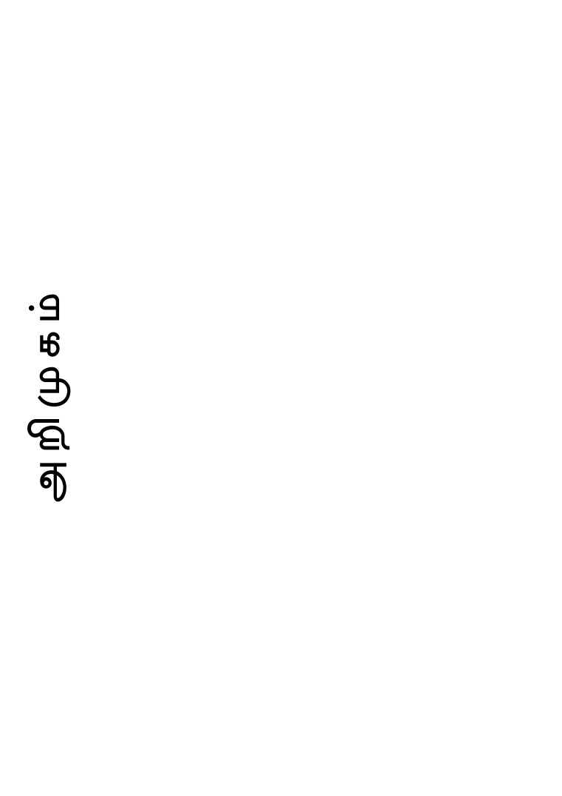
போற்றப்படுகிறது. மிக நெடுங்காலமாக இந்நகரம் கல்வி வளர்க்கும் பெரும்
மையமாக விளங்கி வந்தது யாவரும் நன்கு அறிந்ததே. சங்க இலக்கியத்தில்
கூறப்படும் சங்கம் இங்கு தான் அமைக்கப்பட்டிருந்தது. போற்றத் தக்கவகையில்
ஆட்சி செய்த தொன்மைக்குமிகு பாண்டியர் ஆட்சிக்காலத்தில் மதுரை மாநகரம்
அயல்நாடுகளுடன் வணிகம் மற்றும் பண்பாட்டுத் தொடர்புகளை பெற்றிருந்தது.
பண்டைய கிரேக்க ரோமானியர்கள் பாண்டிய மன்னர்களையும் அவர்களின்
பாண்டியர் தலைநகரான மதுரை பற்றியும் நன்கு அறிந்திருந்தனர். கி.மு. 320
இல் ஆட்சிசெய்த சந்திரகுப்த மௌரியர் அரசவையில் கிரேக்க நாட்டு மன்னன்
செலுக்கஸ் நிகேதர் அவையில் அரசு தூதுவராக இடம்பெற்றிருந்தவர் மெகஸ்தனீஸ்.
இவர் தென்னகத்தில் நிலைபெற்றிருந்த அரசுகள் பற்றி மிகவிரிவாக தனது
குறிப்புகளில் எழுதியுள்ளார்.
ஸ்டிரோபா எனும் ரோமானிய பயணி தன் நூற்குறிப்பில் ரோமாபுரியில் அகஸ்டஸ்
பேரரசுக்கு பாண்டிய மன்னன் தூதுவர் ஒருவரை அனுப்பிய செய்தியினை
குறிப்பிடுகிறார். இதே போன்று பிளினி (கி.பி. 75) பாண்டி மன்னன் மற்றும்
பாண்டியரின் தலைநகர் மதுரைக் குறித்து
குறிப்பெழுதியுள்ளார். மேலும், கி.பி.
130ஆம் ஆண்டில் தாலமி என்பவரும் மதுரையை பாண்டியர்களின் தலைநகர்
என்று குறிப்பிட்டுள்ளார்.
கௌடில்யர் தனது அர்த்தசாஸ்திரம் எனும் நூலில் வடஇந்தியா மற்றும் ,
தென்னிந்தியாவில் நிலவிய வணிக பரிமாற்றம் பற்றி கூறுகையில் பாண்டிய
நாட்டில் விளையும் நன்முத்துகள் குறித்தும், மஸ்லின் என்றழைக்கப்படும் ஆடை
குறித்தும் எழுதியுள்ளார். இதுபோலவே, வானவியல் அறிஞர் வராகமிகிரர் தனது
பிருகத்சம்கிதையில் பாண்டிய அரசை பற்றி கூறியுள்ளார். புகழ்பெற்ற வடமொழி
கவிஞர் காளிதாசர் தன் காப்பியத்தில் மன்னன் ரகுவால் ஆட்சி செய்யப்பட்ட ஒரு
பகுதியாக பாண்டிய அரசு விளங்கிற்று என்று குறிப்பிட்டுள்ளார்.
அசோகரின் 2 மற்றும் 13ஆம் பாறைக் கல்வெட்டுகள் தென்னகத்தில் சோழ,
பாண்டிய, சத்யபுத்ர மற்றும் கேரளபுத்ர அரசுகள் இருந்தன என்று குறிப்பிடுகின்றன.
இதே கால கட்டத்தைச் சார்ந்த மதுரைப் பகுதியில் கிடைக்கப் பெற்றுள்ள தமிழிக்
கல்வெட்டுகளில் மதுரை மற்றும் பாண்டிய மன்னன் நெடுஞ்செழியன் குறித்தும்
குறிப்புகள் காணப்படுகின்றன.
மதுரையில் சமணம்
கர்நாடகா மாநிலத்திலுள்ள சரவணபெலகோலா எனும் இடத்துக்கு பத்ரபாகு
தலைமையில் இடம் பெயர்ந்த சமணர்களால் தென்னிந்தியாவில் சமணம் பரவியது
என்று கூறப்படுகிறது. மதுரையும் அதனைச் சுற்றியுள்ள பகுதிகளும் சமணர்கள்
தமது தனித்த வாழ்வை மேற்கொள்ளப் பொருத்தமான இடங்களாக விளங்கின.
மதுரையைச் சுற்றி அமைந்திருந்த இயற்கையான பாறைக் குகைகளை தேர்வு செய்து
குடியேறினர். இவ்வாறு பாறைகளைக் குடைந்து படுக்கைகள் அமைக்கப்பட்ட 14
குகைகளை மதுரையைச் சுற்றி காண முடியும். இந்த மலைக்குகை பகுதிகளில்
கி.மு.500 முதல் கி.பி.300 வரையிலான எழுத்தமைதியைில் தமிழிக் கல்வெட்டுகள்
காணப்படுகின்றன. அவைகளுள் பழமையானது ஐந்து தமிழிக் கல்வெட்டுகளைக்
கொண்டு திகழும் மாங்குளம் ஆகும்.
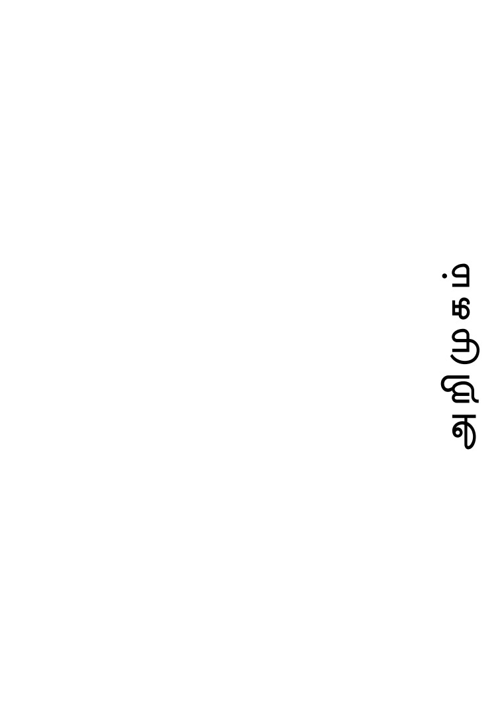
தொல்லியல் களஆய்வுகள்
மதுரைக்கு வடக்கே சில கற்கால கற்கருவிகளும், 20 கி.மீ. தொலைவில்
அமைந்திருக்கும் ஆவியூர் என்ற ஊரில் பழங்கற்காலக்கருவி ஒன்றும் இராபர்ட்
புரூஸ்புட் அவர்களால் கண்டெடுக்கப்பட்டது.
மத்திய தொல்லியல் துறையின் தென்னிந்திய வட்டத்தின் தொல்லியல்
கண்காணிப்பாளராக முனைவர் கே.வி. ராமன் பணியாற்றிய போது 1950களின்
பிற்பகுதியில் மதுரை, திருமங்கலம், மேலூர், பெரியகுளம் ஆகிய வட்டங்களில்
கிராமம் கிராமமாக களஆய்வுகள் மேற்கொண்டு பல தொல்லியல் இடங்களையும்,
தொன்மைச் சின்னங்களையும் கண்டறிந்து அறிக்கையாக சமர்ப்பித்துள்ளார். அதனைத்
தொடர்ந்து 2006ஆம் ஆண்டில் முனைவர் கே.இராஜன் மற்றும் அவரது மாணவர்கள்
வைகைநதிப் படுகையின் மேற்பிடிப்புப் பகுதியில் களஆய்வு மேற்கொண்டனர்.
குறிப்பாக திண்டுக்கல் மாவட்டத்திலுள்ள தாதகப்பட்டி மற்றும் திண்டுக்கல்
மாவட்டத்திலுள்ள புலிமான்கோம்பை ஆகிய ஊர்களில் பொது ஆண்டின் தொடக்க
நூற்றாண்டுகளைச் சேர்ந்த நடுகற்களை கண்டறிந்து வெளிக்கொணர்ந்தனர்.
தமிழ்நாடு அரசு தொல்லியல் துறை வைகைநதிக்கரையில் 1987ஆம் ஆண்டு
மேற்கொள்ளப்பட்ட களஆய்வுகளில் உத்தமபாளையம் வட்டத்திலுள்ள எல்லப்பட்டி
என்ற ஊரில் இரும்பு உருக்கும் தொழிற்கூடப் பகுதி வெளிக்கொணரப்பட்டது.
இதனைத் தொடர்ந்து அண்மையில் மத்திய தொல்லியல் துறையால் வைகைநதிக்
கரையின் இருமருங்கிலும் உள்ள 293 ஊர்களில் களஆய்வு மேற்கொண்டு
பெருங்கற்காலத்தாழிகள், கல்வெட்டுகள், சிற்பங்கள், நடுகற்கள், பண்டைய
வாழ்விடப்பகுதிகள் போன்றவை கண்டறியப்பட்டு முறையாக ஆவணப்படுத்தப்பட்டன.
அண்மைக் கண்டுபிடிப்புகள் மற்றும் ஏற்கனவே கள ஆய்வு நடந்த இடங்களில்
மேற்கொள்ளப்பட்ட மறு ஆய்வுகளின் முடிவுகளை உள்ளடக்கிய இது இதுவரை
அறியப்படாத புதிய கண்டுபிடிப்புகளை வெளிக்கொணர்ந்தன.
தொல்லியல் அகழாய்வுகள்
இந்தியா விடுதலை அடைவதற்கு முன் அலெக்சாண்டர் ரீயா என்பவரால்
பெருங்கற்கால தாழிப் பகுதிகள் கொண்ட இடங்களான மதுரை சிற்றூர் பகுதிகளான
பரவை மற்றும் அனுப்பானடியில் அகழாய்வுகள் மேற்கொள்ளப்பட்டன. அதன்பிறகு
இப்பகுதியின் தொன்மை உணர்ந்து மத்திய தொல்லியல் துறை
1976 ஆம்
ஆண்டில் டி.கல்லுப்பட்டியில் முறையான அகழாய்வினை
மேற்கொண்டது.
இதனைத் தொடர்ந்து தமிழக தொல்லியல் துறை கோவலன் பொட்டல் (197980),
அழகன்குளம் (198687, 199091, 199293, 199495, 199667, 199798, 2014
15, 201617) மற்றும் மாங்குளம் (200607) போன்ற பகுதிகளில் அகழாய்வினை
மேற்கொண்டது. அவ்அகழாய்வுகளில் வைகை நதி வங்கக் கடலில் கலக்கும்
பகுதியில் உள்ள அழகன்குளம் அகழாய்வு முக்கியத்துவம் கொண்டது ஆகும்.
இந்த ஆய்வில் சங்க கால பாண்டிய துறைமுகப் பட்டணமாக அழகன்குளம்
விளங்கியிருந்தமை கண்டு பிடிக்கப்பட்டது.
கீழடியில் தொல்லியல் அகழாய்வுகள்
அண்மையில் தமிழர் பண்பாட்டு புகழ் பரப்பி வரும் கீழடி அகழாய்வு பகுதியானது
110 ஏக்கர் நிலப்பரப்பிற்கு மேல் அதிக சிதைவில்லாமல் தென்னந்தோப்புகளால்
பாதுகாக்கப்பட்டு
9 51’29"" வடக்கு அட்ச ரேகைக்கும்,
98 11’69"" கிழக்கு
தீர்க்க ரேகைக்கும் இடையே அமையப் பெற்றுள்ள ஒரு தொன்மை நகரிய
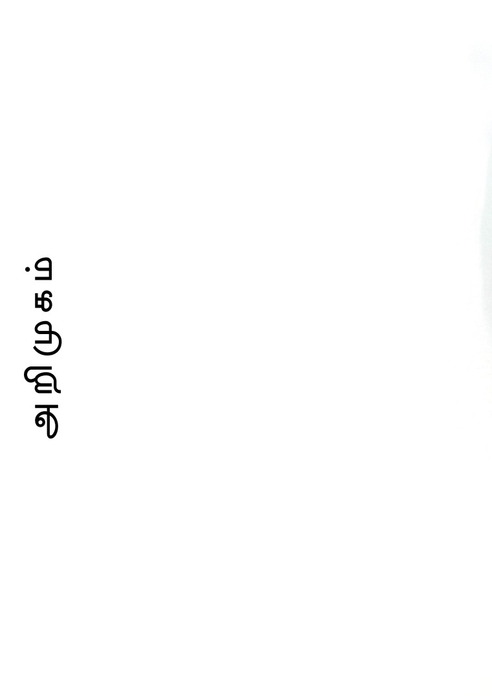
குடியிருப்பு மற்றும் தொழிற்கூடப் பகுதி ஆகும்.
தமிழகத்தின் ஒரு கோயில் நகரமாக திகழும் மதுரை நெடுஞ்சாலை வழியே கிழக்கு
தென்கிழக்காக 13 கி.மீ. தொலைவில் கீழடி அமைந்துள்ளது. கீழடி அகழாய்வுப்
பணி இடத்தின் வடக்கே 2 கி.மீ. தொலைவில் வைகை ஆறு செல்கிறது. கிழக்கு
பகுதியில் உள்ள மணலூர் கிராமத்தின் வடக்கில் ஒரு கண்மாய் அமைந்துள்ளது.
வடகிழக்கில் உள்ள இயற்கை நீர்நிலை காட்சியளிக்கின்றது. இது போலவே
அகரம் என்னும் ஊர் கீழடியின் தென்கிழக்கே அமைந்துள்ளது.
மேற்கே கொந்தகை
என்னும் ஊர் ஓர் எல்லையாக விளங்குகிறது. இவ்வாறு சுற்றியுள்ள அனைத்து
பகுதிகளும் ஊரணிகள், கண்மாய்கள் என இயற்கை அரண்களாக
பெற்று
வரலாற்று தொடக்க கால முதல் சமகாலம் வரை மனித வாழிடத்திற்கு உகந்ததாக
திகழ்கிறது.
முந்தைய ஆண்டுகளில் ( 201415, 201516 மற்றும் 201617) இப்பகுதியில்
மத்திய தொல்லியல் துறையில் அகழாய்வு பிரிவு, பெங்களூர் பிரிவு அகழாய்வு
மேற்கொண்டது. கீழடியின் நான்காம் மற்றும் ஐந்தாம் கட்ட அகழாய்வுகளை
தமிழக அரசு தொல்லியல் துறை முறையே 201718 மற்றும் 201819 ஆம்
ஆண்டுகளில் செயல்படுத்தி வருகிறது. இந்த அகழ்வாய்வுகளில் இப்பகுதியில்
புதைந்துள்ள கட்டடப்பகுதியையும், அரும்பொருட்களையும் வெளிக்கொணரும்
வண்ணம் பெரும்பரப்பு அகழாய்வு தொடர்ந்து நடந்து வருகிறது. ஐந்தாம் கட்ட
கீழடி அகழாய்வானது
முறைப்படுத்தப்பட்ட
முறையில் நேர்த்தியுடன் நடந்து
வருகிறது.
கீழடி அகழாய்வின் முதன்மைத் தரவுகள் (201718)
நான்காம் கட்ட அகழாய்வில் 5820 அரும்பொருட்கள் வெளிக்கொணரப்பட்டுள்ளன
இவை பண்டைய பண்பாட்டை வெளிக்கொணரும் வகையில்
செங்கற்
கட்டுமானங்கள், சுடுமண் உறைக் கிணறுகள், மழை நீர் வடியும் வகையில்
விரல்களால் அழுத்தி பள்ளம் இடப்பட்ட அமைப்பைக் கொண்ட கூரை ஓடுகள்
போன்றவையாக காணப்படுகின்றன.
மேலும், அரும்பொருட்களும் விலை உயர்ந்த தங்க அணிகலன் பகுதிகள்,
உடைந்த பகுதிகள்,
செப்பு பொருட்கள், இரும்பு கருவி பாகங்கள், சுடுமண்
சொக்கட்டான் காய்கள் வட்ட செல்கள், சுடுமண் காதணிகள், கண்ணாடி மற்றும்
விலை உயர்ந்த மணி கற்கள் (அகேட் சூதுபவளம், ஸ்படிகம்) அக்கால மட்பாண்ட
ஓடுகள் (கருப்பு சிவப்பு, கருப்பு, சிவப்பு பூச்சு மட்கலப் பகுதிகள்) ரௌலட்டட்
மட்பாண்டங்கள் அரட்டின் ஓடுகள் ஆகியனவும் வெளிக் கொணரப்பட்டன.
பெரும்பாலான மட்பாண்டங்களில் கீறல்களும், குறியீடுகளும், வடிவங்களும்
காணப்பட்டன. இவை சுடுவதற்கு முன்பும் பின்பும் பொறிக்கப்பட்ட நிலையில்
உள்ளன. இவ்வகழாய்வில் கணிசமான எண்ணிக்கையில் (50க்கும் மேற்பட்ட)
தமிழி
(தமிழ் பிராமி) எழுத்துக்கள் பொறிக்கப்பட்ட மட்கல துண்டுகள்
கண்டெடுக்கப்பட்டன. இப்பொருட்கள் வாயிலாக கீழடி பகுதியில் பண்டைய
காலத்தில் தமிழர் நாகரிகம் வளர்ச்சி அடைந்த நிலையில் இருந்ததும், இப்பகுதி
மதுரையின் கிழக்கு திசை நீட்சியாக விளங்கியிருக்க என்பதும் புலனாகிறது.
எனவே, கீழடியில் மறைந்துள்ள தொல்பொருட்களை வெளிக்கொணர வேண்டியது
காலத்தின் தேவை என்பதை கருத்திற்கொண்டு வரும் காலங்களில் தமிழ்
சமுதாயத்தில் தொன்மை மிக்க பண்பாட்டு செல்வங்களை வெளிக்கொணரும்
வகையில் அகழ்வாய்வுகள் தொடர்ந்து மேற்கொள்ளப்பட உள்ளன.
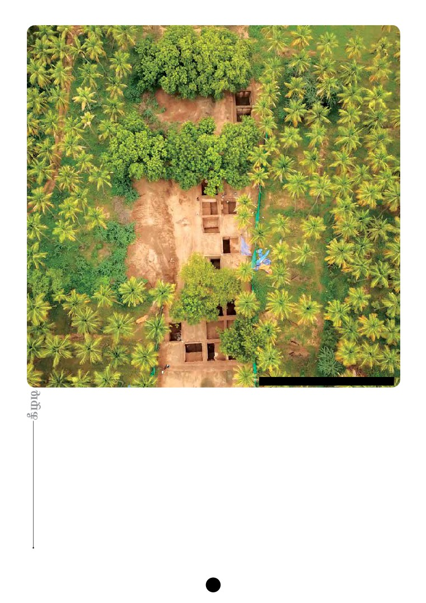
கட்டடச் சுவர் வான்வழி பார்வை
தமிழகத்தில் நிலவிய சங்ககால
பண்பாட்டு வரலாற்றாய்வில்
ஒரு திருப்புமுனை
ழந்தமிழர் பண்பாட்டின் சிறப்பம்சங்களை உலக அரங்கில் நிலை நிறுத்தும் நோக்கோடு, தமிழ்நாடு
ப
அரசு தொல்லியல் துறை, கீழடி அகழாய்வின் போது சேகரிக்கப்பட்ட தொல்பொருட்களைப்
புகழ்பெற்ற அறிவியற்கூடங்களுக்கு அனுப்பி ஆய்வு முடிவுகளைப் பெற்றுள்ளது. அவ்வாறு
பெறப்பட்ட ஆய்வு முடிவுகளைத் தொல்லியல் அறிஞர்கள் கொண்ட குழு ஆராய்ந்து தனது
கருத்துக்களைத் தெரிவித்துள்ளது. அதன் சிறப்புக்கூறுகள் இங்கு கொடுக்கப்பட்டுள்ளன.
1
1
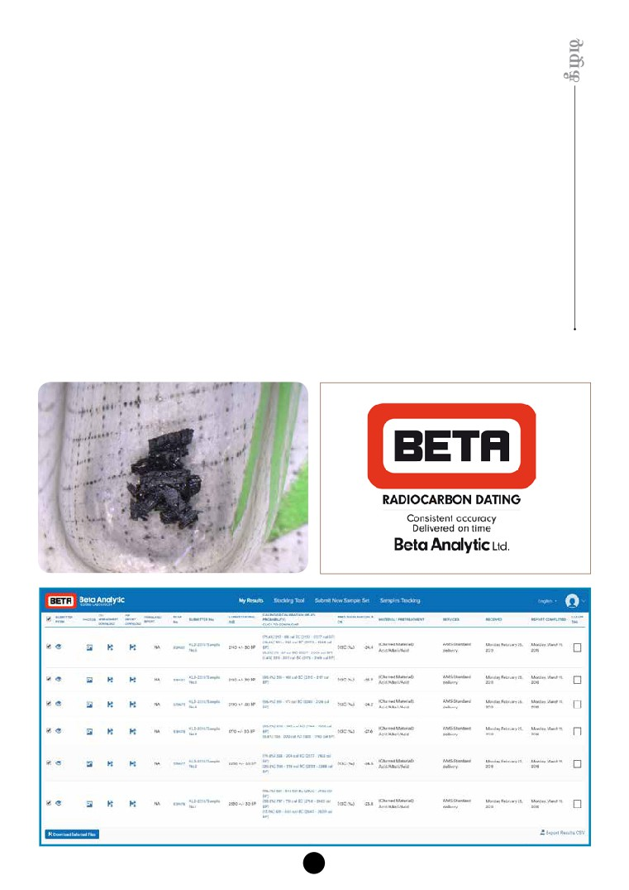
2600 ஆண்டுகள்
பழமை வாய்ந்த கீழடி பண்பாடு
ழடியில் 2018 ஆம் ஆண்டு மேற்கொள்ளப்பட்ட
இந்த ஆய்வு முடிவுகளைக் கவனமாக
கீ
நான்காம் கட்ட அகழாய்வின் போது
ஆய்வு செய்த பிரபல தொல்லியல் அறிஞர்
சேகரிக்கப்பட்ட ஆறு கரிம மாதிரிகள், அமெரிக்க
பேராசிரியர் கா.இராஜன், பழந்தமிழரின்
நாட்டின் புளோரிடா மாகாணம், மியாமி நகரத்தில்
தொன்மை தொடர்பாக இதுவரை நிலவி வந்த
அமைந்துள்ள, பீட்டா பகுப்பாய்வு சோதனை
சில கேள்விகள் மற்றும் கருதுகோள்களுக்கு
ஆய்வகத்திற்கு (Beta Analytic Testing Laboratory)
உறுதியான விடைகள் / சான்றுகள் தற்போது
அனுப்பப்பட்டன. பகுப்பாய்விற்கு அனுப்பப்பட்ட
கிடைத்துள்ளன என்று கருதுகிறார்.
மாதிரிகளில் அதிகபட்சமாக 353 செ.மீ. ஆழத்தில்
குறிப்பாக தமிழ்நாட்டில் நகரமயமாதல்
கிடைக்கப் பெற்ற கரிமத்தின் காலம் கி.மு. 580
கி.மு.3ஆம் நூற்றாண்டு வாக்கில்தான்
என்று கணக்கீடு செய்யப்பட்ட ஆய்வறிக்கை
தொடங்கியது என இதுவரை கருதப்பட்டு
கிடைக்கப் பெற்றுள்ளது. இக்காலக்கணிப்பின்படி,
வந்தது. ஆனால், தற்போது கிடைக்கப்பெற்றுள்ள
கி.மு. 6ஆம் நூற்றாண்டு முதல் கி.பி.1ஆம்
சான்றுகளின் மூலம் வைகை நதிக்கரையில்
நூற்றாண்டு வரை வளமையான பண்பாடு கொண்ட
நகரமயமாதல் கி.மு.6ஆம் நூற்றாண்டிலிருந்து,
பகுதியாக கீழடி விளங்கியிருக்க வேண்டும் எனத்
தொடங்குகிறது என்பது
தெளிவாகிறது.
தெரிகிறது.
2
2
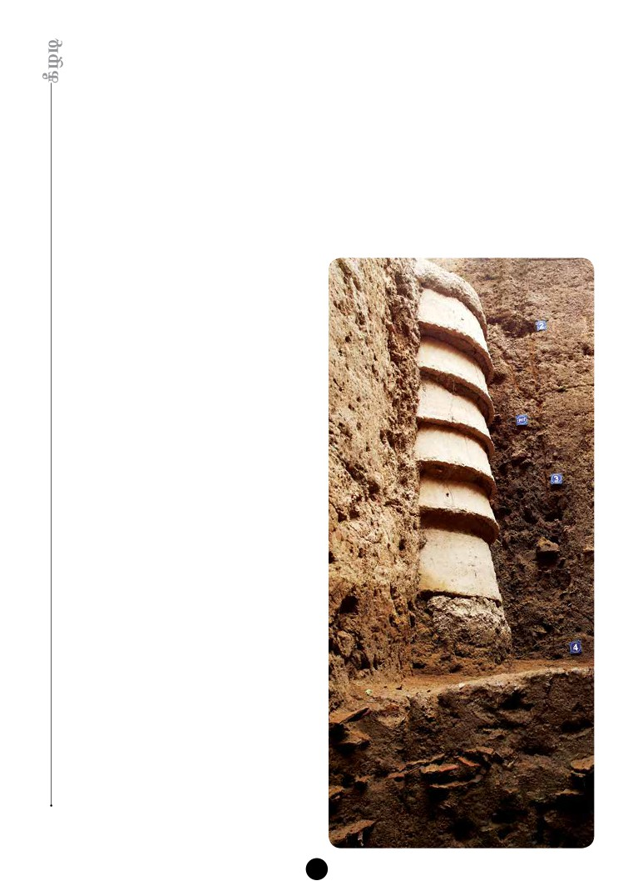
இதே காலக்கட்டத்தில்தான் வடஇந்தியாவின்
கணக்கீடு செய்யப்பட்டதில் இதனின் காலம்கி.மு. 8ஆம்
கங்கை சமவெளிப் பகுதியிலும் நகரமயமாதல்
நூற்றாண்டு என்று வரையரை செய்யப்பட்டுள்ளது.
தொடங்கியது என்பது குறிப்பிடத்தக்கது.
தற்போது கீழடி அகழாய்வில் சேகரிக்கப்பட்ட ஆறு
கரிம பகுப்பாய்வுகளின் முடிவுகள் கீழடியின் காலம்
அதேபோல், இதுவரை தமிழ்பிராமி எழுத்து
கி.மு. 6ஆம் நூற்றாண்டு என்று தெரிய வருகிறது.
வடிவத்தின் காலம் கி.மு. 5ஆம் நூற்றாண்டு
என அழகன்குளம், கொடுமணல், பொருந்தல்
அண்மைக்கால அகழாய்வுகளும், அறிவியல்
அகழாய்வுகளின்படி கருதப்பட்டு வந்தது.
ரீதியான காலகணிப்புகளும், தமிழ்நாட்டில் ஏறத்தாழ 15
எனினும், தற்போது கிடைத்திருக்கும் கீழடி
இலட்சம் ஆண்டுகளாக மக்கள் வாழ்ந்து வருகின்றனர்
அகழாய்வில் கிடைத்த அறிவியல் ரீதியான
என்பதும், தற்போதைய கீழடி ஆய்வுகள் மூலம்
காலக்கணிப்புக்கள் தமிழ்பிராமியின் காலம்
தமிழகத்தின் தொடக்க கால வரலாறு காலத்தில்
மேலும் நூறாண்டுகள் (கி.மு. 6ஆம் நூற்றாண்டு)
(Early Historic Period) கி.மு. 6ஆம் நூற்றாண்டளவில்
பழமை வாய்ந்தது என்னும் முடிவுக்கு நம்மை
மக்கள் எழுத்தறிவு பெற்று விளங்கி இருந்தனர்
இட்டுச் செல்கிறது.
என்பது உறுதியாகிறது.
எழுத்து பொறிப்பு பெற்ற பானை ஓடுகள்
கிடைக்க பெற்றுள்ளதின் மூலம் கி.மு. 6ஆம்
நூற்றாண்டளவிலேயே தமிழகம் எழுத்தறிவு
பெற்ற சமூகமாக விளங்கியுள்ளதை நிலைநிறுத்த
முடிகிறது. எழுத்தறிவு தொடங்கிய காலம்
கி.மு. 3ஆம் நூற்றாண்டு என்று இதுவரை
கருதப்பட்டு வந்தது. இக்கருத்தாக்கதில்
பெரும் மாற்றத்தை கீழடி ஆய்வு முடிவுகள்
ஏற்படுதியுள்ளன என்றால் மிகையாகாது.
திருவள்ளூர் மாவட்டம் அத்திரம்பாக்கம்
அகழாய்வில் கண்டறியப்பட்ட முதற்கட்ட
பழையகற்கால (Lower Palaeolithic) கருவிகள் 15
இலட்சம் ஆண்டுகள் என்றும், இரண்டாம் கட்ட
பழையகற்கால (Middle Palaeolithic) கருவிகள்
3,85,000 ஆண்டுகள் பழமையானது என்றும்,
கற்கருவிகளை காசுமோசெனிக்நியூக்லைட்ட்
எனப்படும் இயலுலக புவிபரப்பியல் ஒளி ஆய்வு
(Cosmogenic-Nuclide Burial Dating Method)
செய்ததில் இக்கால முடிவுகள் பெறப்பட்டன
எனவும் ஆய்வுகள் தெரிவிக்கின்றன. அதே
போன்று நுண்கற்காலத்தைச் (Microlithic /
Mesolithic Period) சேர்ந்த கற்காலக் கருவிகள்
திருநெல்வேலிப் பகுதியிலும், வைகை
மற்றும் குண்டாறு ஆற்று படுகைகளிலும்,
புதியகற்காலப் (Neolithic Culture) பண்பாடுகளின்
கருவிகள் தமிழகத்தின் வடக்கு, வடமேற்குப்
பகுதிகளில் குறிப்பாக தருமபுரி, கிருஷ்ணகிரி,
திருவண்ணாமலை, வேலூர் மாவட்டங்களில்
கிடைத்துள்ளன. அதன் அடுத்தக்
காலக்கட்டமான இரும்புக் காலத்தைச் சார்ந்த
சேலம் வட்டாரத்திலுள்ள மாங்காடு மற்றும்
தெலுங்கனூர் ஊரிகளிலுள்ள பெருங்கற்படை
ஈமச் சின்னங்களில் கண்டறியப்பட்ட
மாதிரிகளிலிருந்து இரும்புக் காலம் கி.மு. 2000
என காலக் கணக்கீடு செய்யப்பட்டுள்ளது.
ஆதிச்சநல்லூர் முதுமக்கள்தாழி அகழாய்வில்
இருந்து சேகரிக்கப்பட்ட கரிமம் காலக்
3
134
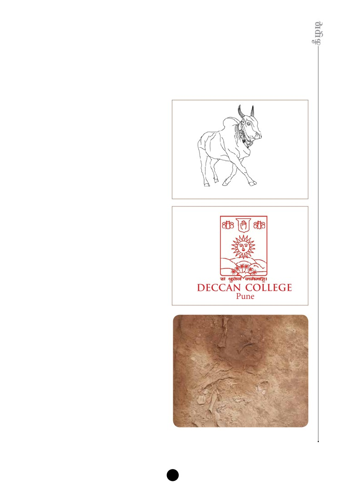
வேளாண் சமூகம் மற்றும்
கால்நடை வளர்ப்பு
ழடி அகழாய்வில் வெளிக்கொணரப்பட்ட
W
விலங்குகளின் 70 எலும்புத் துண்டுகளின்
மாதிரிகள், அறிவியல் அடிப்படையில் பகுப்பாய்வு
செய்வதற்கு புனேவிலுள்ள முதுகலை மற்றும்
ஆராய்ச்சி நிறுவனமான டெக்கான் கல்லூரிக்கு
அனுப்பப்பட்டன.
இந்த எலும்புத் துண்டுகள் பகுப்பாய்வின்
தன்மைக்கேற்ப வகைப்படுத்தப்பட்டதில் இவை
திமிலுள்ள காளை, எருமை, வெள்ளாடு,
கலைமான், காட்டுப்பன்றி மற்றும் மயில் ஆகிய
உயிரினங்களுக்குரியவை என்று அடையாளம்
காணப்பட்டுள்ளன.
இவற்றில் திமிலுள்ள காளை, பசு, எருமை,
வெள்ளாடு ஆகிய விலங்கினங்கள் 53 சதவீதம்
இடம்பெற்றுள்ளன. எனவே, இவ்விலங்கினங்கள்
வேளாண்மைக்கு உறுதுணை செய்யும் வகையில்
கால்நடைகளாக வளர்க்கப்பட்டுள்ளன எனக்
கருதலாம்.
கலைமான், வெள்ளாடு, காட்டுப்பன்றி போன்ற
விலங்குகளின் சில எலும்பு மாதிரிகளில் வெட்டுத்
தழும்புகள் காணப்படுகின்றன என்று ஆய்வில்
குறிப்பிட்டுள்ளதால், இவ்விலங்கினங்களை அக்கால
மனிதர்கள் உணவிற்காகப் பயன்படுத்தியுள்ளனர்
என்பது தெரிய வருகிறது.
இப்பகுப்பாய்வு முடிவுகள் மூலம் சங்காலச்
சமூகம், வேளாண்மையை முதன்மைத் தொழிலாகக்
கொண்டுடிருந்ததோடு, கால்நடை வளர்ப்பையும்
மேற்கொண்டிருந்தது என்பது தெளிவாகிறது.
இனி வருங்காலங்களில் மேற்கொள்ளப்படும்
அகழாய்வின் போது சேகரிக்கப்படும் மகரந்தம்
மற்றும் பைட்டோலித் போன்ற தாவரவியல்
மாதிரிகளை முறையாக பகுப்பாய்வு செய்வதன்
மூலம் கூடுதல் தெளிவு பெற முடியும்.
திமிலுள்ள காளையின் எலும்பு துண்டுகள்
4
4
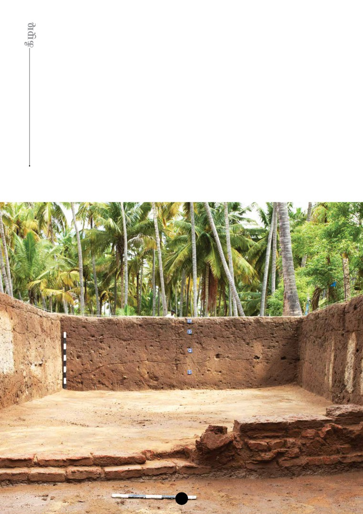
கட்டுமானப் பொருட்களின்
பகுப்பாய்வு
ழடி அகழாய்வில் கண்டறியப்பட்ட
செங்கல் மற்றும் கூரை ஓடுகளில் 80 சதவீதத்திற்கும்
கீ
செங்கற்கள், சுண்ணாம்புச் சாந்து,
அதிகமாக சிலிக்காவும், பிணைப்புக் காரணியாக
கூரை ஓடுகள் மற்றும் சுடுமண்ணாலான
அதிகளவு (7%) சுண்ணாம்பும் கலந்துள்ளதையும்;
உறைகிணற்றின் பூச்சு ஆகியவற்றின் மாதிரிகள்
சுண்ணாம்புச் சாந்து, 97 சதவீதம் சுண்ணாம்பு
வேலூர் தொழில்நுட்ப பல்கலைக் கழகத்துக்குப்
கொண்டிருந்ததையும் உற்று நோக்கும் பொழுது
பகுப்பாய்வுக்காக அனுப்பப்பட்டன. இவை
அக்காலக்கட்ட மக்கள் மிகத் தரமான கட்டுமானப்
ஒவ்வொன்றிலும் சிலிக்கா மண், சுண்ணாம்பு,
பொருட்களைப் பயன்பத்தியுள்ளனர் என்பது தெரிய
இரும்பு, அலுமினியம், மற்றும் மெக்னீசியம்
வருகிறது. மேற்படி சுண்ணாம்பு சாந்தில் 97
போன்ற கனிமங்கள் காணக்கிடைக்கின்றன.
சதவீதம் சுண்ணாம்பு இருப்பதாக ஆய்வறிக்கையில்
அவற்றின் கலவை மற்றும் தன்மை குறித்து
தெரிவித்திருப்பதால் மிகவும் வலிமையாக இன்று
5
விரிவான அறிக்கை பெறப்பட்டுள்ளது.
வரை நீடித்திருப்பதற்கு இதுவே சான்றாகும்.
கட்டுமானச் சுவர்
5
கட்டட தொழில்நுட்பம்
மிழ்நாடு அரசு தொல்லியல் துறையின் இரண்டு
வைத்து மரச்சட்டங்களை இரும்பு ஆணிகள்
த
கட்ட அகழாய்வுகளில் சிறிய அளவிலான செங்கல்
கொண்டு பொருத்தியிருக்க வேண்டும் என்று
கட்டுமானங்கள் வெளிப்படுத்தப்பட்டுள்ளன. இரண்டாம்
கருதலாம். அகழாய்வின் ஒரு பகுதியில்
கட்ட அகழாய்வில் 13 மீட்டர் நீளமுள்ள மூன்று வரிசை
ஏராளமான கூரை ஒடுகள் சரிந்து விழுந்து
கொண்ட சுவர் ஒன்று வெளிப்படுத்தப்பட்டுள்ளது.
பரந்து கிடைத்ததற்கான அடையாளங்கள்
இச்சுவரில் 38ஜ்23ஜ்6 அளவு மற்றும் 38ஜ்26ஜ்6
ஆவணப்படுத்துப்பட்டுள்ளன. இக்கூரை
அளவு கொண்ட இரண்டு விதமான செங்கற்கள்
ஓடுகளின் தலைப் பகுதியில் இரண்டு துளைகள்
பயன்படுத்தப்பட்டுள்ளன.
காணப்படுகின்றன. மரச்சட்டங்களைக்
செங்கல்லின் அகலம் மட்டுமே சிறிது மாறுபட்டு
கொண்டு அமைக்கப்பட்ட மேற்கூரையின் மீது
இருக்கிறதே தவிர நீளம் மற்றும் தடிமன் ஆகியவை
கீழிலிருந்து மேலாக சுடுமண்ணாலான கூரை
ஒரே அளவில் உள்ளது குறிப்பிடத்தக்கது.
ஓடுகள் வேயப்பட்டிருப்பதுடன், அவை கீழே
விழாமல் இருக்க அத்துளைகளில் நார் அல்லது
இவை, தமிழகத்தில் சங்ககாலத்தைச் சார்ந்த பிற
கயிறு கொண்டு கட்டியிருக்க வாய்ப்புள்ளது.
தொல்லியல் இடங்களில் காணப்படும் செங்கற்களைப்
மேற்கூரை மீது விழும் மழை நீர் எளிதில்
போல்1:4:6 என்ற விகிதாச்சார அளவிலேயே
கீழே வரும் வகையில், கூரை ஓடுகளில்
காணப்படுவதால் அக்காலகட்டத்தில் கட்டுமானத்தில்
விரல்களால் மிக அழுத்தி உருவாக்கப்பட்ட
காணப்படும் தொழில்நுட்பத்தை உய்த்து உணரலாம்.
நீர் வடியும் பள்ளங்கள் காணப்படுகின்றன.
சில பகுதிகளில் தரைத்தளம் கண்டறியப்பட்டுள்ளது.
இந்த கட்டுமான அமைப்புகளை சங்க
நன்கு சன்னமான களிமண்ணைக் கொண்டு தரைத்தளம்
காலத்தில் நிலவிய, வளர்ந்த சமூகத்தின்
அமைத்து, செங்கற்களைக் கொண்ட பக்கச்சுவர்களை
அடையாளமாக பார்க்கலாம்.
எழுப்பியுள்ளனர். தூண்கள் நட்டு மேற்கூரை அமைக்க
ஏற்படுத்தப்பட்ட துளைகள் கண்டறியப்பட்டுள்ளன.
தற்போது அகழாய்வுகள் தொடர்ந்து நடந்து
இத்தூண்கள் மரத்தால் செய்யப்பட்டிருக்க வேண்டும்.
வருகின்றன. செங்கல் கட்டுமானங்கள்
ஆனால், அதற்கான சான்றுகள் அகழாய்வில்
முழுமையாக வெளிப்படுத்தப்பட்ட பின்னர்,
கிடைக்கப் பெறவில்லை. எனினும், அகழாய்வில்
இக்கட்டுமானத்தின் பயன்பாடு குறித்து
இரும்பு ஆணிகள் கண்டெடுக்கப்பட்டுள்ளதை
முழுமையாகத் தெரியவரும்.
6
6
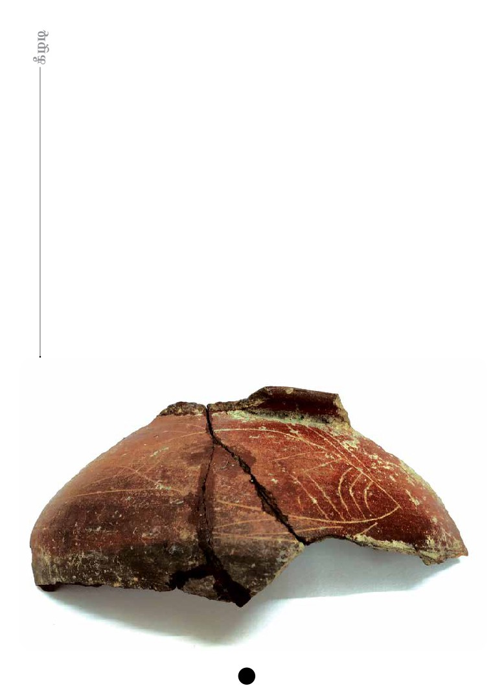
கீறல்கள்/குறியீடுகள்
ந்தியாவில் கிடைக்கப்பெற்ற வரிவடிவங்களில்
அழகன்குளம், கொடுமணல், கரூர், தேரிருவேலி,
இ
காலத்தால்\தொன்மையானது 4,500
உறையூர், மாங்குளம், பேரூர் மற்றும் பிற
ஆண்டுகள் பழமை வாய்ந்த சிந்துவெளி
தொல்லியல்சார் இடங்களில் மேற்கொள்ளப்பட்ட
வரிவடிவங்களாகும். சிந்துவெளி பண்பாடு
அகழாய்வுகளிலும் குறியீடுகள் கொண்ட பானை
மறைந்தற்கும் தமிழ்பிராமி எழுத்துகள்
ஓடுகள் கிடைத்துள்ளன. தமிழகம் மட்டுமின்றி
தோன்றியதற்கும் இடைப்பட்ட காலத்தில் ஒரு
இலங்கையில் திசமஹரம, கந்தரோடை,
வரிவடிவம் இருந்தது. அவ்வரிவடிவத்தினை
மாந்தை, ரிதியகாமா போன்ற ஊர்களிலும்
ஆய்வாளர்கள் குறியீடுகள் என்றும் கீறல்கள்
இதுபோன்ற குறியீடுகள் கிடைத்துள்ளன.
என்றும் அழைக்கின்றனர். இவற்றை சாதாரண
இந்திய துணைக்கண்டத்தில் தமிழகத்தில்
கீறல்கள் என்று புறந்தள்ளிவிட இயலாது.
இவை பரந்த அளவில் சேகரிக்கப்பட்டுள்ளன.
ஏனெனில், இவை சிந்துவெளி வரிவடிவத்தின்
அதிலும் குறிப்பாக தென்னிந்தியாவில்
நீட்சியாகவும் தமிழ்பிராமி எழுத்துகளின்
கண்டெடுக்கப்பட்டுள்ள குறியீடுகளில் 75
முன்னோடியாவும் இருக்க வேண்டும். சிந்துவெளி
சதவீதம் தமிழகத்தில் கிடைக்கப்பெற்றவை
எழுத்துகள் போன்றே இவற்றை படித்தறிதலும்
என்பது சிறப்பாகும்.
முழுமைபெறவில்லை. செப்புக்கால பண்பாட்டிலும்
தமிழ் பிராமிக்கு முந்தைய வரிவடிவமாக
அதன் தொடர்ச்சியாக பெருங்கற்கால பண்பாட்டில்
விளங்கிய குறியீடுகள் பெருங்கற்கால மற்றும்
இக்குறியீடுகள் கிடைக்கின்றன.
இரும்புக் கால மக்களின் எண்ணத்தை
இத்தகைய குறியீடுகள் கருப்புசிவப்பு பானை
பிரதிபலிக்கும் எழுத்துவடிவமாகும். கீழடி
ஓடுகளில் காணப்படுவது குறிப்பிடத்தக்கது. இரும்புக்
அகழாய்வில் கண்டெடுக்கப்பட்டு இத்தகைய
காலத்தில் ஊர் இருக்கைகளிலும், பெருங்கற்கால
கீறல்கள் பொறித்த 1,001 பானை ஓடுகள் இரும்புக்
ஈமச்சின்னங்களிலும் காணப்படுகின்றன.
காலம் தொட்டு இப்பகுதியில் மக்கள் வாழ்ந்து
வருகின்றனர் என்பதை உணர்த்துகின்றன.
தமிழகத்தில் ஆதிச்சநல்லூர், கொற்கை,
7
கருப்பு சிவப்பு நிறப் பானைகளில் காணப்படும் கீறல்கள் மற்றும் குறியீடுகள்
7
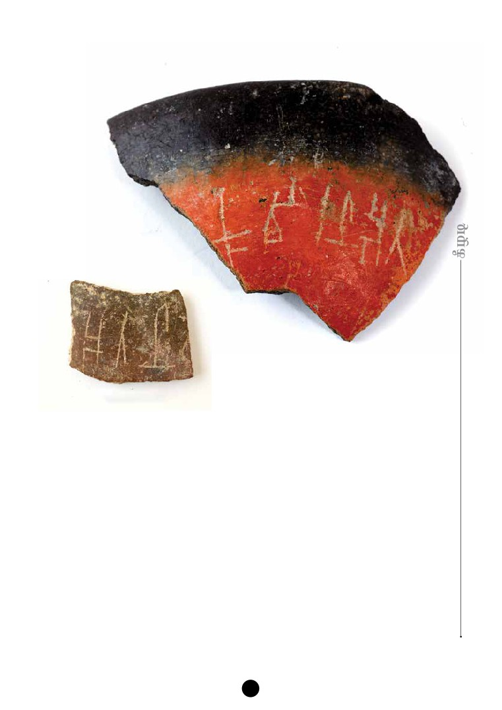
தமிழி(தமிழ்பிராமி)
குவிரன் ஆத[ன்]
ஆதன்
மிழ்நாட்டைப் பொறுத்தவரை குறியீடுகளுக்கு
இவற்றில் குவிரன் ஆத[ன்], ஆதன்
த
அடுத்து காணக்கிடைக்கின்ற வரிவடிவம்
போன்ற ஆட்பெயர்களும், முழுமைபெறாத
தமிழ்பிராமி எழுத்து வடிவமாகும். இவ்வெழுத்தை
சில எழுத்துகளுடன்கூடிய உடைந்த பானை
தமிழி என்றும் பண்டைத் தமிழ் எழுத்துகள்
ஓடுகளும் கிடைக்கப்பெற்றுள்ளன. இதில்
என்றும் ஆய்வாளர்கள் குறிப்பிடுகின்றனர்.
வரும் “ஆதன்” என்ற பெயர் “அதன்”
தமிழகத்தில் வரலாற்றுத் தொடக்ககாலத்தைச்
என்று குறிப்பிடப்பட்டுள்ளது. காலத்தால்
சார்ந்த இடங்களில் நடைபெற்ற அகழாய்வுகளில்
முந்திய தமிழியில் (தமிழ்பிராமியில்)
தமிழி (தமிழ்பிராமி) எழுத்துப் பொறிப்பு பானை
உயிர்குறில் வடிவத்திலிருந்து உயில்நெடிலை
ஓடுகள் கிடைக்கப்பெற்றுள்ளன. தமிழி எழுத்துகள்
வேறுபடுத்திக் காட்ட ஒலிக்குறியீடு இடும்
பொறிக்கப்பட்ட மோதிரங்கள் முந்தைய அகழாய்வுகளில்
வழக்கம் இல்லை என்பதை கா.இராஜன்
கண்டெடுக்கப்பட்டன. தமிழகத்தில் 32க்கும்
தமது Early Historic Writing Sytem: A Jour-
மேற்பட்ட ஊர்களில் சங்ககாலத்தைச் சார்ந்த தமிழ்
ney from Graffiti to Brahmi என்ற நூலில்
பிராமி எழுத்துப்பொறிக்கப்பட்ட 110 கல்வெட்டுகள்
தெளிவுபடுதியுள்ளார். இந்நிலை உயிர்
கண்டறியப்பட்டுள்ளன. இவை பத்மஸ்ரீ ஐராவதம்
எழுத்துக்களில் மட்டுமே காணப்படுகிறது.
மகாதேவன் அவர்களால் படித்தறியப்பட்டுநூலாக
எனவே, கீழடி தமிழி (தமிழ்பிராமி) எழுத்து
வெளியிடப்பட்டுள்ளன. கீழடி அகழாய்வில் தமிழி (தமிழ்
பொறிப்புகள் காலத்தால் முந்தியவை என்பதை
பிராமி) எழுத்துப்பொறிக்கப்பட்ட 56 பானை ஓடுகள்
நமக்கு உணர்த்துகின்றன.
தமிழ்நாடு அரசு, தொல்லியல் துறை மேற்கொண்ட
அகழாய்வில் மட்டும் சேகரிக்கப்பட்டுள்ளன.
8
8
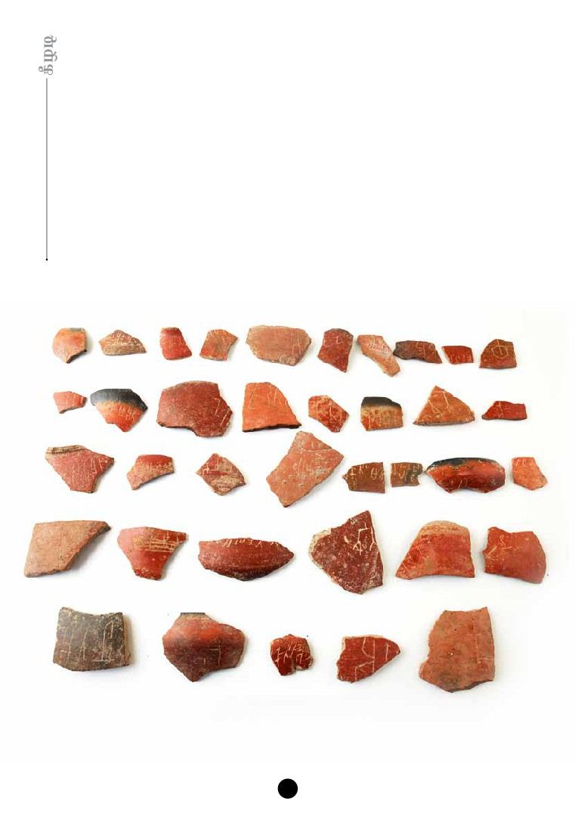
சங்க கால மக்களின்
எழுத்தறிவு
வ்வெழுத்துகள் பானையின் கழுத்துப்பகுதியின் கீழ் பொறிக்கப்பட்டுள்ளன. பொதுவாக
இ
எழுத்துப் பொறிப்புகளை பெரும்பாலும் பானை வனையும்போது ஈரநிலையில் எழுதுவது
அல்லது பானை உலர்ந்த பின்னர் கூர்மையான பொருளைக்கொண்டு எழுதுவதும் மரபாகும். பானை
வனையும்போது பானை செய்வோர் மட்டுமே எழுத வாய்ப்புள்ளது. கீழடியில் கிடைக்கப்பெற்றுள்ள
பெரும்பாலான தமிழி (தமிழ்பிராமி) எழுத்துப்பொறிப்புகள் பானை வனைந்து உலர்ந்த பின்னர்
பொறிக்கப்பட்டவையாக காணப்படுகின்றன. பானை ஓடுகளில் எழுதப்பட்ட எழுத்துகள் ஒரே
எழுத்தமைதியில் இல்லாமல் வெவ்வேறான எழுத்தமைதியில் உள்ளதால், இவற்றை பானையின்
உரிமையாளர்கள் பொறித்திருக்க வாய்ப்புள்ளது. அதனடிப்படையில், அக்காலமக்கள் கி.மு.6ஆம்
நூற்றாண்டளவிலேயே எழுத்தறிவு பெற்றவர்களாக விளங்கினர் என்பதை உறுதி செய்யலாம்.
9
கருப்பு சிவப்பு மற்றும் சிவப்பு நிறப் பானைகளில் காணப்படும் தமிழ் பிராமி எழுத்துகள்
9
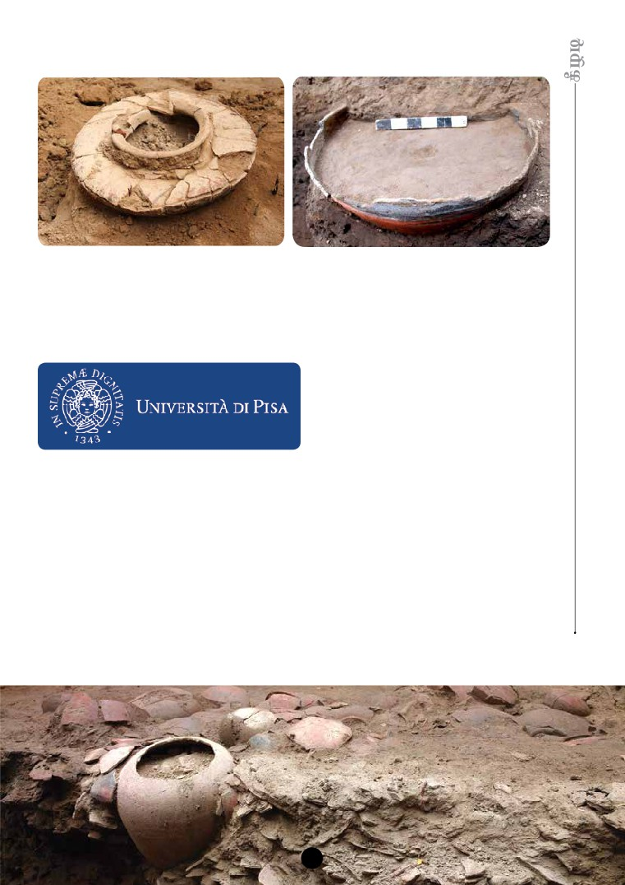
கைவினைத் தொழில்கள்
Compressed Storage Vessel
Black-and-Red Ware Large Bowl
அடுத்து, கீழடியில் கிடைத்த கருப்பு
கழாய்வில் கண்டெடுக்கப்பட்ட 17 பானை
அ
சிவப்பு நிறப் பானை ஓடுகள் (Black and
ஓடுகள் அவற்றிலுள்ள தனிமங்களைக்
Red ware) சிலவற்றின் மாதிரிகள் நிறமாலை
கண்டறியும் சோதனைக்காக இத்தாலியிலுள்ள பைசா
யியல் பகுப்பாய்வு (Spectroscopic Analysis)
பல்கலைக் கழகத்தின் புவிஅறிவியல் துறைக்கு
சோதனைக்கு உட்படுத்தப்பட்டன. அந்த
வேலூர் தொழில்நுட்ப பல்கலைக்கழகம் மூலமாக
ஆய்வு முடிவுகளின் மூலம், கருப்புசிவப்பு
அனுப்பிவைக்கப்பட்டன.
நிறப் பானை ஓடுகளின் சிவப்பு நிறத்திற்கு
இரும்பின் தாதுப் பொருளான
ஹேமடைட்
என்பதையும், கருப்பு நிறத்திற்கு கரிமப்
பொருளான கரியையும் பயன்படுத்தியுள்ளது
தெரிய வருகிறது. இக்கருப்புசிவப்பு நிறப்
பானைகளை 1100° செ வெப்பநிலையில்
சுட்டு உருவாக்கும் தனித்தன்மை வாய்ந்த
பானை ஓடுகளில் காணப்பட்ட கனிமங்கள்,
தொழில்நுட்பத்தைப் பயன்படுத்தியுள்ளனர்.
பாறைத் துகள்களின் தன்மை, மேலும் அவற்றின்
கீழடியில் கிடைத்த மட்பாண்டங்களின்
பயன்பாடு குறித்து ஆய்வு முடிவுகள் பெறப்பட்டுள்ளன.
தொழில்நுட்பம், தனிமங்களின் கலவை,
கீழடியில் கிடைக்கப்பெற்ற, தண்ணீர் சேகரிக்கவும்,
களிமண்ணின் தன்மை ஆகியவை கி.மு. 6ஆம்
சமையலுக்காகவும் பயன்படுத்தப்பட்ட பானைகள்
நூற்றாண்டிலிருந்து கி.மு.2ஆம் நூற்றாண்டு
தனித்த பானை வனைவு தொழில்நுட்பத்தைப்
வரை ஒரே மாதிரியாக இருந்துள்ளன என
பயன்படுத்தி உள்ளூரிலேயே வனையப்பட்டவை
இத்தாலியின் பைசா பல்கலைக் கழக
என்பது உள்ளூர் மண் மாதிரியை ஒப்பீட்டாய்வு
அறிக்கையில் தெரிய வருகிறது.சில பானை
செய்து உறுதிப்படுத்தப்பட்டுள்ளது.
ஓடுகளின் மாதிரிகள் தமிழகத்தின் பிறபகுதியில்
உள்ள மண்தன்மையை ஒத்திருப்பதாகவும்,
கீழடி அகழாய்வில் இரண்டு இடங்களில் 4 மீட்டர்
அது கி.மு. 2ஆம் நூற்றாண்டிற்குரியது
அளவுக்கு மேல் மிகப்பெரிய அளவில் பானை
என்றும் ஆய்வறிக்கை விளக்குகிறது. எனவே,
ஓடுகளின் குவியல்கள் கண்டறியப்பட்டதைக்
இதன்மூலம் வணிகர்கள், தொழில் சார்ந்தோர்,
கருத்தில் கொண்டு கீழடியில் பானை வனையும்
பயணியர் ஆகியோரிடையே நிலவிய வணிக
தொழிற்கூடம் செயல்பட்டிருக்க வேண்டும் என்ற
பரிமாற்றங்கள் உறுதியாகின்றன.
முடிவுக்கு வரலாம்.
பானை ஓடுகளின் குவியல்
10
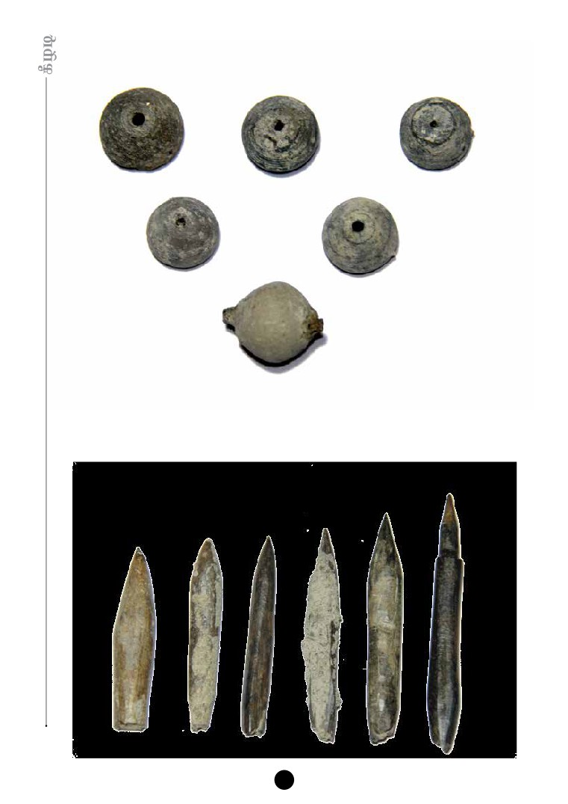
நெசவு
தக்களி
வ்வகழாய்வுகளில் நூல்களை நூற்க பயன்படும் தக்களி (10), துணிகளில் உருவ
இ
வடிவமைப்புகளை வரைவதற்கு உபயோகப்படுத்தப்படும் எலும்பிலான கூரிய முனைகள்கொண்ட
தூரிகை (20), தறியில் தொங்கவிடும் கருங்கல் மற்றும் சுடுமண்ணால் செய்யப்பட்ட குண்டு,
செம்பினாலான ஊசி, சுடுமண்பாத்திரம் போன்ற தொல்பொருட்கள் கண்டெடுக்கப்பட்டுள்ளன.
இந்தியத் தொல்லியல் துறை ஏற்கனவே மேற்கொண்ட அகழாய்வுகளில் வெளிப்படுத்தப்பட்ட
கட்டுமானங்கள் சாயத்தொழிற்சாலை இருந்ததற்கான சான்றுகள் என்று கூறியுள்ளது.
தற்போதைய அகழாய்வுகளிலும் கிடைத்துள்ள நெசவு தொடர்பான தொல்பொருட்கள், இப்பகுதியில்
நெசவுத் தொழில் சிறந்து விளங்கியதற்குச் சான்று பகர்கின்றன.
எலும்பினால் ஆன வரைகோல்
11
11
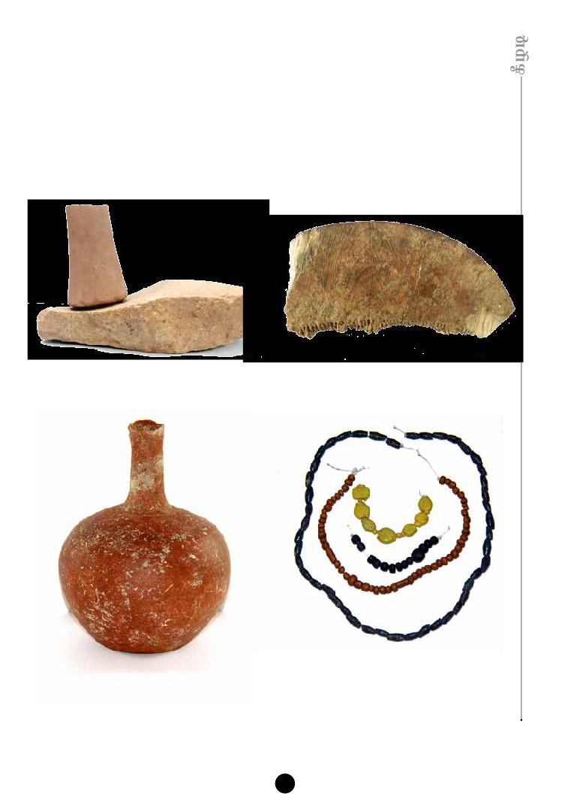
வாழ்க்கை முறை
மிழகத்தில் சங்க காலத்தை மீள் உருவாக்கம் செய்வதற்கு
முதன்மைச் சான்றுகளான
த
கல்வெட்டு, நாணயம், வெளிநாட்டவர் குறிப்புகள், இலக்கியம் மற்றும் தொல்பொருட்கள்
ஆகியவற்றினை முன்னிறுத்தி ஆய்வு மேற்கொள்ளும் போதுதான் அச்சமூகத்தின் முழுமையான
வாழ்க்கை முறையை அறிந்து கொள்ள இயலும்.
அரவைக் கல்
குடுவை
கீழடி அகழாய்வில் கிடைக்கப்பெற்றுள்ள தொல்பொருட்கள், அக்கால சமுதாயத்தினை பிரதிபலிக்கும்
வகையில் உள்ளன. அச்சமூகம் வேளாண்மை, கால்நடை வளர்ப்பு ஆகியவற்றினை முதன்மைத்
தொழில்களாக மேற்கொண்டிருந்தது. வேளாண்மைக்குத் துணை புரிகின்ற தொழிலாக இரும்பு
பொருட்கள் தயாரித்தல், தச்சு வேலை ஆகியவையும் இருந்துள்ளன. மேலும், அன்றாட
தேவைகளுக்குப் பயன்படும் பானை வனைதல், நாகரிக வாழ்க்கைக்கு தேவையான ஆடை
நெய்யும் நெசவு தொழில் ஆகியவை
முக்கிய இடம் பெற்றிருந்தன.
12
12
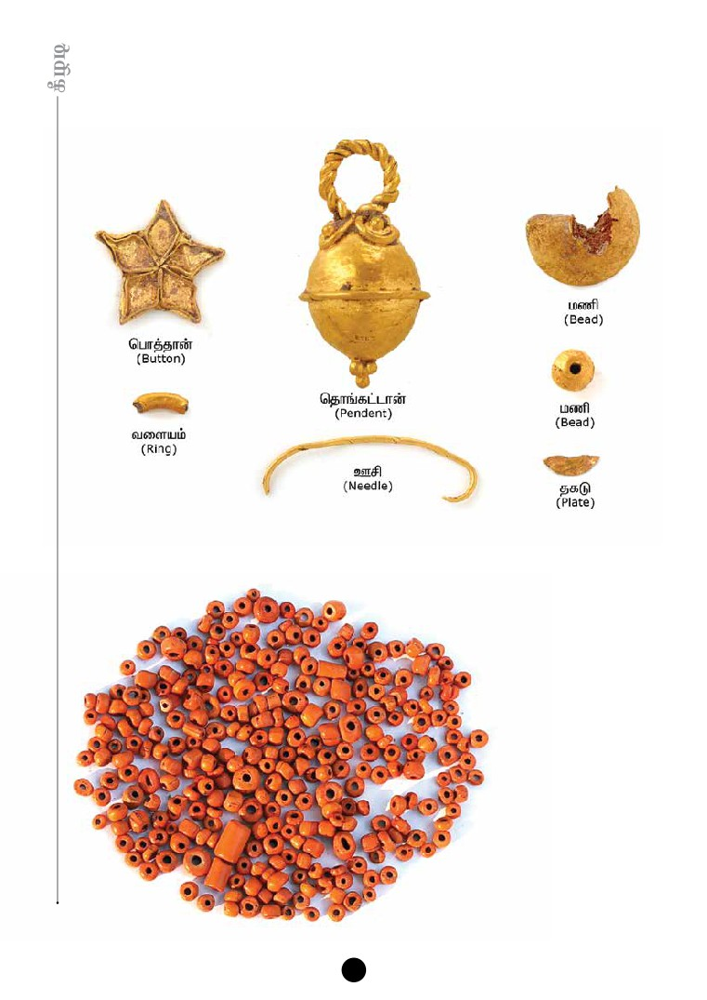
மதிப்புறு அணிகலன்களும்,
ஏனைய அணிகலன்களும்
தங்கத்தினால் ஆன தொல்பொருட்கள்
ழடியில் பெண்கள்
கீ
தங்களை அலங்கரித்துக்
கொள்ளும் தங்கத்திலான
ஏழு ஆபரணத் துண்டுகள்,
செம்பு அணிகலன்கள்,
மதிப்புமிக்க மணிகள்,
4000க்கும்
மேற்பட்ட
கல்மணிகள், கண்ணாடி
மணிகள், சுடு மண்ணாலான
மணிகள், சங்கு வளையல்கள்,
தந்த வளையல்கள்,
பளிங்கு கற்களிலான
மணிகள் ஆகிய பொருட்கள்
கண்டெடுக்கப்பட்டுள்ளன.
உள்நாட்டிலேயே தயாரிக்கப்பட்ட,
இத்தகைய மதிப்புறு
அணிகலன்களும், ஏனைய
அணிகலன்களும் சங்க
காலச் சமூகம் வளமையுடன்
இருந்ததற்கான சான்றுகளாகும்.
கண்ணாடி மணிகள்
13
13
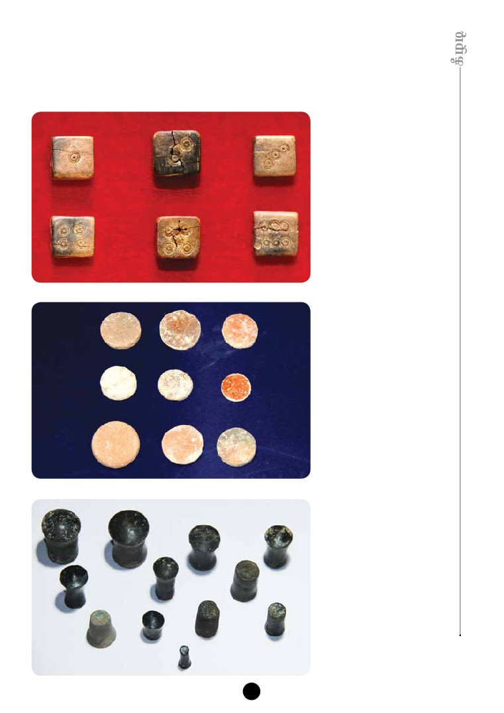
விளையாட்டு மற்றும்
பொழுது போக்குகள்
மிழ்நாட்டு அகழாய்வுகளில்
த
கண்டெடுக்கப்பட்டுள்ள
விளையாட்டுப் பொருட்கள்
மற்றும் ஆட்டக்காய்கள்
அன்றைய சமுதாயத்தின்
வாழ்க்கை முறையையும்,
பொழுதுபோக்கு அம்சங்களையும்
பிரதிபலிக்கின்றன. அகழாய்வில்
கிடைக்கப்பெற்ற விளையாட்டுப்
பொருட்களில் பெரும்பாலானவை
பகடைக்காய்
சுடுமண்ணால் ஆனவை.
கீழடி அகழாய்வில் பெண்கள்
விளையாடும் விளையாட்டுப்
பொருளான வட்டச்சில்லுகள்
600 எண்ணிக்கையிலும்
(தற்போதும் இப்பகுதியில்
இவ்விளையாட்டு ‘பாண்டி’
என்ற பெயரில் விளையாடப்பட்டு
வருவது குறிப்பிடத்தக்கது),
தாய விளையாட்டுக்கான
பகடைக்காய்களும் கிடைத்துள்ளன.
சிறுவர்கள் கயிறு கட்டி
விளையாடும் சுடுமண்ணாலான
வட்டச்சுற்றிகள், வண்டிஇழுத்து
விளையாடும் வண்டிகளின்
சக்கரங்கள் கிடைத்துள்ளன.
வட்டடச்சில்லுகள்
மேலும், பெரியவர்கள் தங்கள்
திறமையை வெளிப்படுத்தும்
வகையில் விளையாடும்
சதுரங்க விளையாட்டிற்கு
பயன்படும் பல்வேறு அளவிலான
80 சதுரங்கக் காய்கள்
கிடைத்துள்ளன.
கீழடியில் அதிக அளவில்
கிடைத்துள்ள இந்தத்தொல்பொருட்கள்
சங்க காலத்தில் ஆண், பெண்,
சிறுவர்கள் விளையாட்டினை
கண் முன்னே படம்பிடித்துக்
காட்டுகின்றன.
14
14
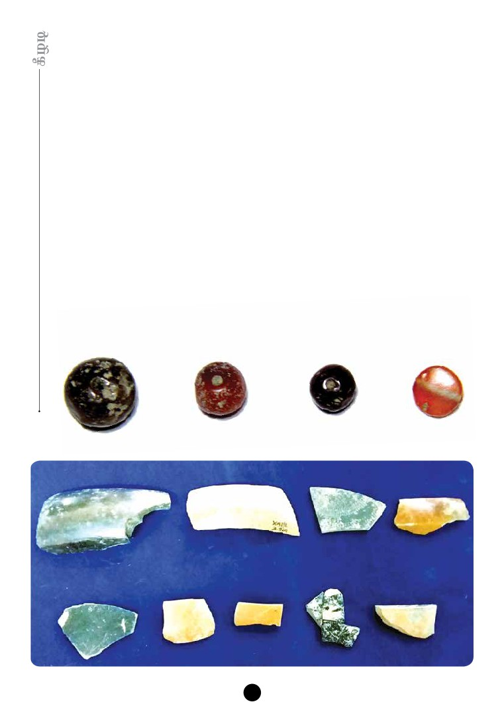
வணிகம்
மிழகத்தில் கடல்வழி வணிகம் சிறப்புற்று
மற்றும் வாசனைப் பொருட்கள் ஏற்றுமதி செய்யப்பட்டன.
த
விளங்கியமைக்கு நீண்ட கடற்கரையைக்
அதேபோன்று மேலை நாட்டிலிருந்து தங்கம், பானங்கள்,
கொண்டிருந்ததே காரணமாகும். மரக்கலங்கள்
நறுமணத் திரவியங்கள், குதிரை போன்றவை இறக்குமதி
வந்து செல்லவும், நங்கூரமிட்டு நிற்பதற்கான
செய்யப்பட்டன.
வசதியைப் பெற்றிருந்ததும் மற்ற காரணிகளாகும்.
கீழடி அகழாய்வுப் பகுதிகளில் வடமேற்கு இந்தியாவின்
சங்க காலத்தில் கிழக்கு கடற்கரையில் ஒவ்வொரு
மகாராஷ்டிரம்,
குஜராத் போன்ற பகுதிகளில் பரவலாக
ஆறும் கடலில் கலக்கும் இடங்களில் மிகப் பெரிய
காணப்படும் அகேட் மற்றும் சூது பவளம் (கார்னீலியம்)
துறைமுகங்களும் ஏனைய பகுதிகளில் சிறிய
போன்ற மணிகள் கண்டெடுக்கப்பட்டுள்ளன.
துறைமுகமும் சிறப்புற்றிருந்தன. பாலாறு கடலில்
கலக்கும் இடமான வசவ சமுத்திரம், காவேரி
பொதுவாக ரௌலட்டட் பானை ஓடுகள் ரோம
கடலில் கலக்கும் இடமான பூம்புகார்,
வைகை
நாட்டு பானைகள் எனக் கருதப்பட்டுவந்தன.. ஆனால்,
கடலில் கலக்கும் அழகன்குளம், தாமிரபரணி
அண்மைக்கால ஆய்வுகள் இவை உரோம நாட்டு
கடலில் கலக்கும் கொற்கை போன்றவை சிறந்த
தொழில்நுட்பச் சாயல் கொண்டு உள்ளூரில் வனையப்பட்ட
துறைமுகங்களாக விளங்கின. அதேபோல்,
மட்கலன்கள் ஆகும். இவ்வகை ரௌலட்டட் பானை
மேற்கு கடற்கரையில்
பெரியாறு கடலில்
ஓடுகள் அழகன்குளம் அகழாய்வுகளில் குறிப்பிடத்தக்க
கலக்கும் இடமான முசிறிப்பட்டினமும் சிறந்து
அளவில் கண்டெடுக்கப்பட்டுள்ளன. உரோம நாட்டு
விளங்கியது. தமிழகம் கீழை மற்றும்
அரிட்டைன் பானை ஓடு மண்ணடுக்கின் மேல் நிலையில்
மேலை நாடுகளுடன் வாணிப தொடர்பு
கிடைக்கப் பெற்றுள்ளது. இப்பானைகள் கி.மு. 2
கொண்டிருந்தது.
குறிப்பாக
தென்கிழக்கு
ஆம் நூற்றாண்டில் உரோம் நாட்டில் புழக்கத்திலிருந்த
ஆசிய நாடுகள், இலங்கை, வளைகுடா நாடுகள்,
பானைகளாகும். எனவே, உரோம் நாட்டைச் சார்ந்த
எகிப்து, உரோம் ஆகிய நாடுகளுடன் சிறப்பாக
வணிகர்கள் அல்லது அழகன்குளத்தில் தங்கியிருந்த
வணிகம் நடைபெற்றது. தமிழகத்திலிருந்து
உரோம் நாட்டைச் சார்ந்த வணிகர் இப்பகுதிக்கு
முத்து, மணி கற்கள், துணி வகைகள், மிளகு
வந்திருக்கலாம்.
Agate amd Carnelian Beads
15
Rouletted ware (Indigenous)
15
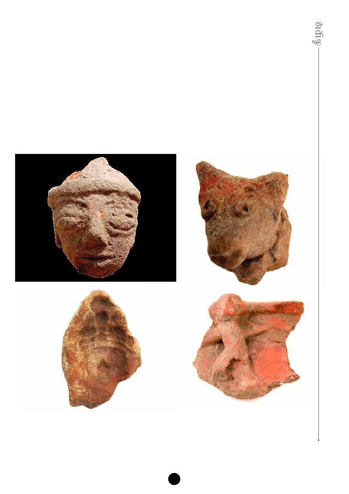
சுடுமண் உருவங்கள்
னித குலத்தின் மிகத்தொன்மையான கலை
உருவாக்கினான். களிமண் அல்லது வண்டல்
ம
வடிவம் சுடுமண் உருவங்களாகும். இக்கலையானது
மண் மற்றும் தண்ணீர் சேர்த்து அழகிய சுடுமண்
கல், மரம், தந்தம், உலோகம், போன்றவற்றில் கலை
உருவங்களை படைக்க முற்பட்டான். இவற்றினை
வடிவங்கள் வடிப்பதற்கு முன்னர் தோன்றியது. இச்சுடுமண்
தகுந்த வெப்பத்தில் சூளையில் வைத்து சுடும்
உருவங்கள் செய்வதற்கு மிகப்பெரிய தொழில்நுட்பமோ
தொழில்நுட்பத்தை அறிந்திருந்தான். தமிழகத்தில்
சிறப்பான கருவிகளோ தேவையில்லை. மனிதனின்
மேற்கொள்ளப்பட்ட அகழாய்வுகளில் குறிப்பிடத்தக்க
கைவிரல்களே கருவியாகும். பழங்கற்கால மனிதன்
வகையில் பல்வேறு காலகட்டத்தைச் சார்ந்த
தன் உணவு வேட்டைக்குப் பயன்படுத்திய கருவிகளைக்
சுடுமண்ணாலான உருவங்கள் கிடைத்துள்ளன.
கல்லில் செதுக்கினான். அதனைத்தொடர்ந்து பல்வேறு
இவற்றில் மனித உருவங்கள், விலங்கு உருவங்கள்,
வளர்ச்சி நிலைகளில் தனது எண்ணங்களை ஓவியங்களாக
விளையாட்டுப் பொருட்கள் போன்றவை முக்கிய
வரைந்தான். பின்னர், மண்ணைக் கொண்டு உருவங்களாக இடம் வகிக்கின்றன.
சுடுமண் உருவங்கள்
கீழடி அகழாய்வுகளில் கிடைக்கப்பெற்றுள்ள சுடுமண்ணாலான 13 மனித உருவங்கள், 3 விலங்கு
உருவங்கள், 650க்கும் மேற்பட்ட விளையாட்டுப் பொருட்கள், 35 காதணிகள், அணிகலன்கள்
மற்றும் தங்கம், செம்பு, இரும்பு போன்ற உலோக தொல்பொருட்கள் கிடைத்துள்ளபோதிலும் வழிபாடு
தொடர்பான தொல்பொருட்கள் எவையும் தெளிவான முறையில் இதுவரை கிடைக்கப்பெறவில்லை
என்பது குறிப்பிடத்தக்கது.
16
16
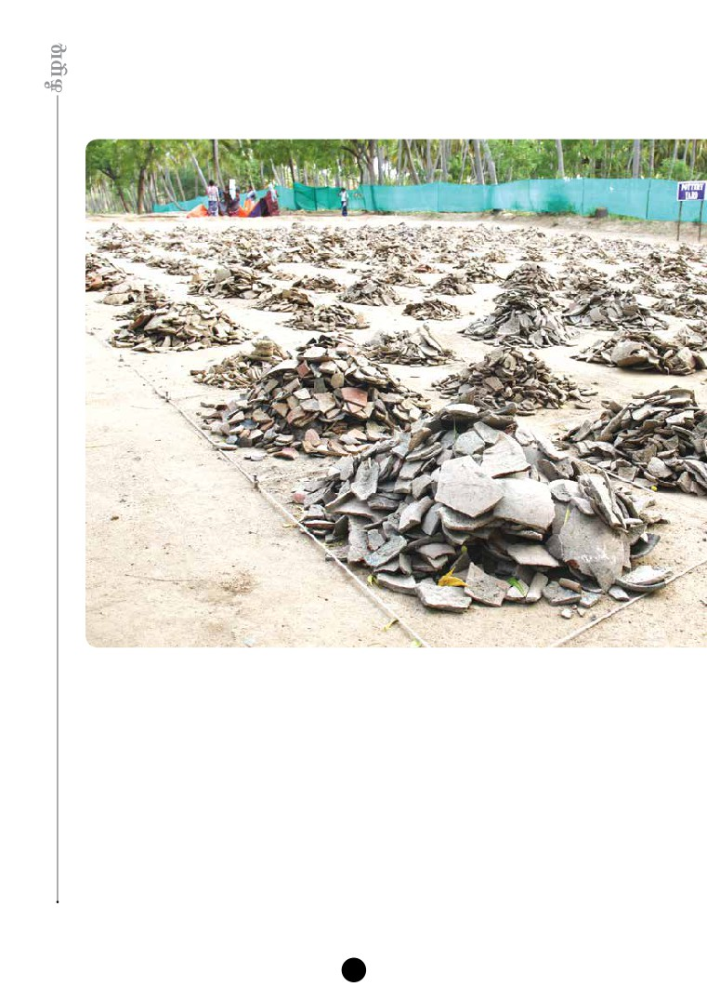
தொகுப்புரை
கீழடி அகழாய்வு பானை ஓடு குவியல்கள்
ழடி அகழாய்வில் வெளிக்கொணரப்பட்ட
பொருந்தல் ஆகிய இடங்களில் கிடைத்த தமிழ்
கீ
தொல்பொருட்கள் இதுவரை தமிழக
பிராமி எழுத்துப் பொறிப்பு பெற்ற மட்பாண்டங்களின்
வரலாற்றில் கடைபிடிக்கப்பட்டு வந்த
காலம் கி,மு.5 ஆம் நூற்றாண்டுவரை பின்நோக்கி
கருதுகோள்களைச் சீர்தூக்கி பார்க்க
தள்ளப்பட்டன. ஆனால், கீழடியில் கிடைத்த அறிவியல்
வேண்டிய அல்லது மறுபரிசீலனை செய்ய
சார்ந்த கால கணிப்புகள் இதன் காலத்தை மேலும்
வேண்டிய சூழலை ஏற்படுத்தி உள்ளன
ஒரு நூற்றாண்டு பின் நோக்கி தள்ளி கி.மு.
என்றால் மிகையாகாது.
ஆறாம் நூற்றாண்டில் நிலை நிறுத்தியுள்ளதே கீழடி
ஆய்வுகளின் சிறப்பு அம்சமாகும்.
பொதுவாக ‘சங்க காலம்’ என்பது கி.மு.
மூன்றாம் நூற்றாண்டு முதல் கி.பி. மூன்றாம்
கி.மு. ஆறாம் நூற்றாண்டளவிலேயே தமிழகம்
நூற்றாண்டு என்று கருதப்பட்டுவந்தது.
எழுத்தறிவு பெற்ற சமூகமாக விளங்கியிருப்பதால்
ஆனால், கீழடியில் கிடைத்த காலக்கணிப்புகள்
கி.மு. ஆறாம் நூற்றாண்டளவிலேயே வரலாற்றுத்
தமிழகத்தின் எழுத்தறிவை கி.மு. ஆறாம்
தொடக்கக் காலம் (Historical Phase) தொடங்கிவிடுவதால்
நூற்றாண்டுக்கு எடுத்து செல்வதால்
வரலாற்றுக்காலத்துக்கு முந்திய இரும்புக்காலம்
சங்ககாலத்தின் காலவரையறையை மீளாய்வுக்கு
கி.மு.2000த்தில் தொடங்கிவிடுகிறது எனலாம்.
உட்படுத்த வேண்டியுள்ளது. கொடுமணல்,
சேலம் பகுதியில் மாங்காடு மற்றும் தெலுங்கனூர்
17
17
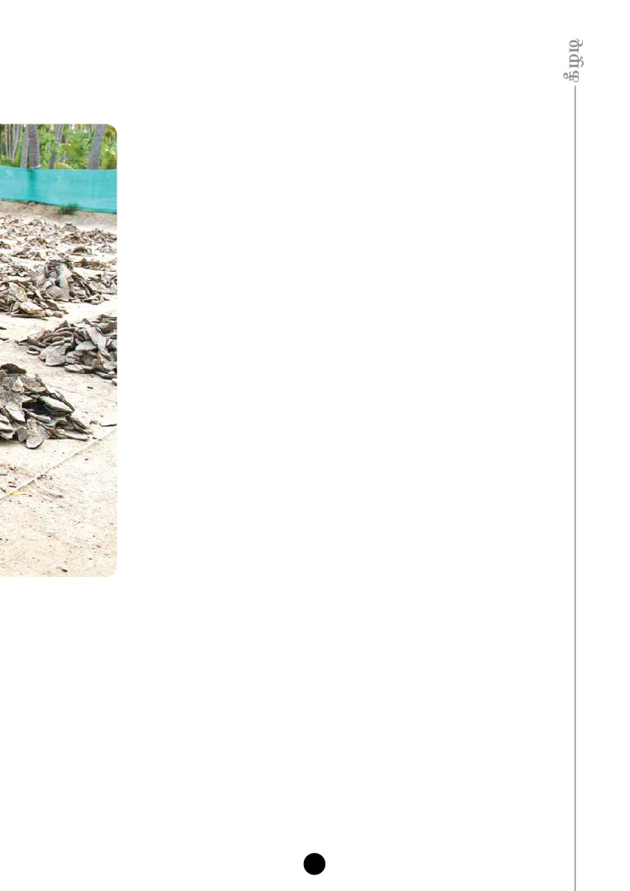
பகுதியில் பெருங்கற்படைச் சின்னத்தில்
அமைக்கப்பட்டுள்ளது.
கிடைத்த தொல்லியில் சான்றுகள் அறிவியல்
சங்ககாலப் புலவர்கள் தமிழகத்தின்
காலக்கணிப்புக்கு உட்படுத்தப்பட்டு இரும்பின்
பல்வேறு பகுதிகளில் வாழ்ந்திருந்தனர்
காலம் கி.மு.2000த்திற்கு எடுத்து செல்லபட்டதை
என்பதை சங்க இலக்கியங்களில் புலவர்களின்
இங்கு நினைவில் கொள்ள வேண்டும்.
பெயர்களுக்கு முன்னால் முன்னொட்டாக
இந்தியாவில் கங்கை சமவெளி
ஊர்களின் பெயர்கள் குறிப்பிடப்பட்டுள்ளன.
பகுதியில் கி.மு.ஆறாம் நூற்றாண்டளவில்
சாதாரண மக்கள் தங்களுக்குரிய பானைகளில்
தோன்றிய இரண்டாம் நகரமயமாக்கம்
தங்களின் பெயர்களைத் தாங்களே தமிழ்பிராமி
தமிழகத்தில் காணப்படவில்லை
எழுத்துகளில் பொறித்துக் கொண்டுள்ளனர்.
என்ற கருதுகோள் இதுவரை
எனவே, புலவர்கள் மட்டுமின்றி சாதாரண
அறிஞர்களிடையே நிலவிவந்தது.
மக்களும் கல்வி அறிவு பெற்றிருந்தனர்
ஆனால் கீழடி அகழாய்வு கி.மு.ஆறாம்
என்பதை அறிய முடிகிறது.
நூற்றாண்டளவில் தமிழகத்தில்
கீழடியில் கண்டெடுக்கப்பட்ட தொல்
நகரமயமாக்கம் உருவாகிவிட்டதை
பொருள்களின் கரிமப் பகுப்பாய்வின்
நமக்கு உணர்த்துகிறது.
கீழடிப் பண்பாட்டின் காலம் கி.மு. 6ஆம்
பழைய கற்காலத்தில் வேட்டையாடி
நூற்றாண்டு என்பதைக் காட்டுகிறது.
உணவு சேகரித்த மனிதர்கள், புதிய
சங்ககாலத்தில் இப்பகுதியில் வாழ்ந்திருந்த
கற்காலத்தில் ஆற்றங்கரையோரங்களில்
மக்கள் தங்கம், செம்பு, தந்தம், பளிங்கு கல்,
குழுக்களாக குடியேறி வேளாண்மை
கண்ணாடி, சூதுபவளம் போன்றவற்றால்
செய்யத் தொடங்கினர். சங்க
செய்யப்பட்ட அணிகலன்களை அணிந்துள்ளனர்.
காலத்தில் தங்கள் மரபுசார்
இவை இவர்களின் பொருளாதார
வேளாண்மை மற்றும் கால்நடை
வளத்தினைக் காட்டுகின்றன. இச்சமூகம்
வளர்ப்புத் தொழிலினை மேற்கொண்டு
பொருளாதாரத்தில் தன்னிறைவு அடைந்த
உணவு உற்பத்தியை பெருக்கி,
நிலையில் தங்களது ஓய்வு நேரங்களில் உடற்ப
உபரியைச் சேமிக்கத் தொடங்கினர்.
யிற்சி மற்றும் அறிவுத்திறனைப் பெருக்கும்
தமிழகத்தின் ஆற்றங்கரையோரங்களில்
விளையாட்டுகளை விளையாடி பயனுள்ள
நாகரிகத்தினை விரிவுப்படுத்தினர்.
வகையில் பொழுதுகளைக் கழித்துள்ளனர்.
வைகைக்கரையில் அமைந்துள்ள
கீழடியில் சங்ககாலத்தில் வாழ்ந்த
சங்ககாலத்தில் இவ்வூர் மக்கள் வெளியூர்,
மக்கள் வேளாண்மையையும், கால்நடை
வடஇந்தியா மற்றும் உரோம் நாட்டுடன்
வளர்ப்புத் தொழிலையும் முக்கியத்
வாணிபத் தொடர்புகள் கொண்டிருந்தனர்
தொழிலாகக் கொண்டிருந்தனர்.
என்பதற்கு அப்பகுதியிலிருந்தே கொண்டு
வேளாண்மைக்கு உதவக்கூடிய
வரப்பட்ட பானைகள், மணிகள் போன்ற
துணைத் தொழில்களின் தொழிற்கூடங்களை
தொல்பொருட்கள் சான்று பகர்கின்றன.
அமைத்துள்ளனர். கீழடியில் வெளிப்படுத்தப்பட்டுள்ள
மேற்படி ஆய்வுகளின்படி,
வைகைக்கரையில்
செங்கல் கட்டுமானங்களில் செங்கல் இணைப்பிற்கு
வாழ்ந்த சங்ககால மக்கள் வேளாண்மை
97 சதவீதம் கொண்ட சுண்ணாம்புச் சாந்தினை
மூலம் பொருளாதாரத்தை பெருக்கி
பயன்படுத்தியுள்ளது, இச்சுவரானது வலிமையாக
தன்னிறைவுடன் தங்களது வாழ்க்கைத்
நீடித்திருப்பதற்கு சான்றாகத் திகழ்கிறது.
தரத்தினை உயர்த்திக் கொண்டனர்.
இக்கட்டுமான அமைப்பானது சங்க காலத்தில்
இம்மக்கள் செங்கல் கட்டுமானத்தில் வீடுகள்,
இருந்த வளர்ச்சியடைந்த சமூகத்தின்
தொழிற்கூடங்கள் அமைத்துள்ளதும், பிற
அடையாளமாகப் பார்க்கப்படுகிறது. மேலும்,
நாட்டினருடன் வாணிபம் மேற்கொண்டுள்ளதும்
அன்றாட தேவைகளுக்கானப் பானைகளைத்
நகரநாகரிகத்தோடு வாழ்ந்திருந்தனர்
தயாரிக்கும் தொழிற்கூடம், நாகரிக வாழ்க்கையை
என்று கூறுவதற்கு பொருத்தமானதாகும்.
வெளிப்படுத்தக் கூடிய ஆடைகளைத்
இச்சான்றுகள் தமிழகத்தில் நிலவிய சங்ககாலப்
தயாரிக்கும் நெசவுக்கூடம்
போன்றவற்றை
பண்பாட்டு வரலாற்றாய்வில் திருப்புமுனை
ஏற்படுத்தியுள்ளனர்.
தொழிற்கூடப் பகுதிக்கு
ஏற்படுத்தியுள்ளன எனலாம்.
அருகே குடிநீர் பயன்பாட்டிற்கு உறைகிணறு
18
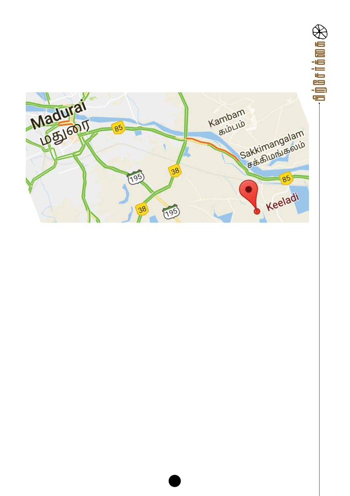
அறிமுகம்
அமைவிடம்
ழடி நிலவியலமைப்பில் 9°51´ 18.385´´
HK¾
20142015,
20152016
W
வடககு அட்சரேகையிலும் 78°11´45.132´´
மற்றும் 2016-2017 ஆகிய ஆண்டுகளில்
கீழக்கு தீர்க்க ரேகையிலும் அமைந்துள்ளது.
அகழாய்வுப் பணிகளை மேற்கொண்டனர்.
இவ்வூரில் உள்ள தென்னந்தோப்பிற்குள் 100
இதன்தொடர்ச்சியாக, இப்பகுதியில்
ஏக்கருக்கு மேற்பட்ட விரிந்த பரப்பில் பண்டைய
மறைந்திருந்த அரும்பொருட்கள் மற்றும்
குடியிருப்பு புதையுண்ட மேட்டுப்பகுதி ஒன்று
தொல்பொருட்களை வெளிக்கொணரும்
காணப்படுகிறது.
நோக்கத்தில் தமிழ்நாடு அரசு தொல்லியல்
துறையானது மத்திய ஆலோசனைக்
தமிழகத்தில் கோயில் நகரம் என்றழைக்கப்படும்
குழுவிடம் அனுமதி பெற்று அகழாய்வுப்
மதுரையிலிருந்து கிழக்கு தென்கிழக்காக
பணிகளை 2017-2018 -ஆம் ஆண்டு
13 கி.மீ. தொலைவில் உள்ளது. இவ்வூரின்
அகழாய்வுப் பணி மேற்கொள்ளப்பட்டது.
வடதிசையில் 2 கி.மீ தொலைவில் வைகை
அதனடிப்படையில், அகழாய்வுப்
நதி அமையப்பெற்றுள்ளது. இவ்வூரின் கிழக்கே
பணியானது அகழாய்வு இயக்குநர்,
மணலூர் என்கிற ஊரும் அவ்வூரின் கண்மாய்
தொல்லியல் அலுவலர்கள், காப்பாட்சியர்கள்,
வடகிழக்கெல்லையாகவும், தென்கிழக்கெல்லையாக
கல்வெட்டாய்வாளர்கள், தொழில்நுட்ப
அகரம் என்கிற ஊரும், மேற்கே கொந்தகை
அலுவலர், இரசாயனர், வரைபடவரைவாளர்
எனும் அவ்வூரின் கண்மாயும் மேற்குப்புற
மற்றும் இதர அலவலர்களைக்கொண்ட
எல்லையாக அமைந்துள்ளன. இந்த
குழுவினரால் தமிழக அரசு தொல்லியல்
பண்பாட்டு மேட்டினைச் சுற்றி இயற்கையாக
துறையின் முதற்கட்ட அகழாய்வினை
அமையப்பெற்றுள்ள ஊர்களும், நீர் வளம்
தொடங்க நிலவரையறை செய்து பணி
பெறும் கண்மாய்களும் எழில்மிகு எல்லைகளாக
தொடங்கப்பட்டது.
அமையப்பெற்றுள்ளமை பண்டைய ஊர் ஒன்று
இருந்ததற்கான அடையாளங்காக கருதலாம்.
20172018ஆம் ஆண்டு முதல்
பருவத்தில் அகழாய்வுப் பணியினை
இதற்கு முன்னர், இப்பகுதியில் இந்திய
செய்திட 11 அகழாய்வுப் பகுதிகளை
தொல்லியல் துறையின் பெங்களூரூ அகழாய்வுப்
20
(குழிகள்) நிலஅளவு வரையறை செய்யப்பெற்று,
கீழ் ஒன்றாக அமையப்பெற்று பல கால
இவற்றில் 7 அகழாய்வுக் குழிகள் (Trenches)
நிலைகளையுடைய பண்பாட்டுக் கூறுகளை
ஓரிடத்திலும் மற்ற 4 அகழாய்வுக் குழிகள் வேறொரு
எடுத்துரைக்கின்ற வண்ணம் உள்ளன.
இடத்திலும் அமைக்கப்பட்டன. அகழாய்வினை
அகழாய்வில் கண்டெடுக்கப்பட்டுள்ள பண்பாட்டுக்
ஆழமாகவும் பக்கவாட்டிலும் குறுக்காகவும் அகழ்ந்து
கூறுகளை நேர்த்தியான முறையில் விளக்கும்
எடுக்கப்படும் கட்டடப்பகுதியின் நீட்சியினை
வகையில், ஒவ்வொரு அகழாய்வுக் குழிகளிலும்
அறியும் வண்ணம் ஒவ்வொரு அகழாய்வுப்
வெளிப்பட்ட மற்றும் வெளிக்கொணரப்பட்ட
பகுதியும் நான்கு பாகங்களாக பிரிக்கப்பட்டன.
தொல்பொருட்களை காலக் கணிப்போடு
ஒவ்வொரு அகழாய்வுப் பகுதிகளுக்கிடையே
பின்வருமாறு விளக்கப்படுகிறது.
(மேல், கீழ் மற்றும் பக்கவாட்டம்) ஒரு மீட்டர்
அகழாய்வுப் பகுதி(குழி) எண் (Trench No.A1 )
அகலம் கொண்ட பாதை அமைக்கப்பட்டன.
அதேபோன்று, ஒவ்வாரு அகழாய்வுப் பகுதியின்
வடகிழக்கு இரண்டாவது கால் பகுதி
நடுவில் குறுக்க நெடுக்காக 50 செ.மீ அகலம்
(கி1 ழிஷீக்ஷீtலீ ணிணீst னிuணீபீக்ஷீணீஸீt -2)
கொண்ட நடைபாதை விடப்பட்டு நான்கு
இந்த அகழாய்வுப் பகுதியில் மேலிருந்து கீழாக
பாகங்களாகப் பிரிக்கப்பட்டன.
மேலே மக்கிய தற்கால மண்ணடுக்கிற்கும் இயற்கை
முதலாவது இடஅமைவில் அமைக்கப்பட்ட
மண்ணியில் (Nature Soil) இடையே நான்கு
அகழாய்வுப் பகுதிகள்(குழி) Xஅச்சில் A1, A2,
மண்ணடுக்குகள் தெளிவாக அமையப்பெற்றுள்ளது.
A3, A4, A5, A6, A7 என்று எண்ணிடப்பட்டன.
இந்த நான்கு மண்ணடுக்குகள் மேலிருந்து கீழாக
அதேபோன்று இரண்டாவது இடஅமைவில் Y-
நான்கு புறமும் ஒரே சீராக எவ்வித இடற்பாடன்றி
அச்சின் கிழக்கே YP10, YP9, YP8, YP7 என்று
எளிதில் வேறுபடுத்தி கண்டறியும் வகையில்
எண்ணிடப்பட்டன. X-அச்சின் தென்மேற்குப்
மண்ணின் நிறம், மண்ணின் தன்மை, மண்ணின்
பகுதியின் இறுதியில் உள்ள அகழாய்வுப்
அமைப்பு ஆகியவை ஆற்று மண் படிவத்திற்கு
பகுதிக்கு XA7 என்று எண் அளிக்கப்பட்டது.
மேல் காணப்படுகின்றன. மேல் அடுக்கானது
அகழாய்வுப் பணியினை அகழாய்வு இயக்குநர்
மக்கிய தழை, வேர், நார் ஆகியவைகளுடன் மண்
முனைவர் இரா.சிவானந்தம், அகழாய்வாளர்கள்,
மற்றும் களிமண் உள்ளடக்கிய கலவையாக
பயிற்சிபெற்ற மேற்பார்வையாளர்கள் ஆகியோர்
14செ.மீ அளவு பருமன் வரை கொண்டுள்ளது.
துவக்கினர். அகழாய்வில் ஒவ்வொரு நிலை
இருப்பினும் முதல் மண்ணடுக்கானது களிமண்
ஆழத்திற்கு செல்லும்போது துல்லியமாக கூர்ந்து
தன்மை கொண்டு மிகவும் கடினமாக உள்ளது.
நோக்கி வெளிப்படும் தொல்பொருட்கள்,
இந்த மண்ணடுக்கின் பருமன் 30 செ.மீ முதல்
பானைஓடுகள், பொதிந்த பொருட்கள்,
66 செ.மீ வரை பரவியுள்ளது. இந்த அகழாய்வுக்
மண்ணடுக்குகள், மண்ணின் நிறம், அமைப்பு, மிருது
குழியின் தென்மேற்கு பகுதியில் பெரிய செங்கல்
மற்றும் கடினத் தன்மை குறித்தும் கவனத்துடன்
துண்டுகள் பொதிந்துள்ளதையும், இதர பகுதிகளில்
குறிப்பெடுக்க அறிவுறுத்தப்பட்டன. அகழாய்வு
சிறிய அளவிலான செங்கல் துண்டுகள் மற்றும்
மேற்கொள்ள ஏற்படுத்தப்பட்ட பகுதிகளில்
பானை ஓடுகள் கண்டறியப்பட்டன.
அகழாய்வுப் பணியானது முறையாகவும், அறிவியல்
இரண்டாவது மண்ணடுக்கு முழுவதும் சாம்பல்
அடிப்படையில் சீராகவும் நடைபெறுவதற்கு
நுண்துகள்கள் மற்றும் களிமண் கலந்த தளர்வான
தொடக்க நிலையில் தினக்கூலி அடிப்படையில்
மண் படிவாக காணப்படுகிறது. மேலடுக்கைவிட
உள்ளூர் மக்கள் 170 பேர் பணியமர்த்தப்பட்டனர்.
இரண்டாவது அடுக்கில் அதிகளவில் பானை
இவ்விதம் தொடங்கப்பட்ட தொடங்கப்பட்ட
ஓடுகள் சேகரிக்கப்பட்டன. இவ்விடத்தில் முதல்
பணியில் சில அகழாய்வுக் குழிகளில்
மண்ணடுக்கிற்கும் இரண்டாவது மண்ணடுக்கிற்கும்
கட்டுமானப் பொருட்களும், சில குழிகளின்
இடையே தொடங்கி நான்காவது மண்ணடுக்கு
மண் அடுக்குகளில் இடையூறாக கருதப்பெறும்
வரை 8 உறைகளைக் கொண்ட உறைகிணறு
பள்ளங்களும் குவியல்களும் கண்டறியப்பட்டன.
ஒன்று அடையாளம் காணப்பட்டது. இந்த
ஏனையவற்றில் எவ்வித இடர்பாடுகள் இன்றி
உறைகிணற்றிலுள்ள உறைகளானது 93 செ.மீ
வெவ்வேறு மண் அடுக்குகளை ஒன்றன்
விட்டமும் 30 செ.மீ உயரமும் 4 செ.மீ தடிமனும்
32
கொண்டுள்ளன. இந்த இரண்டாம் அடுக்கின்
கறைகள் இருப்பின் அதனை ஆய்வுக்குட்படுத்திய
குறைந்தபட்ச பருமன் வடகிழக்கு கால் அடுக்கில்
பின்னரே பயன்பாட்டை அறியமுடியும்.
60 செ.மீ அளவும், அதிகபட்ச பருமன் கிழக்குப்
இவை வடிகால் நீரினை சுத்திகரிக்க
பகுதியில் தென்கிழக்கு மூலையில் உள்ள
வடிகட்டுவதற்கும் பயன்படுத்தியிருக்கலாம்.
கால் அடுக்கில் அடையாளம் காணப்படுகிறது.
இதுபோன்ற பாத்திரங்களை ஒன்றன் மீது
உறைகிணற்றின் உயரம் 2. 02 மீ வரை நீள்கிறது.
ஒன்று அடுக்கி, ஒவ்வொன்றிலும் மணல்,
இந்த உறைகளானது ஒன்றன் மீது ஒன்று
மண் மற்றும் கூழாங்கற்கள் ஆகியவை இட்டு
வைத்து பழுதுபடாமல் உள்ளன. இந்த உறை
இயற்கை நீரினை சுத்தமாக வடிகட்டுவதற்கு
கிணற்றின் உயரமானது, அக்காலக்கட்டத்தில்
பயன்படுத்தியிருக்கவும் வாய்ப்புள்ளது. இது
நிலவிய அதிகளவு நீர்மட்டத்தினைகொண்டிருந்தது
நீரினை வடிகட்டும் பண்டைய முறையாகும்.
என்பதை தெளிவுபடுத்துகிறது. இந்த உறை
தற்போது பெரிய நகரங்களில் உள்ள
கிணற்றின் அருகில் தெற்கு மற்றும் வடக்குப்
கட்டடங்களில் நடைமுறைடுத்தப்படும் மழைநீர்
பகுதிகளில் பள்ளங்கள் தோண்டப்பட்டிருந்தன
சேகரிக்கும் திட்டம் என்பது பண்டைய வடிகட்டும்
என்பதற்கான அடையாளங்கள் காணப்பட்டன.
முறையின் பெருஞ்சிறப்பினை நினைவூட்டுகிறது.
இந்த உறைகிணற்றின் மேற்பரப்பு மற்றும்
சுற்றுப் பகுதிகளில் பல்வேறு பொருட்களின்
நான்காவது, மஞ்சள் நிறங்கலந்த பழுப்பு
கலவையைக் கொண்டு தளர்வான மண்ணைக்
நிறத்துடன் கூடிய களிமண் மற்றும் சிறிது
கொண்டு மேலிருந்து கீழ்வரை நிரப்பியுள்ளதை
மண் கலந்த கடினமான மண்ணடுக்காக
காண்கிறோம்.
உள்ளது. இம்மண்ணடுக்கின் குறைந்தபட்ச
பருமன் 36 செ.மீ அளவுடன் மேற்குப் பகுதி
மூன்றாவது மண்ணடுக்கின் பருமனானது
வெட்டுத்தோற்றத்திலும், அதிகபட்ச பருமன்
கிழக்குப் பகுதியில் 90 செ.மீ தொடங்கி
தென்பகுதி வெட்டுப்பகுதியில் 88செ.மீ வரை
வடக்கே உறைகிணற்றின் அருகே 1. 66 மீ
நீண்டுள்ளதையும் காண்கிறோம். இவ்வடுக்கின்
வரை படிந்து காணப்படுகிறது. இந்த படிவ
கீழ் பகுதியில் செல்ல செல்ல சில செங்கல்
அடுக்கானது சற்று கடினமற்ற தன்மையுடன்.
துண்டுகள் மற்றும் பானைஓடுகள் பரவலாக
இளமஞ்சள் நிற களிமண், செங்கல் துண்டுகள்
கிடைக்கின்றன.
அங்கிங்கும் பொதிந்துள்ளது, இதுதவிர பானை
ஓடுகளும் இடம்பெற்றுள்ளன.
இந்த அகழாய்வுக் குழியின்மேற்குப் பகுதியில்
36
செ.மீ ஆழம் கொண்ட சிறுபள்ளம்
இந்த அகழாய்வுக் குழியின் கிழக்கு
கண்டறியப்பட்டது. இப்பள்ளத்தில் கீழிருந்து
வெட்டுப்பகுதியில் வடகிழக்கு மூலை அருகே
மேலாக 14செ.மீ அளவிற்கு செறிவு குறைந்த
பெரிய துளைகளிட்ட மண்பாத்திரம் பொதிந்த
மண் நிரப்பப்பட்டுள்ளது. இச்சிறு பள்ளத்தின் மீது
நிலையில் கண்டறியப்பட்டது. இப்பாத்திரத்தில்
மரத்தூண் அல்லது கம்பு நட்டு, மரச்சட்டத்தினால்
உள்ள துளைகள் ஒரே சீராக ஒரே இடைவெளியில்
ஆன கூரை மீது சுடுமண்ணாலான கூரைஓடுகள்
உள்ளதை காண்கிறோம். இத்துளை 2
வேயப்பட்டிருக்க வேண்டும். அதற்காக இத்துளை
செ.மீ விட்டத்துடனும் செங்குத்து மற்றும்
ஏற்படுத்தியுள்ளனர் என்பதை நன்கு உணரலாம்.
பக்கவாட்டங்களில் 3 செ.மீ இடைவெளியுடன்
இடப்பட்டுள்ளன. இப்பாத்திரத்தின் அடிப்பகுதி
இந்த மண்ணடுக்கிற்கு சற்று கீழே கிழக்கு
வளைவாக செய்யப்பட்டுள்ளது.
மற்றும் தென்கிழக்குப்பகுதியில் 36 செ.மீ
அளவிலும், மேற்குப்பகுதியில் நடுவே 94
ஒரு விளக்கின் மீது சாடி போன்றுள்ள
செ.மீ அளவு வரை பல்வேறு அளவுகளில்
இப்பாத்திரத்தின் வாய்ப்பகுதியினை கவிழ்த்து,
அதிகளவிலான கருமை படிந்த பானைஓடுகள்
இத்துளைகளின் வழியாக அனைத்து திசைகளிலும்
குவிந்து கிடந்தன. இப்பகுதியில் கருகிய எலும்புத்
ஒளி செல்லும் வகையில் பயன்படுத்தியிருக்க
துண்டுகள்
போன்றவை காணப்படுவதால்
வேண்டும் என்று யூகிக்கலாம். அல்லது சில
சமையலறையில் இருந்து எஞ்சியவற்றை தூக்கி
நேரங்களில் பழங்கள் போன்றவற்றை நொதிக்க
வீசப்பட்ட குவியலாக இருக்கலாம் என்று
வைத்த பின்னர், சாற்றினை பிழிவதற்கு
கருதப்படுகிறது.
வடிகட்டியாக பயன்படுத்தி இருக்கலாம். இவற்றில்
33
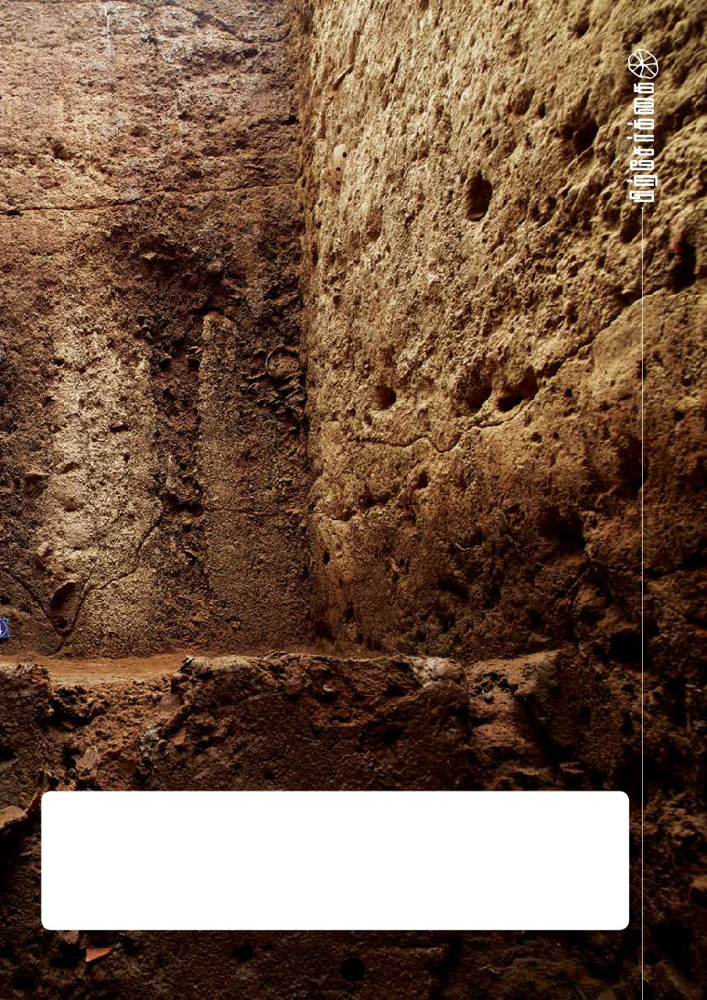
அகழாய்வுக் குழி எண் A 1/1
ந்த அகழாய்வுக் குழியின் படிநிலையானது(stratigraphy) மேல் மண்ணிலிருந்து(humus)
இ
மூன்றாம் மண்ணடுக்கின் மேல்மட்டம் வரையில் எவ்வித இடர்பாடுகளின்றி காணப்படுகிறது.
இந்த அகழாய்வுக் குழியிலும் மேல் மண்ணாணது வேர், நார், தழைகளுடன் களிமண் கலந்து
3 செ.மீ. முதல் 13 செ.மீ வரை மேற்கு வெட்டுத் தோற்றத்தில் (western section) காட்சியளிக்கிறது.
22
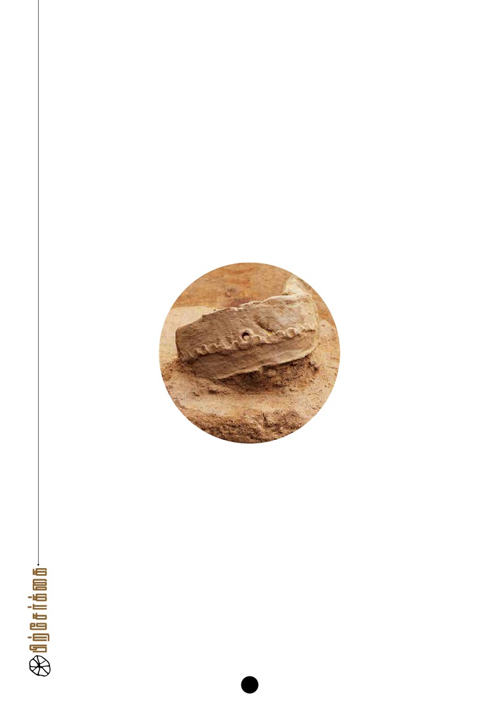
இந்த மேல் மண்ணில் தற்காலத்தைச் சார்ந்த
நீண்டுள்ளது. இக்களிமண் பானை வனைவதற்கு
வளையல் துண்டுகளும், அண்மைக்காலத்தில்
பயன்படுத்தப்பட்டிருக்க வேண்டும். இதே போன்ற
பயன்படுத்தப்பட்ட எஞ்சிய பொருட்களும்
படிவுகள் வடகிழக்கு காலடுக்குப் பகுதியில்
கலந்துள்ளன.
3.5 மீ. அளவில் மேற்கு வெட்டுத் தோற்றத்தில்
தெற்கு வடக்காக சென்று,
தெற்கு வெட்டுத்
முதல் மண்ணடுக்கின் குறைந்தபட்ச
தோற்றத்தில் கிழக்கு நோக்கி விரிவடைந்து 1.
பருமன் மேற்கு வெட்டுத் தோற்றத்தில் 20
18 மீட்டர் பருமனுடன் காணப்படுகிறது. இந்த
செ.மீ அளவிலும், அதிகபட்ச பருமன் கிழக்கு
அகழாய்வுக்குழியின் இரண்டாம் மண்ணடுக்கில்
வெட்டுத் தோற்றத்தில் 58 செ.மீ. அளவிலும்
பரவிக் கிடக்கின்ற தூய களிமண்ணானது பானை
காணப்படுகிறது. கடினமான களிமண் தன்மை
செய்வதற்குரிய மூலப்பொருளாக பயன்பட்டிருக்க
கொண்ட இம்மண்ணடுக்கின் இடையிடையே
வேண்டும் என்பதை உணர்த்துகின்றது. இந்த
சில செங்கல் துண்டுகளும் பானை ஓடுகளும்
அகழாய்வுக் குழியின் தென்மேற்கு காலடுக்குப்
பொதிந்துள்ளன. இந்த மண்ணடுக்கு
பகுதியில் அதிகளவிலான பானை ஓடுகள்
முழுவதும் ஒரே சீராக இருப்பினும், மேற்கு
சேர்க்கப்பட்டுள்ளதின் அடிப்படையில், இங்கு பானை
வெட்டுத் தோற்றத்தின் நடுப்பகுதியில்
தயாரிக்கும் தொழிற்கூடம் செயல்பட்டுள்ளதை
வேப்ப மரத்தின் வேர்கள் உள்ளதால் சற்று
உறுதிபடுத்த முடிகிறது.
தளர்வாக மண்ணடுக்கு காணப்படுகிறது.
இம்மண்ணடுக்கின் பருமனானது மேற்கு
இம்மண்ணடுக்கின் இறுதிப் படிவில் சுடுமண் அடுப்பு
வெட்டுத் தோற்றத்தின் வடமேற்கு
ஒன்று கண்டெடுக்கப்பட்டது. இதனுடன்
மூலையில் குறைந்தபட்ச
கரிமத்திலான பொருட்களும், கரிமமும்
பருமன் 66 செ.மீ.
பொதிந்துள்ளன. இங்கு படிந்துள்ள
அளவிலும், இதே
கருமை கலந்த பழுப்பு நிறம்,
வெட்டுத்தோற்றத்தின்
இத்தளமானது அடுப்பங்கரையாக
நடுப்பகுதியில்
புழக்கத்தில் இருந்தது என்பதை
அதிகபட்ச பருமன்
சுட்டிக்காட்டுகிறது. இதனைச்
92 செ.மீ. அளவிலும்
சுற்றியுள்ள பகுதியின் மண்ணானது
அமைந்துள்ளது. இந்த
கருப்பு, கருப்பு மஞ்சள் பழுப்பு
அகழாய்வுக் குழியின்
நிறங்கொண்ட மிருதுவான
கிழக்கு காலடுக்குப் பகுதியில்
தன்மையைக் கொண்டுள்ளது.
மண்ணடுக்கானது கடினமாக
இதே மட்டத்தில் தரைத்தளத்தினை
அல்லமால் சற்று மிருதுவாகவும்,
சமப்படுத்துவதற்கும் மெருகூட்டுவதற்கும்
நிறம் மற்றும் தன்மை ஆகியவை
பயன்படுத்தகூடிய இரண்டு தேய்க்கும்
ஒரே அமைப்புடன் உள்ளது. ஆனால், வடக்கு
கற்கள் (rubbing stones) சேகரிக்கப்பட்டன.
வெட்டுத் தோற்றத்தின் வடகிழக்கு மூலையில்
இந்த அடுப்பின் முன்பக்கம் கைப்பிடிக்கும் பகுதி
எஞ்சியவற்றை கொட்டிவைக்கும் பள்ளமாக
20 செ.மீ. நீளமும், பின்பக்கம் 30 செ.மீ. நீளமும்
காணப்படுகிறது. இவற்றில் ஏராளமான
கொண்டுள்ளது. இந்த அடுப்பின் குமிழ் அல்லாத
பெரிய அளவிலான பானைஓடுகள், செங்கல்
சுவர்ப்பகுதி 12 செ.மீ உயரமும், குமிழ் உள்ள
துண்டுகள், கல் ஆகியவை குவியலாக
சுவர்ப்பகுதி 16 செ.மீ. உயரமும் பெற்றுள்ளது.
கொட்டப்பட்டுள்ளன. தென்மேற்கு மூலையில்
மேலும், அடுப்புச் சுவரின் பருமன் 2 செ.மீ. ஆகும்.
வெளிப்படுத்தப்பட்டுள்ள சுடுமண் அடுப்பின்
அடுப்பின் முகப்பானது மேல் பாகம் விரிந்து,
வெளிப்பாகத்தினைச் சுற்றி கையால் அழுத்தி
உயர்த்தி அமைக்கப்பட்டுள்ளது. இதனின் பின்பக்க
வனையப்பட்ட வடிவம் காணப்படுகிறது.
நடுபகுதியில் அமைக்கப்பட்டுள்ள குமிழானது
இந்த அடுப்பின் பின்புறத்தின் நடுவே ஒரு
அரைவட்ட வடிவில் உள்ளது. இந்த அடுப்பில்
துளை ஒன்று இடப்பட்டுள்ளது.
அமைந்துள்ள மூன்று குமிழ்களுக்கு இடையே
இந்த அகழாய்வுக் குழியின் தென்கிழக்கு
தேவையான இடைவெளி அமைக்கப்பட்டுள்ளது.
மூலையில் நல்ல களிமண்ணைக் கொண்ட
ஏனெனில் பாத்திரத்தின் அடிப்பகுதியில் தீயிடும்
படிவானது கிழக்குப் பகுதியில் 1. 18 மீ.
போது வெப்பமானது சம அளவில் பரவுவதற்காக
முதல் தெற்குப் பகுதியில் 86 செ.மீ. வரை
ஏற்படுத்தப்பட்டுள்ளது எனலாம்.
23
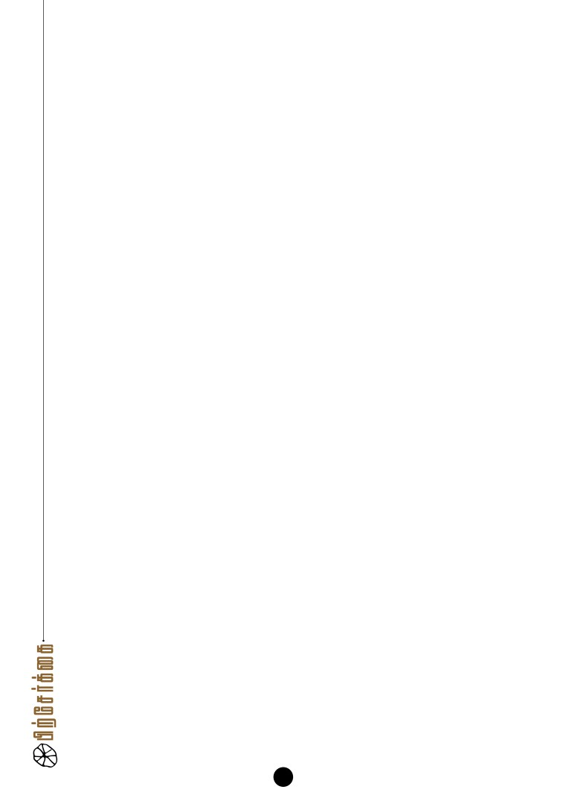
வ்வகழாய்வுக் குழி 4.08 மீ ஆழத்தில்
YP10 , YP9, YP8 மற்றும் YP7 பகுதி இரண்டில்
இ
4 வது மற்றும் 5 வது மண்ணடுக்குகள்
வடக்கு தெற்கு போக்கில் அமைக்கப்பட்டுள்ளது
ஒத்த நிலையில் சுடுமண் உறை கிணற்றின்
ஒவ்வொரு குழியும் 4 சதுர உட்பிரிவாக பிரிக்கப்பட்டு
பெரும் பகுதிகள் மேல் கொட்டப்பட்டுள்ள
பண்டைய கட்டடப் பகுதிகள் போக்கினை உணர்ந்திட
பானை ஓடுகளின் குவியலோடு காணப்
ஆய்வு மேற்கொள்ளப்பட்டது. இதன் வாயிலாக
பட்டன. இவ்விடத்தில் மேற்கொண்டு
ஒவ்வொரு நிலையிலும் ஒவ்வொரு ஆய்வுக்குழியும்
அகழ்ந்திடும்போது அதன் கீழ் நிலவியிருந்த
அகழப்பட்டு, நன்கு பரிசோதனைக்கு உட்படுத்தப்பட்டு
ஆழத்தில் அமைக்கப்பெற்ற5 சுடுமண்
ஆய்வுக்குறிப்புகள் கொண்டு ஆய்வறிக்கை தயார்
உறைகளை கொண்ட உறைகிணறு வெளி
செய்யப்பட்டது பின்வருமாறு விரிவாக குழிகள்
யிடப்பட்டது. அதன் கீழ்ப்பகுதி மேலும்
வாரியாக விவரிக்கப்பட்டுள்ளன.
அகழ்ந்து உறுதி செய்யப்பட்டது. இவ்வாறு
அகழாய்வுக்குழி A2/4 ம் மற்ற ஆய்வுக்குழிகளில்
வெளிப்பட்ட சுடுமண் உறை கிணற்றின்
தோன்றியுள்ள மண்ணடுக்குகள் ஒன்றாக காட்சியளித்தலும்,
ஒவ்வொரு உறையும் 62 விட்டமும், 32 செ.மீ
மண்ணடுக்கு 1 இல் சிறிது மாற்றத்துடன் தோன்றி
சாய் உயரமும், 23 செ.மீ பருமனும் கொண்டு
யிருந்தது. முதல்மண்ணடுக்கு முதல்ஆறாவது
ஒட்டுமொத்தமாக 2.20 மீ உயரத்திற்கு
மண்ணடுககு வரை இயற்கை மணணிற்கு மேலாக
தோன்றி நின்றன. இவ்வுறைகள் யாவும்
3.75 மீ ஆழத்தில் ஒன்றன்மேல் ஒன்றாக அமையப்
மணற்பகுதியில் நன்கு ஒன்றன்மேல் ஒன்றாக
பெற்றுள்ளது. மக்கிய பொருளுடைய தரை மட்ட
வைக்கப்பட்டு நிலத்தடி நீர் பெரும் வண்ணம்
மண்ணடுக்கு 12 செ.மீ முதல் 32 செ.மீ தடிமன்
அமைக்கப்பட்டுள்ளது. இப்பகுதியில் நிலத்தடி
கொண்டு குழியின் எல்லா பாகங்களிலும் மக்கிய
நீர் அண்மை ஆழத்திலே இருந்துள்ளதை
வேர்கள், தழைகள் மற்றும் அணமைக்கால கண்ணாடி
உணரமுடிவதோடு மட்டுமல்லாது அருகில்
வளையல் பகுதிகள் கொண்டு விளங்கியிருந்தது.
வடக்கே பாய்ந்தோடிக் கொண்டிருக்கும்
வைகை நதியின் போக்கால் நீர் வளம்
மண்ணடுக்கு1 மக்கிய மண்ணடுக்குக்கு கீழே
பெற்ற நிலப்பகுதி என்பதை காண்கிறோம்.
குறைந்த பட்சமாக மேற்கிலும், வடமேற்கு மூலையிலும்
2
செ.மீ தடிமன் கொண்டு தோன்றியிருந்து.
இவ்வுறை கிணற்றில் மேல்பகுதி முழுவதுமாக
இம்மண்ணடுக்கு பழுப்பு கலந்த மஞ்சள் நிறத்துடன்
கூறை ஓடுகள்கொண்டும், மட்கலத்துண்டுகள்
சில மட்கல ஓடுகள் மற்றும் செங்கல் கொண்டிருந்தது.
கொண்டும் நிரப்பப்பட்டு அறிய முடிகிறது.
இதன் துணடுகள் தொடர்ச்சியாக இரண்டாம்
இந்த நிலை மண்ணடுக்கத்தில் ஒரு கருப்பு
மண்ணடுக்கு 8 செ.மீ முதல் 1.65 வரை தடிமன்
சிகப்பு மட்கலன் சுவர்ப்பகுதியில் ஒட்டி
கொண்டு காட்சியளித்தது. இம் மண்ணடுக்கானது
இருப்பது வெளிக்கொணரப்பட்டுள்ளது.
முற்றிலும் சாம்பல் நிறம் கொண்டும் மிருதுவானதாகவும்
இக்குழியின் மேற்புற ஆழப்பகுதி செங்குத்தாக
நிறைய மட்கலப்பகுதிகள் மற்றும் செங்கல் உடைந்த
தோண்டப்பட்ட பிற்கால சிதையுண்ட மட்கல
பகுதிகள் கொண்டும் விளங்கியிருந்தது.
ஓடுகள் மிகுதியாக நிரப்பப்பட்டுள்ளது என்பது
மூன்றாம் மண்ணடுக்கானது அகழாய்வுக்குழியின்
நன்கு புலனாகிறது. இப்பகுதியைச் சார்ந்த
எல்லா திசைகளிலும் ஒருங்கே 4 செ.மீ முதல்
மற்ற பகுதிகள் எந்தவொரு இடர்பாடுமின்றி
1 செ.மீ வரை தடிமனுடன் காட்சியளித்தது அதிகபட்ச
அக்காலகட்டத்திற்குரிய மண்ணடுக்குகளை
பருமன் கிழக்கு பகுதியில் காணப்பட்டது.
கொண்டு விளங்குகின்றது. மண்ணடுக்கு
ஐந்தாவது மிகவும் அடர்த்தியான மஞ்
நான்காம் மண்ணடுக்கில் ஆழ்ப்பகுதி
சள் நிறம் கொண்டு கடினமான களிமண்
தொடர்ச்சியாக சற்று மாறுபட்டு மிக கடினமான
தனமையுடன் காணப்படுகிறது இதன்
களிமண் அகழாய்வுக்குழியின் வடக்கில் பெரும்
அருகில் அங்கொன்றும் இங்கொன்றுமாக
பகுதியிலும், கிழக்குத் தெற்கு மற்றும் மேற்கு சில
சில பானை ஓடுகள் காணப்படுகின்றன.
பகுதியிலும் நிலவியிருந்தது. இம்மண்ணடுக்கு
உறை கிணற்றின் மேல் பரப்பில் உறை
உதிரும் தனமை கொண்டும் சாம்பல் மற்றும் கறித்
கிணற்றின் உடைந்து பெரும் பகுதிகள்
துகள்கள் பொதிந்தும் நிறைய பானை ஓடுகளாக
இருப்பது மேலே கொட்டப்பட்டுள்ள பானை
கொண்டு விளங்குகிறது.
ஓடுகள் அதிக பலுவால் சிதைவுண்டிருப்பதை
உணரமுடிகிறது. மேலும் கிணறு புழக்கம்
இதனையடுத்து மிகவும் கடினமாகவும் மனித
எச்சங்கள் அரிதான பொருட்களற்ற மண்ணடுக்கு
அற்ற நிலையில் அதனை விட்டு நினைத்து
4.30 மீ வரை நிலவியிருந்தது. அதனைத் தொடர்ந்து
மட்கல ஓடுகள் முதலான பொருட்கள்
கொண்டு நிரப்பி இருப்பது உணரமுடிகிறது.
ஆற்று மணல்கொண்டு திகழும் இயற்கை மண்
தோன்றிற்று.
இப்பருவத்தில் அகழப்பட்ட ஆய்வுக்குழிகள்
27
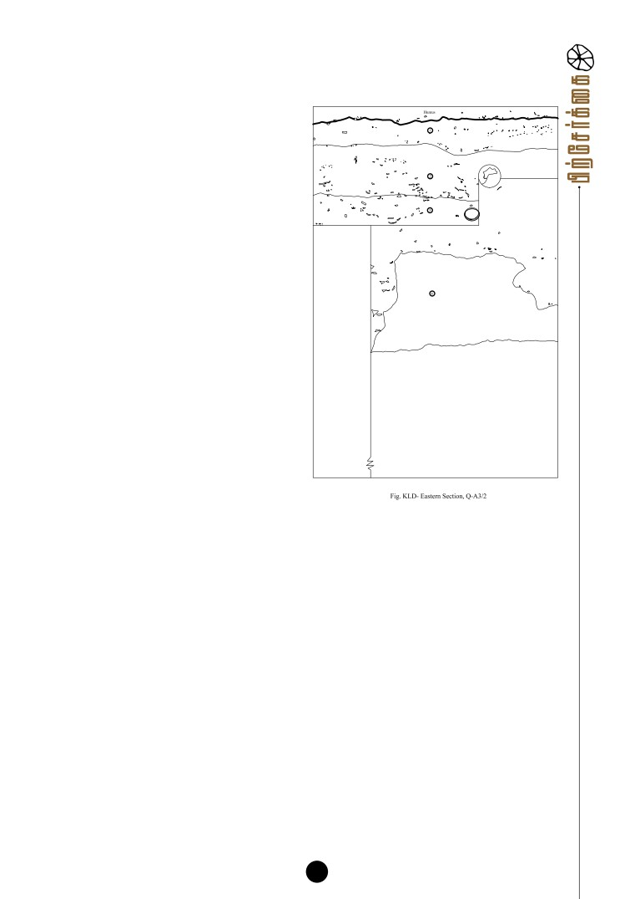
அகழாயவுக் குழி எண்: A3/2
ந்த அகழாய்வுக் குழியும் 5 மண்ணடுக்குகளை
இ
மத்திய மண்ணடுக்கின் கீழ் இயற்கை மண்ணிற்கும்
மேலும் ஒருங்கிணைத்து எல்லாதிசைகளிலும்
பரவியிருந்தது. மேற்பரப்பு மத்திய மண்ணடுக்கு
எல்லாதிக்குகளிலும் பரவியிருப்பதாக மேற்கு, வடக்கு
மற்றும் கிழக்கு திசைகள் ஏனையக் குழிகளில்
அதே மிருதுவுடனும், மக்கிய பொருட்களுடளும்
கொண்டும் விளங்கின்றது. இதனை குறைந்தபட்ச
பருமன் 14 செ.மீ ஆகவும் அதிகபட்ச பருமன்
32 செ.மீ. ஆகவும் தோன்றுகின்றது. இதன்
தொடர்ச்சியாக தெற்கு தென்மேற்கு மூலையில்
மண்ணடுக்கு முதலாம் அடர்த்தியின் பழுப்பு
சிவப்பு நிறங்கொண்டு களிமண் பொதிந்து
குறைந்தபட்ச அடர்த்தியாக வடகிழக்கு மூலையில்
38 செ.மீ. பருமனும், அதிகபட்சமாக மேற்கில்
தென்மேற்கு மூலையில் 68 செ.மீ பருமனும்
கொண்டு விளங்கியது. இம்மண்ணடுக்கின்
மேல் சிறிதளவு பருமனுடன் கூடிய மிருதுவான
மண்கலந்த களிமண் தென்மேற்கில் சற்று,
வேறுபட்டு இருந்தது. மேலும் இம்மண்ணடுக்கில்
உடைந்த செங்கல் துண்டுகள் காணப்பட்டன.
இம்மண்ணடுக்கைத் தொடர்ந்து இரண்டாம்
மண்ணடுக்கு எல்லா பக்கங்களிலும் மிருதுவான
பறக்கும் தன்மை கொண்ட சாம்பல்நிற
நிரப்பட்டுள்ள கிணற்றின் பகுதி 1.74 மீ
தன்மையுடன், பானைஓடுகள் மற்றும் செங்கல்
ஆழத்தில் தோன்றிற்று.
தூசிகளும் பொதிந்திருந்தன. இம்மண்ணடுக்கின்
குறைந்தபட்ச பருமன் 56 செ.மீ. ஆகவும் தெற்கில்
இதனையடுத்துள்ள நான்காம் மண்ணடுக்கில்
தென்கிழக்கு மூலையிலும், அதிக பட்ச பருமன்
மிகுந்த குறைந்த பானை ஓடுகள் கொண்டு
92 செ.மீ. வடமையப் பகுதியிலும் தோன்றிற்று.
நிரப்பபட்டுள்ளதால்
தொடர்ச்சியாக
சிலபகுதிகளில் மிக மிருதுவான பறக்கும் தன்மை
மண்ணடுக்கு சில பகுதிகளில் தோன்றிற்று.
தோன்றியமைக்கு நன்கு பானை ஒடுகளின்
இம்மண்ணடுக்கு முற்றிலும் கடினமாக
துகள்களே. மக்கல துகள்கள் காரணியாக
கெட்டியான களிமண்ணுடன் பழுப்பு மஞ்
அமைந்துள்ளன.
சள் நிறங்க்கொண்டு திகழ்கிறது. இதன்
அதிகபட்ச பருமன் 1.55 மீ ஆம். குறைந்த
மூன்றாம் மண்ணடுக்கானது குழியின் மேற்கு
பட்ச பருமன் 66 செ.மீ. அளவில் இக்குழியின்
பகுதியில் தென்மேற்கு மூலையில் 13 செ.மீ.
தென்மேற்குப்பகுதியில் காணப்படுகிறது. மேலும்
பருமன் கொண்டும், அதற்கு பக்க மையப்பகுதியில்
குழியின் தென்மேற்கு பகுதியில் சிறிது உடைபட்ட
அதிகபட்ச பருமனாக 75 செ.மீ. கொண்டும்
கோள வடிவமுடைய மூக்குடைய பானை
திகழ்ந்தது. இம்மண்ணடுக்கானது பழுப்பு கலந்த
ஒன்று (அட்டைப்படம்) வாய் கவிழ்க்கப்பட்ட
மஞ்சள் நிறம் கொண்டு நிறைய பானை ஓட்டுத்
நிலையில் இரண்டாம் மண்ணடுக்கின்
துண்டுகள், சில செங்கல் துண்டுகள், கூரை ஓடுகள்
தொடர்ச்சியாக கண்டெடுக்கப்பட்டுள்ளது.
மற்றும் இங்கொன்றும், அங்கொன்றுமாக சில
இதனையடுத்து, சிறிது ஆழத்தில் வேறொரு
எலும்புகள் திகழ்ந்தது. குறிப்பாக இம்மண்ணடுக்கின்
அகல்வாய் செந்நிற பூச்சுடைய கிண்ண
கீழ்ப்பரப்புப்பகுதியில் மேற்கு, வடக்கு, கிழக்கில்
அதிக சிதைந்துள்ள நிலையில் உறைகிணற்றில்
அதிகப்படியான தேவையற்ற பொருட்கள் கொண்டு
அடிப்பகுதியில் தென்பட்டன.
28
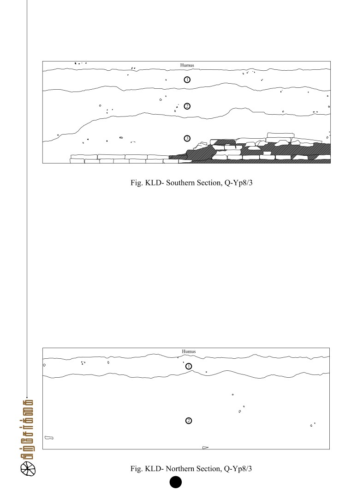
அகழாய்வுக்குழி எண் YP7/2
றி7/2 அகழாய்வுக் குழியின் வடகிழக்கு
எச்சங்களாக விளங்கக்கூடிய பானைகள் மற்றும் பிற
Y
கால் பகுதியில் அகழாய்வுப் பணி முறையாக
தொல்பொருட்கள் பெற்றிடும் வகையில் அகழாய்வு
நடைபெற்று வந்தது.
35 செ.மீ ஆழத்தில்
தொடர்ந்தது. இக்குழியின் வெட்டுத் தோற்றத்தில்
ஒரு சிறிய பொத்தான் வடிவ செப்புக்காசு
உடைந்த வட்டச் சில்லுகளும் கண்டெடுக்கப்பட்டன.
காரைகளுடன் கண்டெடுக்கப்பட்டது.
மேலும், நன்கு வடிவமைக்கப்பட்ட அதன் விளிம்பு
இதனுடன் சிறு செப்புக் கிண்ணத்தின் சில
வழவழப்பாகவும் மேல் பகுதி சமமாகவும் மெருகுடன்
பகுதிகளும் மீட்டெடுக்கப்பட்டுள்ளன. மேலும்,
கூடிய வட்டச்சில்லும் கண்டெடுக்கப்பட்டன.
சோதனைக்கு உட்படுத்தி தொடர்ச்சியாக
இவ்வகழாய்வுக் குழியின் அருகிலுள்ள சீறி8/2 குழியின்
இதன் கூடுதலாக பொருட்கள் கிடைக்க
பணி 1.30 மீ. ஆழத்திற்கு தொடர்ந்த நிலையில்
வாய்ப்பிருக்கும் என எண்ணி அகழாய்வு
அதன் தென்புறத்தில் உடைந்த செங்கற்பகுதிகள்
முறையாக தொடரப்பட்டது. இவ்விதம்
காணப்பட்டதின் வாயிலாக அகழாய்வுக்குழி சீறி
தொடரும்போது, செங்கல் கட்டடப்பகுதியின்
7/2இல் காணப்பெற்ற செங்கற்கட்டட பகுதிகளின்
தோற்றம் இக்குழியின் வடபுறத்தில்
நீட்சியினை அளித்திட இவ்விரு குழிகளுக்கிடையில்
காணப்பட்டது. மேலும் அதன் பக்கவாட்டிலும்,
நடைபாதைப் பகுதி முறையாக நீக்கப்பட்டது.
பிற்பகுதியில்; அக்கட்டப் பகுதியின்
அவ்வமயம் அதே மண்ணடுக்கு சமநிறம் மற்றும்
அகழாய்வுப் பணியானது சமகால பண்பாட்டு
29
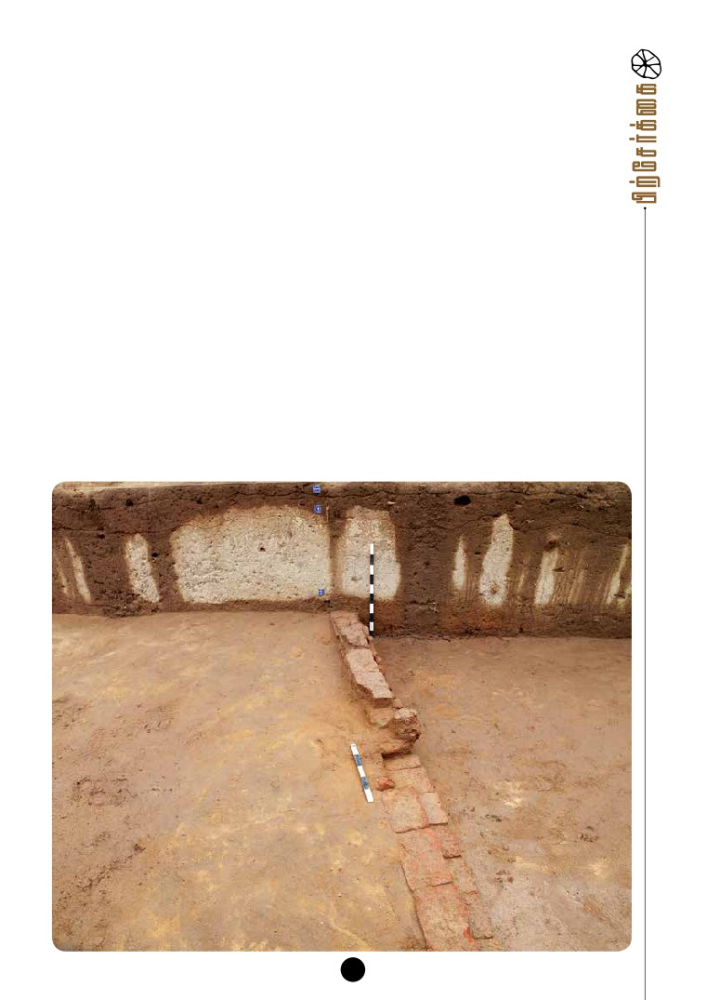
பொருட்கள் பொதிந்து அதே தன்மையுடன்
தடயங்கள் காணப்பட்டன. அப்பந்தல்
இருந்ததை கண்டறியப்பட்டது. செங்கற் கட்டடப்
குழிகளில் உள்ள சற்று மிருதுவாகவும்
பகுதி ஆழத்தில் இக்குழியில் சிறிது மேல்மட்டத்திலே
மண்ணிற்கும் மற்ற இடங்களிலுள்ள
அச்செங்கற் கட்டடத்தின் தொடர்ச்சி காணப்பட்டது.
மண்ணடுக்குகளும் வேறுபாடு உள்ளன.
மிகவும் கவனத்துடன் கட்டடப் பகுதியின்
ஒரு கூரைக்குழியானது வடபுறத்திலும்
தொடர்ச்சி அறியப்பட்டு படிப்படியாக அகழாய்வுப்
மற்றொன்று தென்புறத்திலும். இச்செங்கற்
பணி நிகழ்த்தப்பட்ட நிலையில் மேல் அடுக்கு
கட்டடப்பகுதிகள் மேல் வேயப்பட்டிருந்த
செங்கற்கள் பகுதிகள் மட்டுமின்றி அடிப்பகுதி
கூரை இருந்ததற்கான அமைப்பை
செங்கற் நிலைவரை வெளிக்கொணரப்பட்டது. சீறி
வெளிப்படுத்துவதாக தோன்றுகிறது. மேலும்
7/2ல் தோன்றிய செங்கற் கட்டடப்பகுதியின் நீட்சி
பிற அகழாய்வுக்குழிகளில் தலைப்பகுதியில்
(கீழ்ப்புற மையப்பகுதிவரை) கண்டெடுக்கப்பட்டது.
இருதுளைகள் மற்றும் விரலால் அழுத்தி
ஓர் உந்துதலை ஏற்படுத்துகிறது. கட்டடப்பகுதி
உருவாக்கப்பட்ட பள்ளங்கள் கொண்ட சுடுமண்
கண்டறியப்பட்டபோது இதன் தொடர்ச்சி
கூரை ஓடுகள் கிடைக்கப்பெற்றுள்ளன.
வடகிழக்காக நீளும் என்று கணிக்கப்பட்டது.
இவற்றோடு இச்செங்கற் கட்டட வடபகுதிக்கு
அதேபோன்று கட்டடப்பகுதி மூலைவிட்டமாக
அருகே நன்கு குழைக்கப்பட்டு மண்கொண்டு
வடகிழக்காக நீண்டிருந்தது. ஆய்வின் பரிமாணத்தை
மெழுகிய தரைப்பகுதி கண்டறியப்பட்டது.
மெருகேற்றுவதாகவே அமைந்துள்ளது.
இதுபோன்று மெழுகியத் தரைப்பகுதி
அகழாய்வு குழி எண் சீறி 8/4ல் இதே
இச்செங்கள் கட்டடப்பகுதியின் அடியில் அமைக்கப்பட்ட
ஆழத்தில் காணப்பெற்றது. அக்கால மக்கள்
செங்கற்களின் அடிப்பகுதி பலமாக நீண்டு
வாழ்விடப்பகுதியில் வடிவமைக்கப்பட்ட
அடுக்கப்பட்டிருந்தது. கட்டடமேல் பகுதியினை
தரையாக உணரமுடிகிறது. மேலும் இப்பகுதி
எடையை, தாங்குவதற்காகவே உறுதியாகவே
மேற்கூரையானது மழை மற்றும் வெயில்
அமைக்கப்பட்டுள்ளது. இக்கட்டடப் பகுதியின்
இன்றி நன்கு பாதுகாக்கப்பட்ட பகுதியாகவும்
வடபகுதியில் பந்தல்கள் அமைப்பதற்கான கூரைக்குழி
இருந்திருக்கவேண்டும்.
30
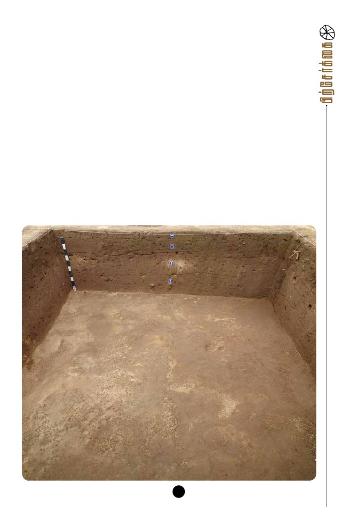
அகழாய்வுக் குழி எண் 1
(YP8/1) தரைப்பகுதி
வ்வகழாய்வுக் குழியின் 1.50 மீ ஆழத்தில் நன்கு சமப்படுத்தப்பட்ட களிமண் தரைப்பகுதி
இ
கிழக்குப் புறத்தில் பரவியிருந்தது. இக்குழியின் மேற்புறப்பரப்பில் சற்று கீழ் ஆழத்தில்
இத்தரையானது நீண்டிருந்துள்ளதை காண முடிந்தது. இப்பகுதியின் மண்ணின் தன்மை நன்கு
குழைக்கப்பட்டு களி மண் கெட்டியாக இருப்பதை அக்கால கட்டுமானம் தரைப்பூச்சு சாந்தினை
களிமண், இயற்கை சாறு மற்றும் சுண்ணாம்பு பொருட்களை 3:2:1 என்ற விகிதாசாரத்தில் சேர்த்து
குழைத்து தரை போடப்பட்டிருக்க வேண்டும். சாணம் இட்டு மெழுகியிருந்ததால் இத்தரைப்
பகுதியினை சில இடங்களில் கரும்பாசி நிறம் கொண்டு காட்சியளிக்கின்றன. இந்நாளிலும்
இதுபோன்ற முறை கிராமவாழ் குடிசை வீடுகளில் தொடர்கிறது என்பது குறிப்பிடத்தக்கது.
இவ்வாறு மக்கள் வாழ்விடப் பகுதியில் அவர்களின் பயன்பாட்டு விரிவாக்கத்தால் வெவ்வேறு
நிலை கொண்டு கட்டமைக்கப் பெற்றுள்ளதை அறிகிறோம். இத்தரை தென்புற மையப்பகுதியில்
செங்கற்கள் துண்டுகளும் கற்கள் துண்டுகள் கொண்டும் விளங்குவதால் கடினமாக திகழ்கிறது.
32
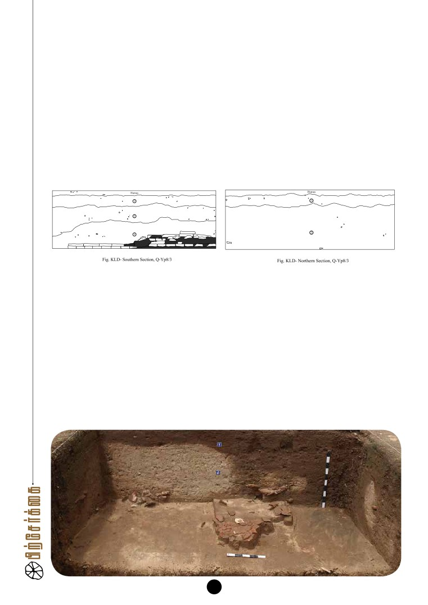
அகழாய்வுக் குழி எண்
(YP8/3) தரைப்பகுதி
ந்த அகழாய்வு குழியின் அனைத்து பகுதிகளும் சீராக தொடரப்பட்டது. இப்பகுதியில்
இ
நிலவியிருந்த பண்பாட்டு தடங்களை தொடர் நிலையில் அறிந்திடும் வண்ணம் கட்டடப்
பகுதியின் மற்ற பகுதிகளை வெளிக்கொணரும்
நோக்கில் அகழாய்வு தொடரப்பட்டது.
இவ்விரு அகழாய்வுக்குழிகளிலும் ஆய்வு மேற்கொள்ளபட்டு, சீறி8/2 குழியில் மட்டும் 1.80 மீ
ஆழத்தில் இரு அடுக்குகள் கொண்ட செங்கற் கட்டடப்பகுதி காணப்பட்டது. இதன் தொடர்ச்சியாக
குழி சீறி8/3 லும் இக்குழிகள் இடையில் நிலவியிருந்த நடைப்பகுதியை அகற்றியும் எந்தவிதமான
கட்டடப் பகுதியின் நீட்சியும் தென்படவில்லை என்பது குறிப்பிடத்தக்கது.
அகழாய்வுக் குழி எண்
(YP10/4) தரைப்பகுதி
ந்த அகழாய்வுக் குழி மண்ணடுக்கின்
நிலையை உணர்த்தும் வண்ணம் அமையப்பெற்றுள்ளன.
இ
வெட்டுத் தோற்றத்தில் பொதிந்துள்ள
இதன் வாயிலாக ஒரு சூரிய தோற்றத்தை தெளிவாக
ஒரு பானையில் இணைக்கோடுகளுடன்
வடிவமைத்திருப்பதை நன்கு உணர முடிகிறது.
கீறப்பட்டுள்ள குறியீட்டில்
6 கதிர்வீச்சு
இவ்வாறு சூரியனை ஒரு வட்டமாவும் அதனைச்
கோடுகள் கொண்டு மிளிர்கின்றன.
சுற்றிலும் கதிர்கள் போன்று
கோடுகள் இட்டு
ஒவ்வொரு கதிர் வீச்சு கோடும் 14 சிறிய
அமைந்துள்ளது சிறப்பாக தோன்றுகிறது.
இணைக்கோடுகள் கொண்டு வண்ணந்தீட்டிய
33
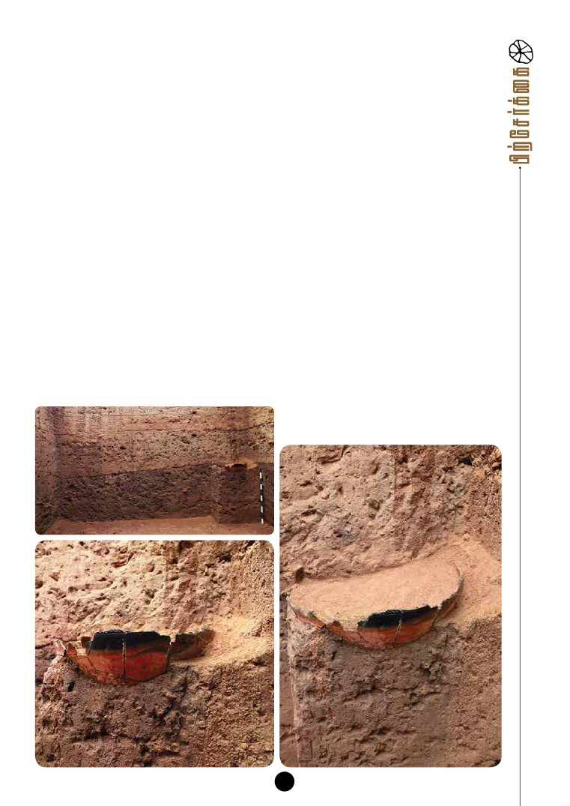
அகழாய்வுக் குழி எண் (ZB 5/2)
வகையில் ஒருப்பகுதி விடப்பட்டு மற்ற பகுதி
ந்த அகழாய்வுப் பகுதியின் 2.40 மீ ஆழத்தில்
இ
அகழ்ந்தெடுக்கப்பட்டுள்ளது. இதனை சார்ந்த
வட மேற்கு மூலை கருப்பு சிவப்பு நிறத்தில்
மண்ணடுக்கு மஞ்சள் நிறங்கொண்ட மண்
அகண்ட வாய் அமைப்பு கொண்ட ஒரு பெரிய
தன்மையுடன் விளங்குவதோடு ஆற்று மணல்
கிண்ணத்தின் வாய் விளிம்புப்பகுதி கண்டறியப்பட்டது.
பொதிந்துள்ள இயற்கை மண் கொண்டு
அதனை முழுமையாக வெளிக் கொணரும் வண்ணம்
தோன்றுகின்றது. இம்மட்கலன் கிடைக்கப்பெற்ற
கவனமாக அருகில் இருந்த மண் நீக்கப்பட்டு
சம நிலை மண்ணடுக்கு பகுதியில் சிறு
முழுமையான வடிவுடன் காட்சியகப்படுத்தப்பட்ட
பருமன் அளவில்
சுண்ணாம்பு கலந்த
நிலையில், அப்பெரும் கிண்ணம் தமிழகத்தில்
மண்ணமைப்பு தோன்றுகிறது. இம்மட்கல
இதுவரை நடைபெற்றுள்ள அகழாய்வுகளில் கிடைக்கப்
பயன்பாட்டிற்கு ஏதேனும் தொடர்புள்ளதா
பெற்ற கருப்புசிவப்பு பானை வகைகளில் மிகப்பெரிய
என்பதை உணர்த்தும் வண்ணம் உள்ளது.
கிண்ணமாக தோன்றுகிறது. இதனின் விட்டம் 62
இச்சுண்ணாம்பு படிவ மண்ணமைப்பு அகழாய்வு
செ.மீ. ஆகும். இம்மட்கலமானது மிகவும் நேர்த்தியாக
குழியில் எல்லா புறத்திலும் ஓரளவு கடினமான
கருப்பு சிவப்பு வகையாக தலை கீழ் முறையில்
கருப்பு நிற மண்ணடுக்குடன் தோன்றுகிறது.
வைத்து சுடப்பட்டு இயல்பு நிலையிலேயே உள்ளே
இம்மண்ணடுக்கானது வடக்குத் தெற்காக
மற்றும் விளிம்பில் கருப்பு நிறமும், வெளிப்பகுதி
தென்பகுதியில் குறைந்துள்ளது. அகழாய்வுக்
சிவப்பு நிறமும் கொண்டு தயாரிக்கப்பட்டுள்ளது.
குழியின் ஆழப்பகுதியில் நிலவியிருந்தது
அதன் வழவழப்பான, ஒளிரும் வண்ணம் மிக
வெளிப்பட்டது. இவ்வகழாய்வுக்குழியில்
நேர்த்தியான வேலைப்பாட்டினை பறை சாற்றுகிறது.
கண்டெடுக்கப்பட்ட கருப்புசிவப்பு மட்கல வகை
இம்மட்கலனை சிதைவடையாமல் மீட்டெடுக்கும்
பெருங்கிண்ணத்தின் கழுத்து வெளிப்புறப்
பகுதியில் கயிறு போன்ற வடிவமைப்பு மிக
நேர்த்தியாக புடைப்பாக அமைக்கப்பட்டுள்ளது.
34
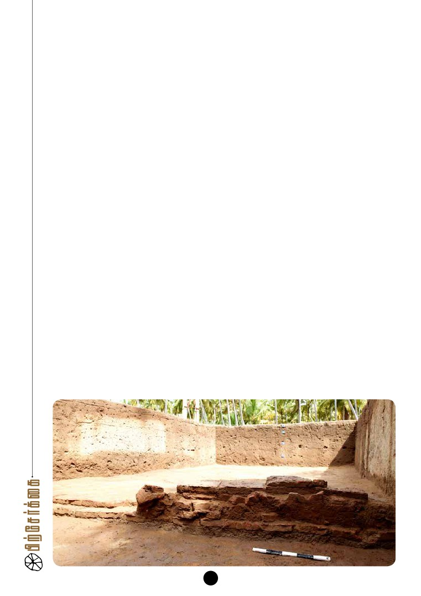
செங்கற் கட்டடம்
ற்குபுற மண்ணடுக்கு தோற்றம்
இதன் வாயிலாக இவ்வூர் பண்டையகால கட்டடத்தில்
தெ
வடக்குப்புற மண்ணடுக்கு தோற்றம்
குறிப்பிட்ட சில பகுதிகளில் ஒரே கால நிலை
இவ்விரு அகழாய்வுக்குழிகளிலும் ஆய்வு
கட்டட அமைப்பை பின்பற்றியுள்ளதை நன்கு
மேற்கொள்ளபட்டு, YP8/2 குழியில் மட்டும்
உணரலாம், அக்கால கட்டத்தில் மக்கள் தங்கள்
1.80 மீ ஆழத்தில் இரு அடுக்குகள் கொண்ட
வாழ்விடங்களை செம்மையாக வடிவமைத்து
செங்கற் கட்டடப்பகுதி காணப்பட்டது.
வாழ்ந்திருந்திருக்கிறார்கள் என்பதையும் அறிய
முடிகிறது. இவ்வாய்வுக்குழியும் அருகில் உள்ள பிற
இதன் தொடர்ச்சியாக குழி YP8/3 லும்
பகுதியும் கீழடியிலுள்ள பண்டைய மண்மேட்டின்
இக்குழிகள் இடையில் நிலவியிருந்த
மைய உயரப்பகுதியாக காட்சியளிக்கிறது. இதன்
நடைப்பகுதியை அகற்றியும் எந்தவிதமான
தொடர்ச்சியாக கிழக்கிலும் வடக்கிலும் கட்டட
கட்டடப் பகுதியின் நீட்சியும் தென்படவில்லை
கட்டுமான பகுதிகள் தோன்றிய காலநிலை
என்பது குறிப்பிடத்தக்கது.
ஈராயிரம் ஆண்டுகள் முற்பட்டதாக தெரிகிறது.
செங்கற் கட்டடம்
மேலும் இக்குழியில் உள்ள கட்டட மேல் மட்டத்தில்
YP8/2 ஆய்வுக்குழியில் 1.25 மீ ஆழத்தில்
சிதைவுண்ட செங்கற் துகள்கள், துண்டுகள்
வடபுறத்தில் ஒரு வரிசையில் செங்கற்கள்
காணப்படுவதால் கட்டடத்தின் இடிபாடு நிலையை
கொண்டு அமைக்கப்பட்ட கட்டடப்பகுதி
அறிய முடிகிறது. இக்கட்டடத்தின் தொடர்ச்சியாக
தோன்றிருப்பதால், மிக கவனமாக
அடுத்த நிலை செங்கற்கள் அடியில் கண்டெடுக்கப்
மேல்பகுதியில் சுற்றி பதிந்துள்ளன
பட்டு அகலவாட்டில் நேர்த்தியாக எழுப்பியிருப்பதை
பகுதிகள் நீக்கப்பட்டு தூசு துடைக்கப்பட்ட
காணமுடிகிறது. அப்படி அமைந்திருந்த செங்கற்கள்
நிலையில் தெளிவாக காட்சியளித்தது.
மேல் அடுக்குகளில் உள்ள செங்கற்களின் மூன்றில்
இதன் நீட்சி கிழக்கு வடக்காக செல்வதை
இரண்டு பங்கு அளவுடன் சதுர வடிவத்துடன்
உணர முடிந்தது. இச்செங்கற்கள் 36 செ.மீ
காட்சியளித்தன. இச்செங்கல் கட்டடப்பகுதி மேல்
நீளமும், 24 செ.மீ அகலமும், 6 செ.மீ.
அடுக்கில் 4 செவ்வக வடிவ செங்கற்களும் அதன்
தடிமனும் கொண்டிருந்தன. இந்த அளவுகள்
கீழ் தொடர்ச்சியாக 7 சதுரவடிவ உடைக்கப்பட்ட
கொண்ட செங்கற்கள் இப்பகுதியில் மத்திய
செங்கற்கள் கொண்டு அமைக்கப்பெற்ற குழியின்
தொல்லியல் துறை மேற்கொண்ட அகழாய்வில்
வடகிழக்கு புறத்தில் தோன்றிற்று. இவ்வடிவமைப்பானது
கண்டெடுக்கப்பட்டுள்ள கட்டடப்பகுதியில்
ஒரு நேர்த்தியான கட்டடப்பாணி அக்கால கட்டத்தில்
நிலவிலிருந்த செங்கல் அளவுகளை ஒத்த
நிலவியிருந்ததை உணர்த்துகிறது.
அளவுகளைக் கொண்டுள்ளது. என்பது
சமகால கட்டடபாணியை பறைசாற்றுகிறது.
35
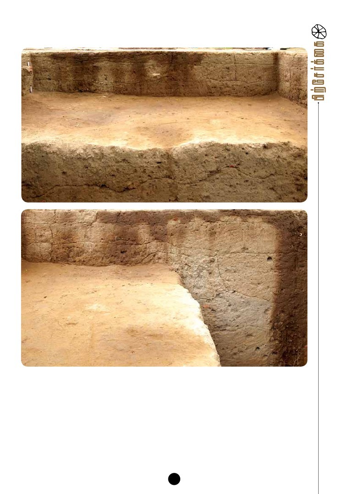
மிருதுமண் பூச்சுதரை
ஆழத்தில் காணப்பெற்றது. அதன் தொடர்ச்சி
அகழாய்வுக்குழி எண் YP7/1ல் 34 செ.மீ ஆழத்தில்
மற்றும் நீட்சியை உணர்த்துகிறது. இவ்விதம்
வடப்பகுதியில் அடர்த்தியான மண்ணடுக்குடனும்,
வடிவமைக்கப்பெற்றது. இத்தரைப்பகுதி
தென்புறத்தில் மிருதுவாகவும் தோன்றியது.
மக்கள் வாழ்விடங்களில் சிறப்பு பகுதியாக
இதனின் நிறமும் வேறுபட்டு கருஞ்சிவப்பு மஞ்
பயன்பட்டிருக்க வேண்டும். மேலும்
சளுடன் காட்சியளித்தது. இதனை தொடர்ந்து
இம்மிருதுவான பூச்சுத்தரை 6 செ.மீ அளவிற்கு
அகழ்ந்தபொழுது தென்பகுதியில் மிகவும் மிருதுவான
நேர்த்தியான வண்டல் மண்கொண்டு
மண்கொண்டு பூசப்பட்ட தரைப்பகுதி 1மீ நீளத்திற்கு
செவ்வனே அமைக்கப்பட்டு குறிப்பிட்ட
பரவியிருந்ததை காணமுடிந்தது. இதுபோன்று
பகுதியில் மட்டும் தோன்றும் இவ்வமைப்பு
மிருதுவான மண்கொண்ட பூச்சுத்தரைப்பகுதி
தனிசிறப்பியலை வெளிப்படுத்துவதாகவே
இக்குழியின் மற்றொரு பகுதியான YP7/1லும் இதே
கருதப்படுகிறது.
36
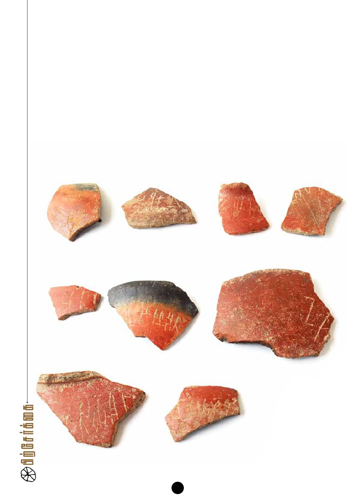
brahmi script
he Brahmi inscription found engraved on the outer surface of Black and
T
Red-Ware with three horizontal parallel lines drawn along with four Brahmi letters
namely ku, ru, vi and ka. The reading could be related with sufficient letter ‘n’ (d;) so
the letters read together with ‘n’ (d;) suffix may mean the name of the person as ‘ளீuஸ்வீக்ஷீணீn-
ātணீn ’. The suffix letter in this is conjecturally added to become portion of script and
missing of the broken sherd. The proper noun of the Brahmi script is suggestive of
either the quality of the individual as philanthropist similar to the nature of rain.
37
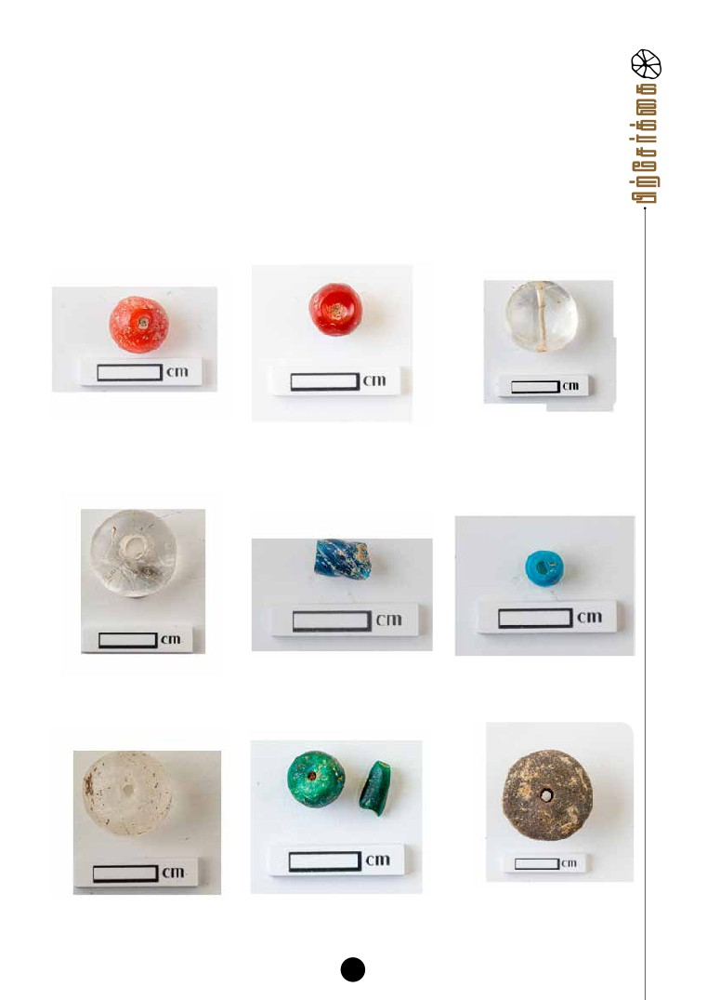
மணிகள்
ழடி அகழாய்வில் கண்ணாடி, பேஸ்ட், ஸ்படிகம், பெயின்ஸ், அகேட், கார்னீலியன், மற்றும்
கீ
சுடுமண் ஆகியவற்றால் செய்யப்பட்ட 2301 மணிகள் சேகரிக்கப்பட்டுள்ளன. இவற்றில்
கண்ணாடி மற்றும் பேஸ்ட் வகை மணிகள் பல நிறங்களில் கிடைக்கப்பெற்றுள்ளன. மேலும்,
இம்மணிகள் கோளம், உருளை, நெல்லிக்காய், பீப்பாய் வடிவங்களைக் கொண்டுள்ளன. இவற்றில்
குறிப்பாக கி2/2 அகழாய்வுக் குழியின் 1. 47 மீட்டர் ஆழத்தில் 120 பேஸ்ட் மணிகளும், 1.55
மீட்டர் ஆழத்தில் 357 பேஸ்ட் மணிகளும் அதிகளவில் கண்டெடுக்கப்பட்டுள்ளன.
படிகம்
கார்னீலியன்
கார்னீலியன்
கண்ணாடி
கண்ணாடி
படிகம்
கண்ணாடி
சுடுமண்
படிகம்
38
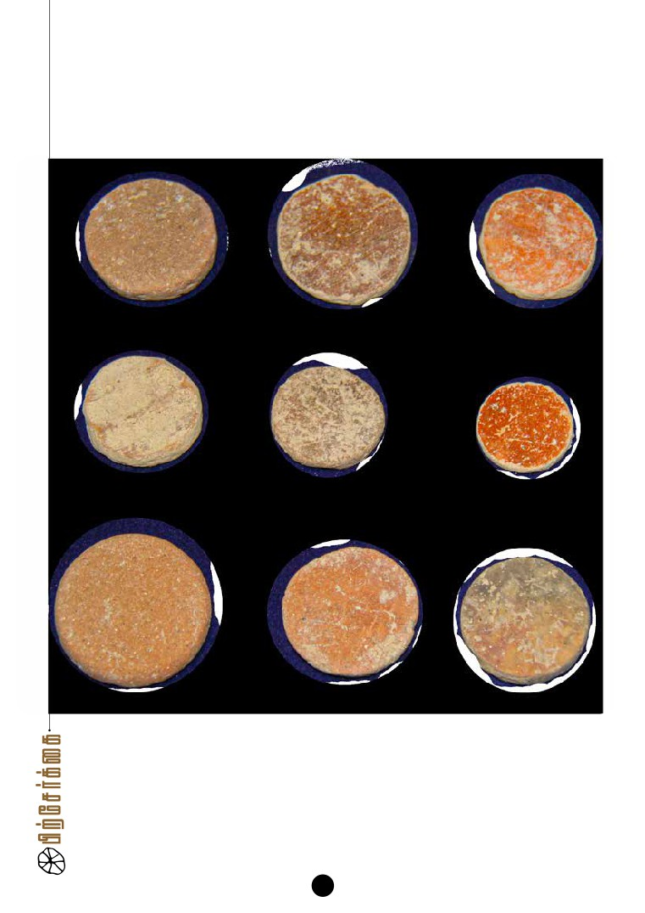
வட்டச்சிலலுகள்
ட்டையான வடிவில் உள்ள பானை ஓட்டின் விளிம்புகள் நன்கு தேய்க்கப்பட்டு வட்ட வடிவத்தைக்
த
கொண்டிருக்கும் விளையாட்டுப் பொருள் ‘சில்லு‘ என்றழைக்கப்படுகிறது. இச்சில்லுகளை
குழந்தைகள் மற்றும் பெண்கள் தங்களின் விளையாட்டுக்குப் பயன்படுத்தினர். இவை, பல்வேறு
அளவுகளில் பல்வேறு நிறத்தையுடைய பானை ஓடுகளில் கிடைக்கின்றன. கருப்புசிவப்பு நிறம்,
சொர சொரப்பான சிவப்பு நிறம், சிவப்பு நிறம் ஆகிய நிறங்களைக் கொண்ட பானைஓடுகளில்
செய்யப்பட்ட மொத்தம் 237 வட்டச் சில்லுகள் இதுவரை அகழாய்வில் சேகரிக்கப்பட்டுள்ளன.
39
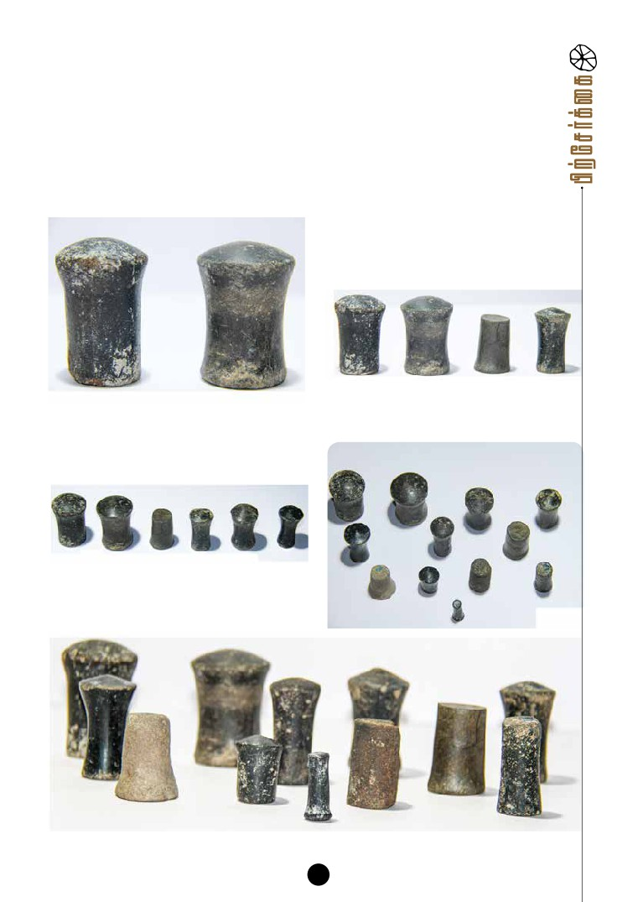
gamesmen
n the historic period gamesman were made out of clay material. Two types of
I
gamesman were observed in Keeladi excavation. These objects might be used to play
the ancient games like chess. The present session of the excavation work yielded 26
numbers of gamesmen. All are made of burnt clay and mostly black colour.
40
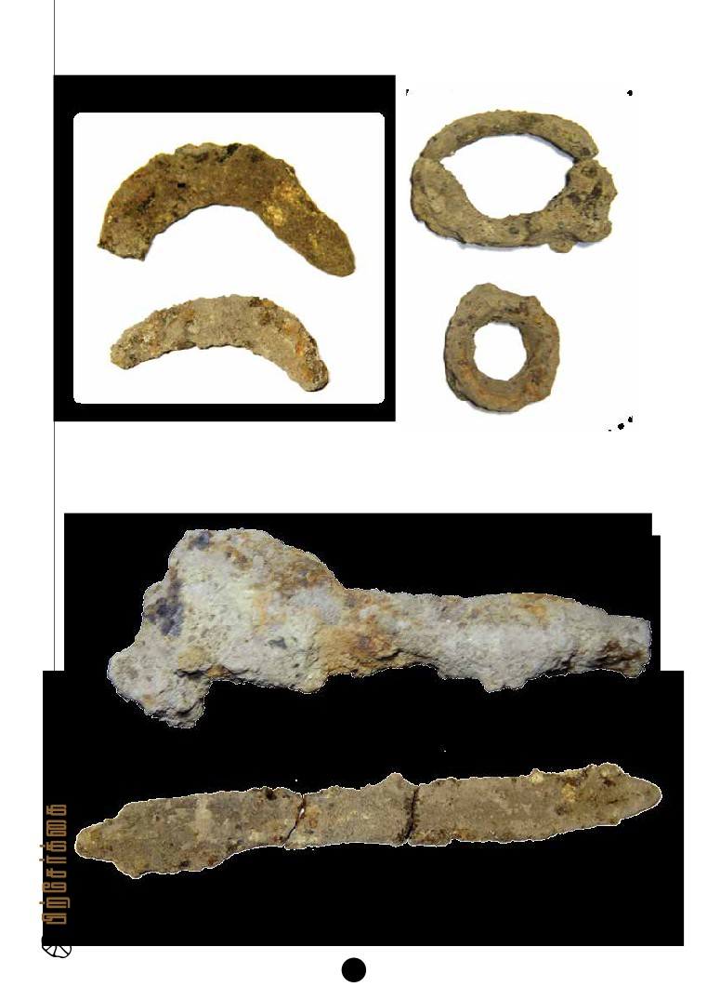
இரும்புப் பொருட்கள்
வ்வகழாய்வில் இரும்பு ஆணிகள் மற்றும் கத்திகளின் பாகங்கள் குறிப்பிடத்தக்க
இ
அளவில் கண்டெடுக்கப்பட்டுள்ளன. இவை பெரும்பாலும் உடைந்த நிலையிலே உள்ளன.
கிடைக்கப்பெற்றுள்ள 50 இரும்புப் பொருட்களில் பெரும்பாலானவை ஆணிகள் மற்றும்
கத்திகள் ஆகியவையே. ஏனைய இரும்புப் பொருட்களின் வடிவம் மற்றும் பயன்பாடு குறித்து
அடையாளங்காண இயலவில்லை.
41
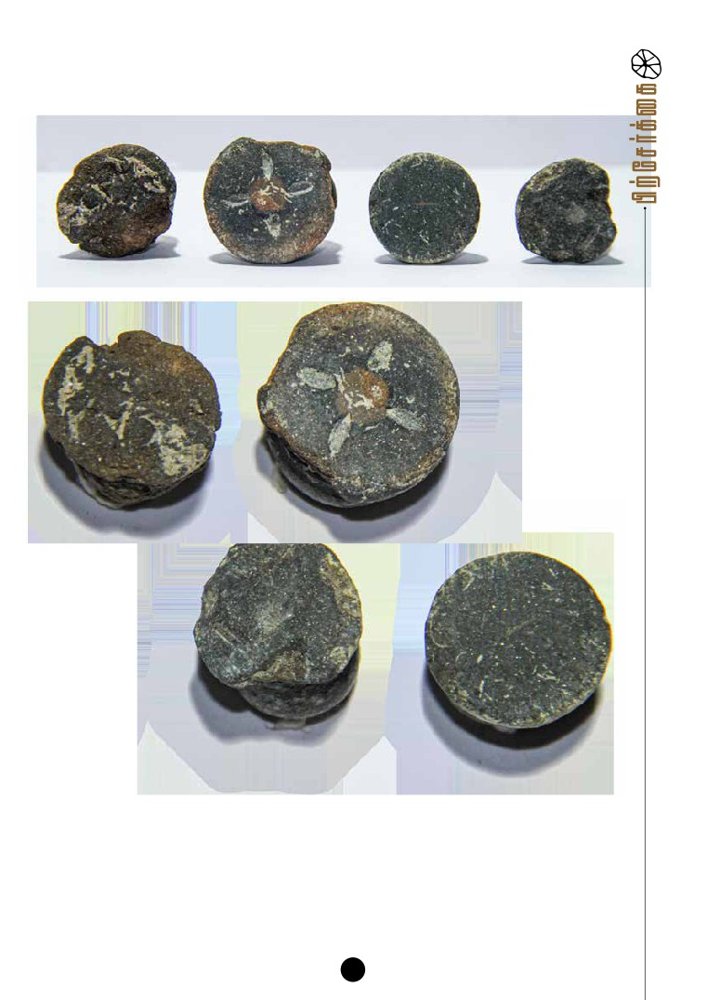
காதணிகள்
ந்த அகழாய்வில் இரண்டு வகையான சுடுமண் காதணிகள் கண்டறியப்பட்டன. ஒன்று,
இ
நல்ல களிமண்ணைக் கொண்டு வட்டவடிவில் தட்டையாகவும் சற்று தடிமனாகவும் மேல்
புறத்தின் நடுப்பகுதியினைச் சுற்றி சிறிது பள்ளமான தடத்தை ஏற்படுத்தி காது துளையில்
பொருந்தும் வண்ணம் தீயிலிட்டு சுடப்பட்டு செய்யப்பட்ட காதணி. மற்றொன்று அதே போன்று
தட்டையான நடுப்பகுதியில் துளையிடப்பட்ட காதணி ஆகும். இவை பனைஓலையைச் சுற்றி
காதணியாக அணிவது போன்ற அமைப்பில் காணப்படுவது குறிப்பிடத்தக்கது. காதணிகள்
தட்டையான பகுதியின் ஒரு பக்கத்தில் நன்கு அலங்கரிக்கப்பட்டுள்ளன. ஒரு காதணியில்
‘ழ‘ வடிவம் போன்ற அமைப்பில் அலங்கரிக்கப்பட்டுள்ளது. இந்த அகழாய்வில் மொத்தம் 14
சுடுமண் காதணிகள் சேகரிக்கப்பட்டுள்ளன.
42
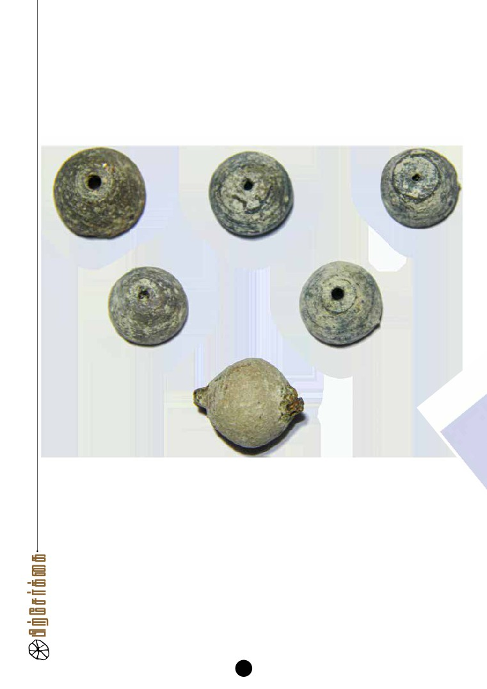
தக்கள¤
க்களி என்பது சுடுமண்ணால் கோள வடிவில் செய்யப்பட்டு நடுவே துளையிடப்பட்டு
த
சுற்றக்கூடிய அமைப்பினைக் கொண்ட சக்கரம் ஆகும். இது சிறிய அளவில் குறைந்த
எடையைக் கொண்டிருக்கும். இந்த தக்களி பருத்தியினை நூலாக திரிப்பதற்கு பயன்படுத்தும்
கருவியாகும்.
43
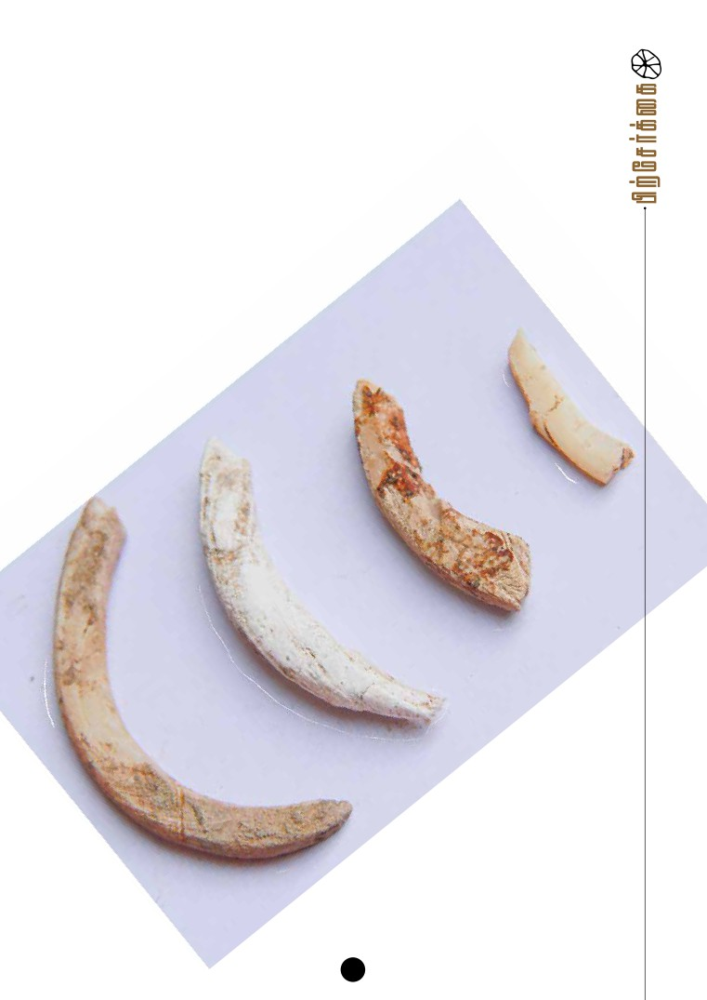
வளையல்கள்
ந்த ஆண்டு கீழடியில் மேற்கொள்ளப்பட்ட அகழாய்வில் உடைந்த வளையல்களின் 23
இ
பாகங்கள் கிடைத்துள்ளன. இத்தகைய வளையல்கள், பல்வேறு அளவுகளிலும் சங்கு மற்றும்
கண்ணாடி மூலப்பொருள்களாலும் செய்யப்பட்டவையாகும். இவை தடித்த மற்றும் மெல்லிய குறுக்கு
வெட்டினைப் பெற்றுள்ளன. ஒரு வளையலின் மேல் பாகத்தில் அழகிய வேலைப்பாடுகளுடன்,
இரு சிறிய கோடுகள் மேல் பாகத்தினைச் சுற்றி அலங்கரிக்கின்றன.
4
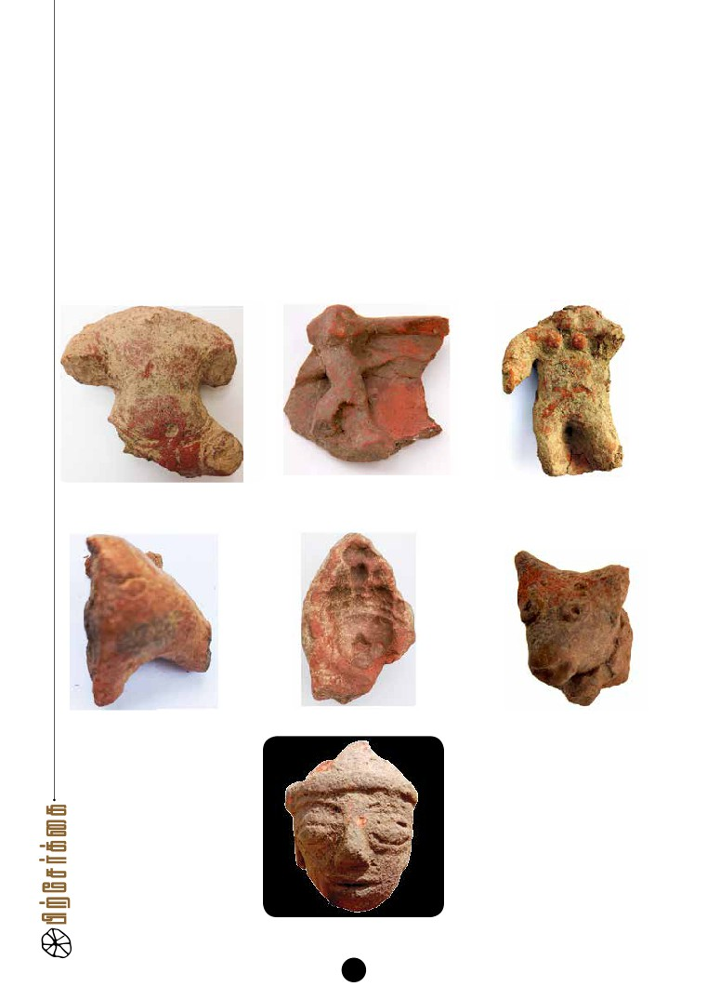
சுடுமண் அச்சு மற்றும்
உருவங்கள்
ழடி அகழாய்வில் இந்த பருவத்தில் சுடுமண்ணாலான 13 மனித உருவங்களும் 3
கீ
விலங்கனங்களின் உருவங்களும் கண்டெடுக்கப்பட்டுள்ளன. இவற்றில் ஒரு மனித தலையின்
அச்சு ஒன்று வெளிப்படுத்தப்பட்டுள்ளது. இந்த அச்சானது மனித தலையினை உலோகம் அல்லது
பிற பொருட்களைக் கொண்டு வார்த்து உருவாக்கக் கூடியது என்று கருதலாம். இதனின்
உட்பகுதியானது மிகவும் நேர்த்தியான வடிவில் வடிக்கப்பட்டுள்ளது. இந்த அச்சிலுள்ள தலை
ஆபரணம், நீண்ட காது ஆகியவை நுண்ணிய முறையில் செதுக்கப்பட்டுள்ளன. இந்த அச்சானது
சலித்த களிமண்ணைக் கொண்டு செய்யப்பட்டு நன்கு தீயிலிட்டு சுடப்பட்டுள்ளது.
Male Torso
Relief
Torso
Horse Head
Mould of a Head
Bull Head
Head
45
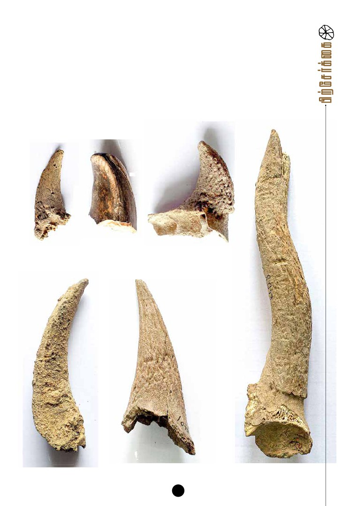
மான் கொம்பு
துவாக, தமிழகத்தில் மேற்கொள்ளப்பட்ட அகழாய்வுகளில் மான்கொம்புகள்
பொ
கிடைக்கப்பெற்றுள்ளன. குறிப்பாக, உறையூர், திருக்காம்புலியூர், போளுவாம்பட்டி,
கரூர், அழகன்குளம் ஆகிய அகழாய்வுகளில் குறிப்பிடத்தக்க அளவில் கிடைத்துள்ளன.
வெளிநாடுகளுடன் செய்யப்பட்ட வணிகத்தில் மான்கொம்புகள் முக்கிய இடம்பெற்றிருந்தன
என்பதை சங்க இலக்கியங்கள் வெளிக்காட்டுகின்றன.
46
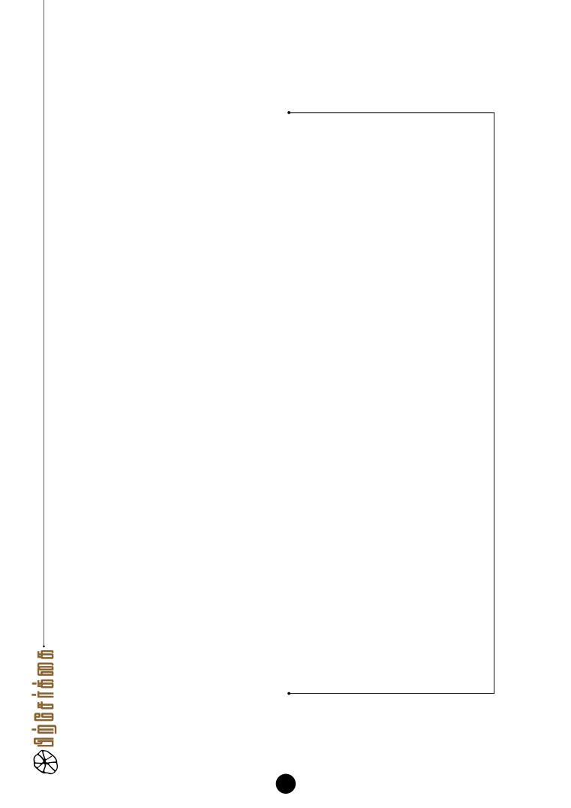
அரியகண்டுபிடிப்புகள்
ங்கத்தினால் செய்யப்பட்ட சில அணிகலன்களின் உடைந்த பாகங்கள்
த
கிடைத்துள்ளன. அவற்றில் நட்சத்திர வடிவ தொங்கட்டான், மணி
வடிவிலான தொங்கட்டான், உடைந்த சிறிய வளையம் போன்றவை
குறிப்பிடதக்கவை. தமிழ்நாட்டில் மேற்கொண்ட அகழாய்வுகளில்
இதுவரை கண்டறியப்படாத தனித்துவத்துடன் கூடிய பெரிய அளவிலான
கருப்பு - சிவப்பு கிண்ணம் கீழடி அகழாய்வில் கிடைக்கப் பெற்றுள்ளது.
கி3 அகழாய்வு குழியில் உறைக்கிணறு ஒன்று அடையாளம் காணப்பட்டது.
இந்த உறைக்கிணறு குடிநீர் பயன்பாட்டிற்கு உபயோகப்படுத்தப்பட்டுள்ளது.
கண்டுபிடிப்புகள்
ழடி அகழாய்வு பண்பாட்டுக் கூறுகளை வெளிக்கொணரும் செங்கல்
கீ
கட்டுமானங்கள், உறைகிணறுகள், கூரை ஓடுகள் மற்றும் அரிய தொல்
பொருட்களான தங்க அணிகலன்களின் பாகங்கள், செம்பிலான பொருட்கள்,
இரும்பு பயன்பாட்டுப் பொருட்கள், சுடுமண்ணாலான ஆட்டக்காய்கள்,
விளையாட்டுச் சில்லுகள், காதணிகள், தக்களிகள், சுடுமண்ணாலான மணிகள்,
கண்ணாடி மணிகள், மதிப்பு குறைவு மணிகள், பானை ஓடுவகைகளான
கருப்பு-சிவப்பு நிறபானை ஓடுகள், கருப்பு நிறஓடுகள், பளபளப்பான சிவப்பு
நிறபானை ஓடுகள், சிவப்பு நிறபானை ஓடுகள் ரோம் நாட்டைச் சார்ந்த
ரௌலட்டட் பானை ஓடுகளின் சாயல் கொண்ட பானை ஓடுகள் ஆகியவைகள்
கண்டெடுக்கப்பட்டுள்ளன. பானை வரைவதற்கு முன்னர் மற்றும் பின்னர்
வரையப்பட்ட குறியீடுகள், தமிழி எழுத்து பொறிக்கப்பட்ட பானை ஓடுகள்
போன்றவையும் கண்டெடுக்கப்பட்டன.
இவை அனைத்தும் இந்த பகுதியில் வாழ்ந்த தமிழர்களின் பண்டைய
நாகரிகத்தின் பண்பாட்டுச் செழிப்பினை வெளிப்படுத்துகிறது. கீழடியில்
மிகப் பெரிய நிலப்பரப்பில் அமைந்துள்ள பண்பாட்டு மேடானாது தென்னை
மரங்களால் பாதுகாத்து வரப்பட்டுள்ளது. 2500 ஆண்டுகளுக்கு முந்தைய
பண்டைய சமுதாயத்தின் பண்பாட்டு வளமையை மறைத்து
வைத்துள்ள
கீழடியினை அகழாய்வு செய்து
வெளிக் கொணர்வது அவசியமாகிறது.
47
பண்பாட்டுக் காலம்
பகுப்பு முறைகள்
ழடியில் மேற்கொண்ட அகழாய்வில் மண்ணடுக்குகளைக் கொண்டு இரண்டு விதமான
கீ
பண்பாட்டுக் கூறுகள் வெளிபடுத்தப்பட்டுள்ளன. இந்த அகழாய்வில் கண்டெடுக்கப்பட்டுள்ள
பானை ஓடுகள், கூரை ஓடுகள் மற்றும் தொல்பொருட்களை கொண்டு கீழடியின் பண்பாட்டுக்
காலத்தை மூன்று காலகட்டங்களாகப் பிரிக்கலாம்.
முதல் காலகட்டம்
இக்காலக்கட்டத்தில் நேர்த்தியான கருப்பு -சிவப்பு பானை ஓடுகள், சிவப்பு நிறபானை
ஓடுகள், கருப்பு நிறபானை ஓடுகள் மற்றும் பளபளப்பான சிவப்பு நிறபானை ஓடுகள் போன்றவை
கிடைத்துள்ளன. இக்காலகட்டத்தில் கட்டுமான செயல்பாடுகள் இருந்ததற்கு சான்றாக செங்கல்
கட்டுமான எச்சங்கள், உறை கிணறு ஆகியவை கிடைக்கப்பெற்றுள்ளன.
இரண்டாம் காலகட்டம்
முதல் காலகட்டத்தில் கிடைக்கப்பெற்ற பானை ஓடுகள் இரண்டாம் பண்பாட்டின் கீழ்மண்ணடுக்குகளில்
கிடைக்கின்றன. ஆனால் இவற்றின் தரம் மற்றும் தயாரிப்பு நடுத்தரமானவையாக உள்ளன. மேலும்,
இருதுளை இடப்பட்ட கூரை ஓடுகள், முக்கிய தொல் பொருட்களான சுடுமண் காதணிகள்,
சுடுமண் மற்றும் எலும்பிலால் ஆன ஆட்டக்காய்கள், கண்ணாடி வளையல் துண்டுகள், சங்கினால்
செய்யப்பட்ட வளையல் துண்டுகள், மதிப்பு குறைவான மணிகள் சேகரிக்கப்பட்டன. இவை
மட்டுமின்றி தக்களி, செம்பு பொருட்கள், செப்புகாசு, முத்திரையிட்ட வெள்ளிகாசு ஆகியவை
இப்பண்பாட்டு அடுக்கில் கிடைத்துள்ளன. மேலும், தந்தத்தினால் ஆனபகடைக்காய், கூர்முனைக்
கொண்ட எலும்புகள், விளையாட்டு சில்லுகள், பானை ஓடுகள், இரும்பு பொருட்கள் ஆகியவை
கிடைக்கப் பெற்றுள்ளன.
மூன்றாம் காலகட்டம்
பளபளப்பான சிவப்பு நிற ஓடுகள், சிவப்பு நிறபானை ஓடுகள், கண்ணாடி மணிகள் போன்றவை
இக்காலகட்டத்தின் மண்ணடுக்கின் மேலடுக்கில் கிடைத்துள்ளன.
இதனடிப்படையில் கீழடியில் முதல் பண்பாட்டுக்காலம் கி.மு. 6ஆம் நூற்றாண்டு முதல் கி.மு
3ஆம் நூற்றாண்டு வரை என அறிவியல் அடிப்படையில் நிறுவப்பட்டுள்ளது. இரண்டாவது
பண்பாட்டுக் காலம் கி.மு. 3ஆம் நூற்றாண்டு முதல் கி.பி 4, 5ஆம் நூற்றாண்டைச் சேர்ந்ததாகும்.
மூன்றாவது பண்பாட்டுக் காலம் கி.மு. 4, 5ஆம் நூற்றாண்டு தொடங்கி முதல் கி.பி 11,
12– ஆம் நூற்றாண்டைச் சார்ந்ததாக உள்ளது.
எனவே, காலத்தால் முந்தைய முதல் காலகட்டமானது, கீழ்மண்ணடுக்கிலும், அதனையடுத்த
இருக்காலக்கட்டங்களும் கீழ் அடுக்குகளின் மீது ஒன்றன் மீது ஒன்றாக அமையப்பெற்றுள்ளது.
48
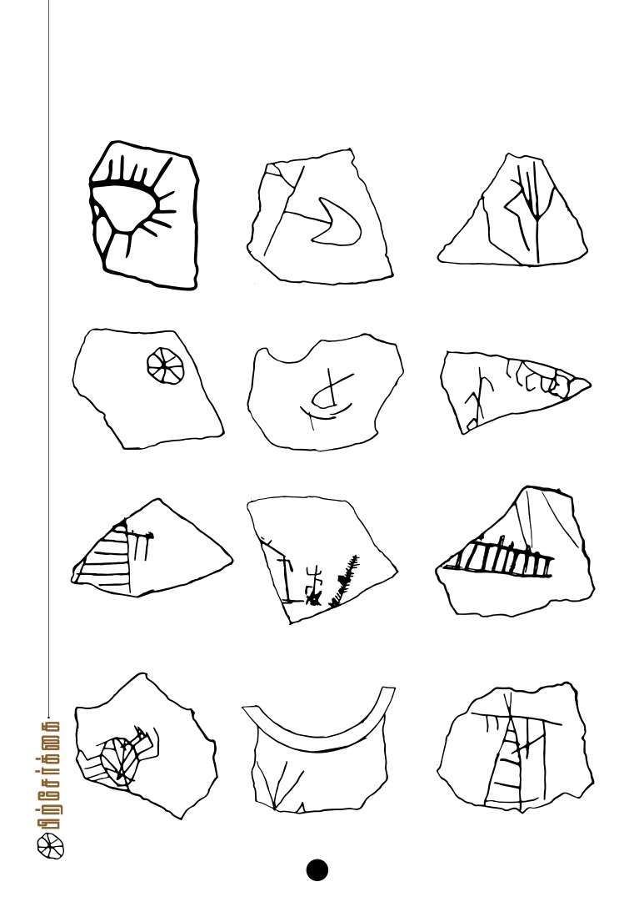
கீறல்களும் குறியீடுகளும்
49
வண்ணம் தீட்டப்பட்ட
பானை ஓடுகள்
51
சிந்துவெளியும் கீழடியும்
Keeladi graffiti
INDUS sign
indus sign-225
indus sign-307
indus sign-365
indus sign-318
indus sign-318
52
Keeladi Excavation Team
Under the guidance of
Thiru T. Udhayachandran, I.A.S,
Principal Secretary and Commissioner
Department of Archaeology
Dr. D. Jagannathan, I.A.S.,
the then Commissioner [FAC].,
Department of Archaeology
Excavation Team
Excavation Director
- Dr. R. Sivanantham, Deputy Director
Excavation Co-Director
- Dr. J. Baskar, Archaeological Officer (i/c)
Excavation Expert
- Thiru M. Seran
Archaeologists
- Thiru J. Ranjith
Thiru M. Prabhakaran
Thiru T. Thangadurai
Thiru S. Nandakumar
Thiru K. Sakthivel
Thiru B. Asaithambi
Surveyor
-
Thiru T. Thangavel, Executive Engineer
Thiru K. Olimalik, Asst. Executive Engineer
Chemist
-
Thiru P. Kaleeswaran, Chemist
Thiru P. Senthilkumar, Assistant Chemist
On site Supporting
- Institute of Epigraphy Students
(2017-2018 & 2018-2019)
Technical Assistance
- Thiru D. Prakash, Superintendent
Thiru M. Muthukaruppu, Office Assistant
Thiru P. Senthilkumar, Driver
Administrative Supporting
- Thiru V. Sivanandam, Assistant Director (H.Q)
Staff
Selvi R. Kavitha, Assistant Accounts Officer
Tmt. D. Sridevi, Superintendent
Tmt N. Nagarathinam, Superintendent
Tmt. B. Mythili, Superintendent
Thiru B. Nagesh, Assistant
Tmt. G. Umavathy, Assistant
Thiru S. Anbunambi, Cashier
Drawings prepared
- Thiru M. Ramesh, Research Assistant
53
Places of Excavations carried out by
department of archaeology
Year of
Place
District
Nature of Site
excavation
1
Korkai
Thoothukudi
1968-1969
Early Historic
2
Panchalankurichi
Thoothukudi
1968-1969
Modern
3
Vasavasamudram
Kancheepuram
1969-1970
Early Historic
4
Anaimalai
Coimbatore
1969-1970
Megalithic
5
Pallavamedu
Kancheepuram
1970-1971
Medieval
6
Karur
Karur
1973-1974
Early Historic
1994-1995
7
Panayakulam
Dharmapuri
1979-1980
Early Historic
8
Boluvampatti
Coimbatore
1979-1980
Medieval
1980-1981
9
Kovalanpottal
Madurai
1980-1981
Megalithic
10
Thondi
Ramanathapuram
1980-1981
Early Historic
11
Gangaikondacholapuram
Ariyalur
1980-1981
Medieval
1986-1987
2008-2009
12
Kannanur
Tiruchirappalli
1982-1983
Medieval
13
Kurumbanmedu
Thanjavur
1984-1985
Medieval
14
Palayarai
Thanjavur
1984-1985
Medieval
15
Alagankulam
Ramanathapuram
1986-1987
Early Historic
1990-1991
1992-1993
1994-1995
1996-1997
2014-2015
2016-2017
16
Tirukkovilur
Villupuram
1992-1993
Early Historic
17
Kodumanal
Erode
1992-1993
Megalithic & Historic
1996-1997
18
Sendamangalam
Villupuram
1992-1993
Medieval
1994-1995
19
Padavedu
Tiruvannamalai
1992-1993
Medieval
20
Tiruttangal
Virudhunagar
1994-1995
Microlithic
21
Poompuhar
Nagapattinam
1994-1995
Early Historic
1997-1998
22
Maligaimedu
Cuddalore
1999-2000
Early Historic
23
Teriruveli
Ramanathapuram
1999-2000
Early Historic
24
Mangudi
Tirunelveli
2001-2002
Microlithic
25
Perur
Coimbatore
2001-2002
Early Historic
26
Andipatti
Tiruvannamalai
2004-2005
Early Historic
27
Modur
Dharmapuri
2004-2005
Neolithic
28
Marakkanam
Villupuram
2005-2006
Medieval
29
Parikulam
Tiruvallur
2005-2007
Palaeolithic
30
Nedunkur
Karur
2006-2007
Megalithic
31
Mangulam
Madurai
2006-2007
Early Historic
32
Sembiyankandiyur
Nagapattinam
2007-2008
Megalithic
33
Tarangambadi
Nagapattinam
2008-2009
Modern
34
Rajakkalmangalam
Tirunelveli
2009-2010
Medieval
35
Talaichankadu
Nagapattinam
2010-2011
Medieval
36
Alambarai
Kancheepuram
2011-2012
Modern
37
Srirangam
Tiruchirappalli
2013-2014
Medieval
2014-2015
38
Ukkiran Kottai
Tirunelveli
2014-2015
Medieval
39
Pattarai perumbudur
Tiruvallur
2015-2016
Later Palaeolithic
2017-2018
40
Keeladi
Sivagangai
2017-2018
Early Historic
2018-2019
54
bibliography
Wheeler, R.E.M., Ghosh, A., and Krishna Deva 1946 “Arikamedu, An Indo-
Roman Trading Station on the East Coast of India”, Ancient India, vol.2, Archaeological
Survey of India, New Delhi, pp.17-125.
Begley, Vimala 1988 “Rouletted ware at Arikamedu: A New Approach”, American
Journal of Archaeology, vol.92, no. 3, July, pp.427-440.
Begley, Vimala 2004 “The Dating of Arikamedu and its Bearing on the Archaeology
of Early Historical South India”, in Jean-Luc Chevillard (ed.), South-Indian Horizons:
Felicitation Volume for Francois Gros, Institut Francais de Pondichery and EFEO,
Pondicherry, pp.513-537.
Raman, K.V. “Heritage in Clay”, in K.V.Raman, Temple Art, Icons and Culture of
India and South-East Asia, Sharadha Publishing House, Delhi, 2006. Pp.90-92
Shanmugam, P., Terracotta Art in the Tamil country , Bulletin of the Chennai
Government Museum, Vol.XV, no.8, 2007, Chennai,2007.
Subramanian, A., Terracotta Art in Tamilnadu”, Annals of Oriental Research, Silver
Jubilee Volume, 1975, pp.140-144.
Rajan, Gurukkal, 1989 “Forms of Production and Forces of Change in Ancient
Tamil Society”, Studies in History, Vol. 5 (2), pp.159-175.
Rajan, K., 1991d
“New Light on Graffiti Marks”, Journal of Marine Archaeology,
vol.2 :47-54.
Rajan, K., 1995
“Traditional Bead Making Industry in Tamil Nadu, a report
submitted to the Nehru Trust, New Delhi.
Rajan, K., and Osmund Bopearachchi, 2002 “Graffiti Marks of Kodumanal (India)
and Ridiyagama (Sri Lanka) - A Comparative Study”, Man and Environment, vol.27
(2), pp.97-105.
Raman, K.V., 1976 “Brahmi Inscription of Tamil Nadu: an historical assessment”,
The Sri Lanka Journal of South Asian Studies, vol.1(1), pp.64-75.
Subramanian, N., 1980 “Sangam Polity” - The Administration and Social life of the
Sangam Tamils, Ennes Publications, Madurai.
Gurumurthy, S., 1999 Deciphering the Indus Script: From Graffiti on Ancient Indian
Pottery, University of Madras, Madras.
55